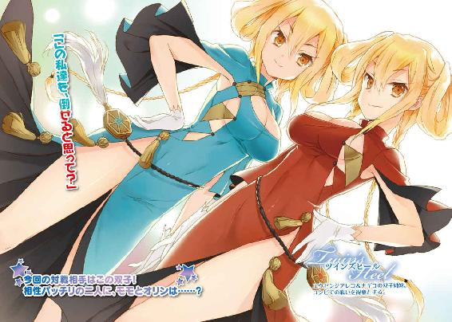

| アイドライジング！(2) (電撃文庫) | |
| 広沢サカキ | |
| (2014) | |


本書（電子版）に掲載されているコンテンツ（ソフトウェア／プログラム／データ／情報を含む）の著作権およびその他の権利は、すべて株式会社ＫＡＤＯＫＡＷＡおよび正当な権利を有する第三者に帰属しています。
法律の定めがある場合または権利者の明示的な承諾がある場合を除き、これらのコンテンツを複製・転載、改変・編集、翻案・翻訳、放送・出版、公衆送信（送信可能化を含む）・再配信、販売・頒布、貸与等に使用することはできません。
時計の針が夜八時五十五分を指すのと全く同時に、腕組みをしていた少女はかっと目を見開いた。そして椅子からすくっと立ち上がる。
「よし」
揺れる長い黒髪から覗く顔は端整なもの。頰は白く鼻は小さく唇は薄く、しかしつんとした気の強さを感じさせる瞳はきらりと輝いて大きかった。
そしてその華奢な身に纏うは、純白なるゴシック・ロリータの戦闘装束。
株式会社ラネイドのアイドル、ハセガワ・オリンは控え室でアイドライジングの開始時間を待っていた。
「ようやくこの時が来たわ......伝説の始まりね」
ふっふっふっと肩を揺らして笑う。
「全世界に私の美貌と魅力を振りまくショータイムの幕開けよ......ま、既にそこそこファンはついてるわけだし、今回のアイドライジングですぱーんと目立てば、一気に有名アイドルの仲間入り間違いなしね。魅惑のステージタイムなんだから、時間めいっぱい使ってたっぷり試合しなきゃ。そうそう、髪もちゃんと整え────」
「あのう、オリンちゃん」
声がかかる。向くと、そこにはややぽっちゃり体型な中年の男が椅子に座っていた。浮かべる柔和な笑顔と体のラインの丸さから底なしに優しい印象を受ける。
「なによウダっち」
水を差され憮然とするオリン。
「やっぱり、今日の対戦アイドルの情報を少し聞いておいたほうがいいんじゃないかな？」
ウダっちと呼ばれた男、ウダガワ・ジュンイチはやや心配そうに目尻を下げながらぱらぱらと手元の資料を繰っている。彼はオリンの所属するアイドル代理会社ラネイドの社長だ。まあ社長とは言ってもラネイド社員は彼一人しかおらず、実務的なものは全て一人でやっているような状況だが。
「いらないわよ。私は努力とか下調べとか練習とかそういう地道な事が大嫌いなの。それに今回はようやく出場停止が解けた私の初舞台よ？ こましゃっくれた事考えてびくびくおどおどしてるよりも、威風堂々としてた方がデビューにはふさわしいに決まってるじゃない」
そうなのだ。彼女は先日他の試合に許可もなく突如乱入してしまったため、アイドライジング協会から二週間出場停止という処分を受けていた。そして今日は晴れてその処分が解けた後の復帰試合、オリンにとって正式なデビューとなる試合なのだ。
「んー......まあそう言うのなら、それでもいいんだけど。あ、電話だ」
ウダガワは応対に出て二、三言交わすと受話器を置いた。
「出場準備ね？」
「うん、ケガしないように頑張って」
扉の目の前まで行き、ぴたりと立ち止まるオリン。
「ウダっちは幸運よ」
そして続ける。
「伝説が築かれる様を、今夜その目で目撃できるんだから」
高笑いをしつつ控え室を出て行くオリンの背中を、ウダガワは心配そうに見送った。
★ ★ ★
『みなさんこんばんは！ アイドライジングアナウンサーのミツキ・マリノです！ アイドライジング、それは夢と希望の宝石がきらびやかに夜を飾る舞踏会、もとい汗と涙の結晶に血が彩りを添える武闘会でございます！ そう、ここは華やかなるものの厳然たる勝負の舞台。時として勝利のために、雄々しく立ち向かう事もあるのです。躍る髪、滴る汗、迸る激情に身を任せる美少女達のその姿！ それは粗にして野だが卑ではない、いやいやアイドライジングの場合、楚にして能であり陽でもあるのです！ さあ！ 今夜も海にたゆたう近未来都市ニライカナイよりお送りするアイドライジング、スタートです！』
ミツキ・マリノはウインクを飛ばし、高らかにアイドライジングの開始を宣言した。
東京湾に浮かぶ海上都市ニライカナイ。この近未来の風格漂うメガフロートに建設された綾時橋ドームにてアイドライジングは行われる。実況を交えた試合の生放送をテレビとインターネットを介し全国へ配信。基本的には無料だが、有料会員に登録すると様々なサービスや特典などが受けられる。その登録者は日本国内だけに留まらず海外にも及び、総数はなんと日本の総人口の半分へと迫る勢いだ。そしてアイドライジング一夜で動く金額は数十億とも言われているほど。
アイドライジングはいまや日本経済の趨勢を左右しうる一大エンターテインメントなのだ。
『さあて、まず今夜の先鋒として登場するのはハセガワ・オリン！ マツリザキ・エリー対アイザワ・モモ戦に突如乱入し、一躍時の人となった彼女です！ あの試合は放送直後すさまじい反響があったものの乱入やステージ破損によるルール違反のため無効となり、ネットでも公式配信なしという幻の試合となりました！ つまり、オリンにとって正式なデビュー戦は今晩となるわけです！ 出場禁止も解かれ二週間ぶりに姿を現す彼女、シャバの空気を味わう余裕はあるかっ⁉ ゴスロリを着こなしギャグもこなす、可憐なるヒールの登場ですっ‼』
マリノの手が指し示す方向から、スポットライトを浴びせられたオリンが登場した。
（ギャグもこなせるっていう説明は別にいらないっつーの......）
胸中に文句を秘めつつ、オリンは笑顔を絶やさずに熱い声援の中を進んでいく。
『そしてそのオリンの相手をするのは、ユウゼンジ・アレコ！ バトルドレスは宮条ハウス開発のスカーレットイージス！ 高校二年生とは思えぬグラマーな体に狙った露出のスカーレットイージスの組み合わせで非常に男性人気の高い彼女ですが、それだけではありません！ 特性を利用した独特で多彩な格闘術は、彼女自身を《シブースト・エアライン》へと昇格させるほどの本物の実力！ さあ着実にランクを上げ今勢いのある彼女、今夜の相手を足掛けにそのままスターダムを駆け上がることは出来るのかっ⁉』
オリンの登場した入口と正反対の場所から、ユウゼンジ・アレコは姿を現した。
まず受けるのはシャープという印象。鋭い目、細い顎、肩から足の爪の先に至るまでのラインもすうっと流れ淀みがない。だが、そのスリムな印象を強烈に打ち崩す部分が一点。胸だ。なぜか彼女の胸部は他の細く出来た部位と違い、非常にふっくらと豊かに育っていた。まるでか細い大地に実った瑞々しい果実のようだ。
そして体を包むバトルドレス、スカーレットイージスは暖色系。アオザイをアレンジしたようなデザインで、露出している部分から覗く深い谷間がついつい目を惹く。自前の黄色い髪も細く結いてさげてあり、衣装と合わせているのがうかがえる。
『さて、奇しくも二人はヒール。今晩の第一試合はまずヒール対決という事になります。勝利の女神はどちらの悪魔に微笑むのか⁉ アイドライジング第一試合、ハセガワ・オリン対ユウゼンジ・アレコ、試合開始っ‼』
マリノの言葉で観客のボルテージは最高潮へと達した。
『ユウゼンジ・アレコ、だっけ？ 今日私と戦えること、光栄に思いなさい。私の伝説の礎になれるんだから。歴史に名が刻めるチャンスよ』
マイクを使ったオリンの煽りに、ドームの熱狂はより強く渦を巻いていく。
『......弱い犬ほどよく吠える、とはよく言ったものですわ』
ぽつり、とアレコの言葉。
『なんですって？』
『この間のエリー対モモの乱入戦、拝見しましたわ。大変ですわね、ギャグアイドルって。ああいうやり方でキャラを立てないとやっていけないんですもの。ご苦労お察ししますわ』
『聞き捨てならないわね。私はギャグじゃなくて、この世の全員を魅了しうる美しい顔立ちが一番の売りなんだから！』
『まあ確かに端整でいらっしゃいますわね。ただアイドライジングのアイドルは戦うアイドルですわ。お顔も大事ですけれど、体つきのほうも大事じゃなくて？』
アレコは腕組みをして、たわわに実った胸をぐっと強調した。美しい形の双球がぽよよん、と波打って形を崩す。腕から溢れんばかりのボリュームだ。
『う......少しばかりでかいからって......』
別の意味での体つきアピールはオリンに大打撃を与えた。
『あなたは随分と凡庸で平均的ですのね。アイドルたるもの、突出したものをもつべきですわよ。まあ、私のは生まれ持った才能のなし得るものですけれど』
『ぐぬぬ......』
『うふふ。あとはこっちで語り合うことにしましょうか』
右手だけを腰の後ろに組み、左半身を前に出す独特な構え。そして誘うように手のひらを上に向けた左手をすっと前に出す。これがアレコの基本スタイルのようだ。
よく見ると、前に出された左腕には特殊な籠手のようなものが装着されている。恐らくスカーレットイージスの特性に関係しているのだろう。
《フェアリーテイル》
オリンはまず自分のバトルドレスの特性を使用して宙に浮かんだ。
『オリンのバトルドレス、フェアリーテイルの特性は空中浮遊という非常に珍しいもの！ ピーキーなため扱いは非常に困難なのですが、操作法を習得すれば死角である上空からの攻撃が可能になります！ オリンはこのじゃじゃ馬をどこまで使いこなせるのでしょうかっ⁉ その可否が試合の勝敗を決定すると言っても過言ではないはずですっ！』
各企業に所属しているアイドルは、その企業の所有するバトルドレスという衣装を着て舞台に立つ。それらには必ず特性という開発会社の技術の結晶と言えるギミックが搭載されているのだ。それをバトルという形で披露するエンターテインメントがアイドライジングだ。
アイドライジングの目的や影響は多岐にわたるが『各社の独自技術の宣伝』、象徴すべき最も大きい意味合いを持つのはこれだろう。
《スカーレットイージス》
アレコの特性発動音が響いた。そして籠手の付いた左手を横にスライドさせ、発生した何かを上空へと投げる。
『おりゃあっ！』
そして、空中からオリンが飛び蹴りをアレコの顔面に叩き込もうとした瞬間、
『ぶっ！』
なんと見えない壁に激突し、進路を阻まれた。
『出ましたっ！ スカーレットイージス！ 左手から特殊ガラスを出現させ瞬間的に加工することにより、透明な防御壁を目の前に作り出すっ！ 今の行動もまさに早業！ この不可思議な盾はまさにイージス！ 独特な拳法との組み合わせでどんな猛攻をも捌ききる鉄壁のアイドルですっ！』
べちゃっと地面に落ちたオリンは、赤くなった鼻をさすりながらゆらりと立ち上がる。遅れて透明のガラス板も床へと落下した。
『よくも恥をかかせてくれたわね......』
オリンの顔は怒りで染まっている。
『真正面から叩き潰してあげるわっ！』
今度は特性を使わずに真正面から走っていくオリン。
『そう。ならば私はここから動かずに勝負を決めてみせますわ。私のイージス、破ってごらんなさい』
《スカーレットイージス》
アレコは手のひらを前に差し出しつつさっと横に流す。この動作だけで不可視の盾は目の前に張られたのだろう。
それを見て、オリンはききっと急ブレーキをかけて停止する。そして、手を伸ばし宙に浮いているスカーレットイージスをぺたっと触る。場所が分かると、オリンは拳を思い切り振りかぶって渾身の力でぶん殴った。
がしゃあん、とまさにガラスの破砕音がしてスカーレットイージスは砕け散った。
『いったぁ......』
じんじんと痛む拳を押さえるオリン。
《スカーレットイージス》
そこでアレコはまたも特性を発動させ、目の前の空間を撫でた。
「！」
突然の行動にオリンの対応が遅れる。
大きく回転しつつ、スカーレットイージスの横から回りこむアレコ。そのまま軽い左フックをオリンの体に突き刺し、続けて踏み込んだ肘で顎をかち上げる。
『かふっ』
脳が揺れ、混乱するオリンの意識。
アレコは左足をオリンの腹に当て、張ってある透明の盾へと押し付けた。
《スカーレットイージス》
もう一度特性を発動させるとオリンの体から足を離し、盾を張る。これでオリンの体は二枚のスカーレットイージスに挟まれるような形となった。
『あ、あれ、動けない......』
密接した不可視の盾に挟まれて、オリンは身動きがとれなくなる。
『チェックメイトですわ』
そう言ってアレコは腰のボタンを叩く。
《アクセルスマッシュ》
スカーレットイージスから勝負を決めるための音声が鳴った。アイドライジングは、試合中三回しか使用できないこのアクセルスマッシュを決められると敗北となる。
『え......』
オリンはようやく自分が絶望的な状況に追い詰められた事を理解した。しかし、アレコに容赦する理由はない。
『ちょっとまっ』
アレコは左腕の籠手に強烈な稲光を宿しながら、強く踏み込んでオリンへと肘を撃ち放つ。アクセルスマッシュは炸裂し、オリンの体ごとスカーレットイージスを貫き、砕いた。
やや耳障りでいて、ひやっとさせる美しい破砕音が高らかにドームに響く。
粉砕されたスカーレットイージスの欠片と共にオリンは膝をついた。次の瞬間、オリンの敗北を決定づける音、誰もが主役になれる魔法が解けてしまう鐘の音、シンデレラ・ベルが鳴った。
『驚くほどあっさりと勝負は決してしまったあっ！ ユウゼンジ・アレコ、得意の戦法が型にはまり話題の新人アイドルを瞬殺だあっ‼ 盾を使った戦法とは言っても彼女はそれを防御だけに使うわけではありません。相手の行動の妨害、制限のため、そして勝利へと繫げるために使用するわけですね。自身の特性を熟知した勝利です！ さあ対してハセガワ・オリン、大口を叩いた割に一分ももたずに撃沈‼ これは恥ずかしい！』
「う、動かないって言ったくせに......」
忌々しそうに睨めつけるオリン。
「あらあ？ そんな事言った覚えはないですわ」
アレコはもう一度、その豊かな胸を見せつけるように腕を組んだ。
「卑怯者め......」
「ふふ、褒め言葉ですわ。私はヒール、卑怯が売りですもの」
艶めかしい微笑も、オリンにとっては業腹でしかない。
『えー、ちなみにアイドライジングデビュー戦のアイドルが一分ももたずに敗北というのは非常に稀なケースですね。デビュー戦の場合、新人アイドルのバトルドレスの特性は公開されないため、未知の特性を使った駆け引きこそが勝利の鍵となってきます。そうなるとたとえベテランであってもうまく手が出せずに試合時間は他と比べて長くなりがちになるのです！ 確かに今回はフェアリーテイルの特性はバレていたとはいえ、公式記録としてはデビュー戦瞬殺というまことに珍しく恥ずべき経歴は永遠に消せずに残ってしまうことになります！ ある意味伝説と言っていい試合でありました！ 挑発も様になっていた分、本人はなおのこと恥ずかしい思いをしているのではないかと思いますが......』
そこでマリノはなにかに気付いたように手をポンと打った。
『なるほど、彼女は戦歴より笑いをとったのですね！』
『うっさい！』
ドーム内の観客からどっと笑いが起こった。
★ ★ ★
「やっぱり」
控え室、お茶をすすりながらウダガワは呟いた。
「まあ、笑いが取れればうちの勝ちだから、これはこれで」
ウダガワは個人的な目論見を口に出し、なんとなく結果に納得していた。
だがこの後、ステージから帰ってきたオリンから理不尽極まりない罵倒を浴びせられ、凄まじい剣幕で人格を蹂躙される事を彼はまだ知らない。
九月一日、木曜。
海上都市ニライカナイの都市エリアにある玩具会社ミニテックス。そのオフィスビルの中にある、アイドル事業部キムラ別室の札がかかる一室。
そこで、朝からとある重大な会議が行われていた。
「今朝みんなに集まってもらったのは他でもない」
そう切り出したのはキムラ別室の最高責任者、室長であるキムラ・ユウガク。中年と言っていい歳だが、やや無理をした服装から強引な若さを感じる男だ。
「モモちゃんの住まいとして、マンションの一室を借りようかと思ってるんだよね」
「ええっ！ 今のままじゃダメなんですか？」
ミニテックスのアイドル、アイザワ・モモは悲しそうに尋ねた。美人系の非常に整った顔立ちの彼女だが、その顔はころころと豊かに感情表現をしてくれるため冷淡さなどは感じられない。長く艶やかな桃色の髪も明るく、快活な印象を受ける女の子だ。だが、何を差し置いても彼女の最大の特徴はたった一つ。
背が高い。この一言に尽きる。
高校一年生にしてなんと１８１センチの長身の持ち主。体の細かい部分も非常に出来がいい彼女だが、どんな特徴もこの身長を前にすると霞んでしまうだろう。
「うーん、さすがにそういうわけにもいかないんじゃないかなーって思ってさ」
ユウガクはモモに迫られ、困った顔をしながらも続けた。
「モモちゃんは今までサイちゃんのマンションに住んでいたけれど、あれはごたごたが続いていたのが最大の理由だったからね。もう落ち着いたんだからその辺は整理しないと。当然だけど、モモちゃんに関わるってことはサイちゃんにとってお仕事なんだ。私生活の場である自宅にモモちゃんがいるとなると、サイちゃんのプライベートな時間がほぼないことになる。それを精神的につらく感じる事もあるだろうから」
「あうう......」
ユウガクのもっともなセリフにモモはうめくだけだ。
「それに、モモちゃんの活躍のおかげでうちにも多少臨時予算がおりるんだ。キムラ別室としては余裕が出てきたから、金銭的な部分は気にしないで。上をつついてある程度補助も出させるからさ。どうする？ サイちゃん」
そう話を振られたのはオウダ・サイ。キムラ別室に所属する社員で、モモのアイドル活動を全面的に管理しサポートする女性プロデューサーだ。
「さ、サイちゃん......」
不安げに近寄ってくるモモと比べると、サイの身体的特徴はなお際立つ。そう、サイはモモとは逆に背がものすごく小さいのだ。スーツを着ているものの、その姿は小学生と言って充分に通用する。
しばらくその小さな頭を垂れていたサイだったが、やがてすっと背筋を伸ばした。
「......いえ、モモちゃんさえよければ私はモモちゃんと一緒に暮らします」
きっぱりとした物言いだった。
「サイちゃんがそう言うなら、俺から言う事はなにもないかな。ああ、女子二人がキャッキャウフフして生活する部屋。甘い香りのするまさにサンクチュアリ......俺、お邪魔しに行っちゃおっ────」
「よかったー‼」
ユウガクの言葉は、モモの歓喜に遮られた。
「私、やっぱりサイちゃんと暮らしたいもん！」
サイを軽々と抱き上げて、正面から見つめるモモ。
「そうね、私もよ。今までモモちゃんと一ヶ月近く暮らしても平気だったしね。それになんだか、モモちゃんって目が離せないから」
「サイちゃん......」
好意的なサイの言葉を聞いて、瞳を潤ませていく。
「私サイちゃんのこと大切にするから！」
モモは嫁をもらったかのようにサイを育ちかけの柔らかな胸で抱きしめた。
「はいはい」
モモの頭を撫でながらサイは笑う。そしてその後にこう続けた。
「......だからモモちゃん。毎朝、私のことちゃんと起こしてね♪」
「もちろんだよ！ 朝ごはんも作るしアイロンがけもやる！」
元気いっぱいに宣言するモモ。
「サイちゃん......もしかして......」
キムラ別室始動の際、社内泊によってサイの超低血圧っぷりを知っているユウガクはジト目をサイへと向けた。
「さ、さあモモちゃん。今日から学校でしょ、しかも始業式なんだから遅れちゃ大変、車で送ってってあげるわ」
まるでその視線から逃れるようにしゅたっと地面に着地したサイは、そそくさとオフィスを出て行った。
★ ★ ★
同日ほぼ同時刻、ハセガワ・オリンは不機嫌だった。言うまでもなく昨日のアイドライジングでの伝説的な敗北のせいだ。
「まったく......」
ウダガワの運転する車内、オリンは先程買ったペットボトルのオレンジジュースを開封して乱暴に一口。制服は白のブラウスにプリーツスカート、胸元にはモスグリーンのリボンタイという華やかなもの。正統派美少女のオリンが着こなせばまさに垂涎ものの可憐さだ。
オリンはもう一度憤然とジュースを口に含むと、自らの持つペットボトルに付いていた小さな袋を取り外し、開封した。
「またダブった......」
そして出てきたアニメ版なゆたのフィギュアを見て更に表情を険しくする。
今キャンペーン中の〈コハクのなゆた〉ボトルキャップフィギュアだ。オリンが狙っている原作版なゆたはなかなか出てくれない。レアバージョンなのだ。
「アニメ版ばっか出てもしょうがないのに......」
苛立たしげに呟き、車のダッシュボードに飾られたたくさんの〈コハクのなゆた〉ボトルキャップフィギュアの軍勢にそれを加える。
オリンは夏休みに〈コハクのなゆた〉にハマって以来、着実にグッズを収集しているようだ。
「面白くないわね......」
腕組みをし、むくれるオリン。
このフィギュアのダブリは、オリンのイライラに輪をかけてしまったようだ。
隣でハンドルを握るウダガワはと言えば、顔の下半分がなぜか包帯でぐるぐる巻きにされていた。目の周りの青あざがなかなか痛ましい。
車が赤信号で停車した際、ウダガワは隣のオリンに話しかけた。
「おいんひゃん、わっこうのまえまれいっていいんらっけ？」
オリンはウダガワを一瞥した後、しばらく硬直した。
「......どうやら宇宙人アイドルと交信が成功したようね、おめでとう。これからはその天然とトップ目指して仲良くやってちょうだい。じゃ、私ここで降りるから──」
ウダガワは慌ててオリンを引き止めると、携帯で打った文字を見せた。
『昨日のせいであごがうまく動かせなくて......』
「............」
それを見てオリンはひとまず上げかけた腰を助手席へと戻した。ちょうど信号は青へと変化し、ウダガワは急いで車を発進させる。
昨日、とはつまりあの試合後の控え室で行われたウダガワに対する厳罰、もとい八つ当たりのことであろう。
「そんな包帯までして、大げさよ。本気でかちあげてないから砕けてはないでしょ」
「まあくらけてらいとおもうへろ......」
ウダガワの返答は相変わらず解読困難なものだった。ひとまず携帯での筆談に切り替え、ウダガワは赤信号待ちの時間を使い、もう一度携帯をオリンに差し出した。
『学校の正門でいいよね？』
「駅まででいいわ。このオンボロカー、坂登るの遅すぎるから」
オリンの希望に添って、ウダガワは車を鳴谷駅へと向けた。
鳴谷駅。
海上都市ニライカナイの外周をぐるりと繫ぐ環状線、シャトルトレインの駅のひとつだ。本州の鉄道と乗り換えが出来るニライカナイの玄関、綾時橋駅から十五分程度。都市エリアにあり、高校や大学など教育施設が集中する学生街として賑わっている。
ウダガワは駅のロータリーに入り邪魔にならないよう端に停車させた。
「じゃ、帰りもここに迎えに来なさい。終わる頃にはメールするから」
ウダガワは素直に頷く。二人の関係の主導権はオリンにあるようだ。
「昨日の失態を払拭するような大きな仕事の一つや二つ、ちゃんと引っ張ってきなさいよね」
捨て台詞を残し、オリンはドアをばたんと閉めた。
そして、高校へと歩き出す。
この鳴谷という地域はニライカナイでも珍しくなだらかな山々に囲まれている。鳴谷は他の地域と違い建設物が比較的少ないため、メガフロート全体のバランスを取るための小高い丘が存在するからだ。土砂を堆積させて形成した丘、防風防雨も兼ねる森林、住人の精神的充足のための自然公園。このような自然環境は生活、景観の面でもニライカナイに必要不可欠であったし、教育施設を主として計画されていた鳴谷という土地柄と非常に結びつけやすかった。
鳴谷に自然環境がある理由はこんなところ。
ただ駅から他の場所へと移動する際にこの高低差は結構きつい。ましてオリンの通う高校は数ある山の中で最も高い山の頂上にある。たかだか十五分程度の距離だが、ニライカナイの住民にとって慣れない坂道を登るのは消耗の激しい行為だ。
「さっさとスクールバスでも通せばいいのよね。いや、でもそうすると私みたいなのは痴漢される可能性があるから、結局歩くハメになるのか......」
ぶつぶつと妄想を垂れ流しながらオリンは舗装された白い道を歩く。
「アイドルだと色々な部分に気を使わなきゃいけないから大変ね」
ふふんと鼻を鳴らすオリンの横を、ベンツがすーっと音もなく車道を走っていった。
「あれは......」
立ち止まるオリンの横で、通学中の生徒達がざわめきだす。
「あ、マツリザキ・エリーの車だ！」
「え？ 俺初めて見た。へー、エリーって本当に車で通学してんだ」
「当然だろ。アイドライジングのトップアイドルだぜ？ シャトルトレインなわけないだろ」
「相変わらず大きなベンツ。豪華ね～」
「まあトップアイドルだもん。下手な車に乗るわけにはいかないっしょ」
姿も見せず、ただ車で通っただけで脇の歩道を騒がせていく。その影響力はさすがと言わざるをえないだろう。
「......私だって、いつかはランボルギーニとかアルファロメオで颯爽と学校に乗り付けてやるんだから......」
オリンはむむむと唸りながら、ずんずんと歩みを再開させた。
私立鳴谷鶯高校。
それがオリンの通う高校の名前だ。
鳴谷の小高い山、城山の頂上に存在しニライカナイにある高校の中では敷地面積、生徒数、設備の充実っぷり、そして学力の面でも一位を誇る。制服も有名なデザイナーの手がけたものらしく生徒からの人気も高い。そしてこの高校の唯一にして最大の売りは、ニライカナイ在住の女子高生アイドルはほぼここに所属しているということだ。
オリンは朝の挨拶の行き交う正門を見上げながら呟いた。
「この門、夏休み明けに見るとでかさが際立って見えるわね」
まず正門は三メートルほどの鉄門扉。観音開きで迎えてくれるそれをくぐり、守衛室を横に見ながら歩けば次は駅の改札のようなチェックポイント。列を作り、生徒達が順番待ちしている状況だった。
「改札が少なすぎるって要望を出しといたのに、いつになったら改良されんのかしら」
文句を言いつつ、順番が巡ってくると自分の電子学生証でパスする。
そこを通ってようやく昇降口へと辿りつける。その下駄箱も学生証による電子キーロック付き。教室、教室内のロッカー、更衣室、特別教室、各種通用口その他もろもろほぼ全てが電子管理されており、不正なＩＤでアクセスしようものならすぐさま警備員が飛んできて生徒指導室ならぬ尋問室へ直行だ。学校内も厳しく監視カメラが目を光らせており、プール、運動場、中庭も必ず敷地外からは目に出来ない場所に建設されている。無論、通常の入口からしか校内に立ち入り出来ないように正門と裏門以外の場所は断崖絶壁でねずみ返し付き。敷地を囲う城壁の上部には鋭い鉄柵まで設置されおまけに電流まで流れているが、致死量の電流であるかどうかは学校紹介のパンフレットには記されていない。非公開だ。
この設備の凶悪さ、いやいや充実さははっきり言って高校レベルではない。ここに通うアイドルを保護し、無粋な輩が近づかないようにするための防衛策だ。声高にアイドルが通う高校と謳っている以上、しっかりと安全は保障しなければならないのだろう。その断固たる意志は校訓の『難攻不落の精神』が雄弁に物語っている。
「さて、ひとまずうちのクラスの連中に質問攻めにあってこようかしら」
オリンは上履きに履き替えると、浮かぶような足取りで自分のクラスに向かった。
「こほん」
そして自身の所属する一年三組の教室の前に立ち、ひとつ咳払い。そして電子ロックを学生証で解除し、教室内へ足を踏み入れる。
「おお......」
その瞬間、教室内の空気が明らかに変化していく。
再会を喜びあっている女子生徒も、日焼けの程度を比べている運動部員も、宿題を写す事に躍起になっていた男子生徒も、皆一斉に静かになった。そして一気に広がるざわめき。
「は、ハセガワが来たぞ」
「テレビのあれってやっぱあのハセガワだったの？」
「顔は一緒だったけど、なんかどうも信じられなかったよな。てっきりそっくりさんかと思ってたよ」
「えっ、ハセガワさん、アイドルになったって本当だったの？ うそー！」
「この間のエリー戦のアイドライジング出てたぞ。見てなかったのか？」
「みたみた！ 飛び込みが初めての連戦で巡花芳亭を見極めて二対一のアクセルスマッシュに戦ってた！」
「日本語めちゃくちゃよあんた......」
様々な好奇の声を耳にしつつ、オリンは自分の席に座った。自分のクラスメイトが夏休み明けにアイドルになっていたのだ、周囲のこの反応は当然と言える。
「ふふ、悪くない気分だわ」
ぽつりと呟くオリン。周囲の注目は俄然熱を増していく。
「いやー、でもアイドルって実際すごいよな」
「ハセガワ可愛いからな。一学期の時話題になってたし」
「一学期の美少女ランキング【※非公式、男子のみ投票可能】でも一年生の部総ナメで新人賞も獲っただろ。アイドルひしめくこの鳴谷鶯でだぜ？」
「性格考査抜かしてだけどな」
「結構キツイ性格だからなー」
「でもさー......アイドルなんだよね」
「そうそう。やっぱこう、色々聞きたい事あるよ」
『..................』
そうして遠巻きに会話をしていた女子達数人が固まると、オリンへと近づいていく。
「あ、あのハセガワさん。おはよう」
「アイドライジング、見たよ～」
様子を窺うように、おっかなびっくり話しかけてみる女子アプローチ組。
「あら、見てくれたの。ありがとう」
オリンは待ってましたと言わんばかりにふぁさっと黒髪をかきあげた。
「アイドルなんてすごいわね。もとからアイドルの同級生や先輩はたくさんいるけど、クラスメイトがアイドルになっちゃうってのはさすがに驚きだわ」
「うんうん、びっくりしちゃったよー。ところで、ハセガワさんはどうしてアイドルに？」
「ちょっと暇つぶしに応募してみただけよ。ほんの軽い気持ちでの応募だったんだけど、まあ見事に合格しちゃってね、それでなし崩し的にアイドルやる事になったわけ。合格しても私はさほどアイドルに興味なかったんだけど、どーしてもって会社の方がうるさかったから」
様々な会社に何度も応募を繰り返した事実をねじ曲げ、オリンは都合よく捏造した情報を苦笑しながら披露した。
「へえー、そうだったの」
「それでそれで、あのマツリザキ・エリー戦！ 盛り上がったよー」
「うん。それに初試合で今期初の巡花芳亭も発動させちゃうし、本当にすごかったわ」
「ま、私の実力をもってすれば当然といったところね。さすがに女王だけあってエリーは強かったわよ。でも、あと一歩だったわ。もう少し私がフェアリーテイルを使いこなせてれば、違う結果になったと思うけど」
どこから湧いてくるのか、自信たっぷりにオリン。
「でも、ヒールって意外ね。てっきりハセガワさんはベビーフェイスだと思ったのに」
「うんうん、正統派美少女なのにね」
「んーまあ、初めはベビーフェイスらしいぶりっ子で通そうかと思ったんだけどね。でもよくよく考えれば取り繕う必要なんてどこにもないのよね。私はあるがままでいて完璧で誰をも魅了する才の持ち主なんだから」
オリンの能弁はとどまるところを知らない。よほど上機嫌らしい。
その様子を見て女子達はお互いに顔を見合わせ頷いた。どうやらもう少し突っ込んだ質問を重ねても平気だと判断したようだ。
「それで、昨日のデビュー戦の事なんだけど......」
「............デビュー戦？」
その瞬間、今まで豊かに感情を表現していたオリンの動作は突然ぴたりと停止した。その硬直は、本人だけでなく周囲の騒がしかった空気も巻き込んでその分子運動すら止めていく。
そしてオリンは零下へと到達した冬の水面のような穏やかな表情を、女子達に向けた。
「えっ、と、その......」
なんなのだろう、この不思議な威圧感は。さらりとした表情の奥に確実に怒気が籠もっている。安直に触れてはならない感情の深奥、神聖不可侵な精神の泉。女子達は今そこに足を踏み入れてしまったのだ。
「昨日、アイドライジングのデビュー戦なんかあった？」
続けて重ねられたその質問が、彼女らにとっての最後通告のように聞こえた。泉に浸してしまった足をそっとそっと抜く。波紋がこれ以上拡がらないように、ゆっくりと。
「あっ......えーと、な、なかった、よね？」
「う、うんうん。なかった............そう、昨日はなにもなかった。やだ、なんか勘違いしてたのかな。あ、あはは」
「ふふ、気をつけなさいよ」
オリンのそのセリフと、女子達の額を小突くその人差し指の力が全てを表していた。
「さ、さあて、始業式そろそろ始まるんじゃないかなー？」
「そ、そうな！ まだ結構余裕あるけど、十分前行動とか基本だよな！」
そこで今まで聴衆に徹していたクラスメイト達がわざとらしく声を上げる。空気を読む技術に長じているクラスのようだ。
「あ、あー、そうだったー。さ、みんな体育館に移動してー」
オリンに話しかけた女子の一人、クラス委員長でもある彼女は思い出したかのように大仰にぽんと手を叩いてクラスの指揮を始める。
「予想をまったく裏切らない結末だったな。だが努力は認めるぞ女子達よ」
「分かりきっていたが、やはりか」
「まあハセガワの性格考えたら......な」
───昨日のデビュー戦の事だけは、絶対に触れてはならない───
クラス内、一瞬にしてこのタブーは速やかに認識された。
「さ、ハセガワさんも行こ行こ。もっとアイドルのお話聞かせてほしいな」
他の女子はオリンの背中を押して廊下へと運んでいく。
「はいはい。じゃ、向かいがてら少しだけね？」
そんなこんなで始業式。やはり始まったのは校長の判で押したような、定型句だけで固められたテンプレートな挨拶だった。
『えー、みなさんおはようございます。夏休みの間、誰一人欠けることなくこの二学期を迎えられて嬉しい限りです。まだまだ暑い日が続きますが────』
体育館とはいえ空調が付いているおかげで夏場での立ちっぱなしもさほどきつくない。きつくないのだが、ちょっと空調が利きすぎている。やや冷え性のオリンはだんだんと爪先が冷たくなっている事を知覚すると、とある生理現象の予感を覚えた。
「くしっ」
こらえきれず、横を向いてくしゃみをひとつ。
「ん？」
オリンは、その瞬間とある人影を見た。脳裏によぎる不吉な予感。気のせいかと思いもう一度、そっと列の後ろに目を向けようとすると──
「ハセガワ」
教師の小さな叱責が飛んできた。思わず体が強張り、位置を元に戻す。
（まさか......）
オリンは確かに見覚えのある人物の姿をちらりと見たのだ。そう、あの唾棄すべき桃色の髪の持ち主を。
「見間違いよね......」
もう一度、今度はバレないように背後に目をやると、予想した姿はもう見えなくなっていた。
★ ★ ★
「アイザワ」
体育館の一番後ろで始業式に参加していたモモは、肩を叩かれて後ろを振り向いた。叩いたのは自分の担任となる教諭、ウメダ・タケオだった。どうやら体育教師のようで、若々しく爽やかなスポーツマンタイプの男性だ。
「ちょっとこっちに」
モモはウメダにつれられて、やけにざわつきの多い体育館の端を小走りし外へと出ていった。そして教室棟へと続く渡り廊下の手前まで来ると、担任は少し困ったように頭をかいた。
「うーむ、身長のせいだと思うけど、ちょっと目立っちゃうみたいだな。無理に始業式には出ないほうがいいだろう。ここで待っててくれ、終わったら後で迎えに来るから」
「はい」
モモが返事をすると、ウメダは体育館の中へと戻っていった。
「あっ、サイちゃん」
暇になったモモは周囲に視線を巡らせるとすぐにサイを見つけた。保護者という事で特別に校内に入っていたサイはモモの姿を見つけて近寄ってくる。
「モモちゃん、始業式はいいの？」
「なんか目立っちゃうから、出なくていいって言われちゃいました」
「なるほどね」
そう答えるとサイはモモの隣に来て、鳴谷鶯の学び舎を見回した。その瞳はいつもと違う光で輝いている。
「モモちゃんうらやましいな、鳴谷鶯に入れるなんて。この学校はアイドルを目指す者にとって憧れでもあるから」
モモのぱりっとのりの利いた制服を整えながら笑うサイ。
「そうだったんですか」
「そーよ、もっと誇らしい顔しなさいな」
「えへへ......」
モモはそう答えた後、そのまま黙ってしまった。いつもなら喋る事はたくさんあるはずなのに、今はなぜか見つからない。
すぐ後ろでは始業式が行われていて、マイク越しの声も聞こえているのに、なぜか自分と関係のない遠い世界の出来事のように感じられる。
（なんだろう、不思議な気分......）
空からは、一切合切お構いなしのまっすぐな太陽の光線が降り注ぐ。その中を通り抜けてきたのは潮の匂いのしない、さらさらとした山の風。揺れる木々のざわめきも涼しげで、その中からアブラゼミとツクツクホーシの喧嘩も聞こえてくる。
九月、二学期、始業式。
きっとなにかが始まる節目の時期、新しい期待と不安の季節。
だけど空気はまだまだ夏で、人々もどこかその雰囲気をひきずったままで、レベルが上がってないのにうっかり次のステージに顔を出してしまったような変な感覚。そんなエアポケットのような、移り変わる時にモモは身を置いていた。
うずうず、そわそわ、むずがゆい。浮き足立って、せわしない。
（そっか......）
目に映るもの全てが新鮮で、なにもかもが待ち遠しい。
それらに早く、触れてみたい。
（わたし......わくわくしてるんだ）
そこで、大きく空気が震えた。のんびりしたチャイムが鳴り始めたのだ。体育館の中も次第に騒がしくなってきた。
「アイザワ、生徒達に見つかるとうるさいから先に職員室に行こう」
「はい」
顔を出してきたウメダの言葉に返事をして、モモはサイに別れを告げた。
「じゃあ、いってきます」
「うん。なんだかんだで学生にとっては学校が一番大切な場よ。頑張ってきなさい。とはいえ、アイドルなんだからちゃんと自覚ある行動をしなきゃダメだからね」
「はーい。友達がたくさん出来るといいな」
モモは駆け出してウメダの後を追う。その足取りは軽やかで、弾むその心を表すかのように軽快だった。
「ウメダ先生、この学校すごいですね。とっても厳重」
モモは担任と共に廊下を歩いていた。自分が編入するクラスへと向かっている最中だ。
「うん、ここにはたくさんのアイドルが通ってるからな。セキュリティがすごく厳しいんだ。教員も女性が多めだし」
説明を簡単に終えると、ウメダは立ち止まった。どうやらここが教室であるらしい。クラスは......一年三組だ。
「じゃあ、俺が先に入るから声をかけたら入ってきて」
「はい」
そのまま教室に入っていくウメダを見送り、モモは外でＨＲの様子を聞いていた。
そして、すぐにその時は来た。
「───早速だけど、今日は転校生を紹介する」
（きた）
「じゃあ、入ってきて」
意気込んで引き戸の取っ手に手をかける。しかし......
「あ、あれ？」
扉は押しても引いてもびくともしない。頑丈すぎる。
「せ、先生、このドアどうやって開ければいいんですか～？」
早速つまずいてしまった。まだ見ぬクラスメイト達の笑い声が聞こえる。
「さっき学生証渡しただろ。それを読み込み機に当てるんだ」
ウメダの言葉に導かれるようにドアを観察すると、すぐにそれらしきものは見つかった。取っ手の真横にパスリーダーのような電子機器が備え付けられている。自分の学生証をかざすと、軽い電子音と共に扉はすっと開いた。
安心しつつ、教室内へと足を踏み入れる。同時に小さな歓声。色めき立つ三十人近くの視線を浴びながら担任に導かれ、壇上へと昇る。
（うーん、なんでだろ。アイドライジングの時よりも緊張するかも......）
「じゃあ、名前を黒板に書いて。それで自己紹介してくれ」
その言葉に従って黒板に大きく自分の名前を書くと、モモはばっと教室内に向き直った。
「えーっと、今日からこの鳴谷鶯高校でみんなと一緒に勉強する事になりましたアイザワ・モモです！ ニライカナイは分からないことばかりなので、仲良くして色々教えてくれると嬉しいです。よろしくお願いします！」
元気いっぱいに挨拶して、ぐいっと大きく頭を下げる。
「で、でけぇー」
「ウメさんよりでかいぞ。ありゃマジで１８０あるな」
「かわいー。顔ちっさーい。モデルみたい。転校生って本当にモモちゃんだったんだー」
「だから言ったじゃん。さっき始業式で見たんだって」
「今期エリーに勝った唯一のアイドルがまさか転校してくるとは」
「うちの学校にアイドルがいるのは珍しくないけど、これはビッグニュースだぞ」
「おーい、お前ら。はしゃぎ過ぎだぞ、静かに」
ウメダが手を叩いて生徒達を御しようとするが勢いは止まらない。
「あっ」
その時、モモは小さな声を上げた。そして教室の後方窓際へと、すすーっと移動していく。
「あ、こらアイザワ」
「あれ？」
「あっちはもしや......」
窓際の端の席まで向かい、そこで止まるモモ。既に周囲の喧騒は止んでいる。
クラスメイト達が注視する静寂の中、モモは目の前の席に座る生徒の顔を覗き込む。長い黒髪に端整な顔立ち、間違いない。確信して尋ねた。
「ハセガワ・オリン、ちゃん......だよね？」
「......人違いよ」
黒髪の美少女は顔を背け手でガードしたまま答える。
「や、噓だよ。私顔覚えてるし、こんなに可愛い娘そうそういないもん」
「............目は、良いようね」
可愛い娘、という単語に観念したのか、彼女はガードを解く。やはりこの黒髪の美少女はハセガワ・オリンその人だった。
「オリンちゃんが一緒のクラスだったなんて！ 嬉しいよ！ 同じアイドルでクラスメイトなんてすごい偶然！」
モモは相手がオリンだと判明すると、一気にテンションを上げた。
「てゆーか、同い年だったんだね！ てっきり年上だと思ってたよー、アイドライジングのステージで見たときはキラキラしてて、大人っぽくて、きりっとしてたから。アイドルのオーラみたいなのを感じたしね！」
その言葉で、オリンの眉根がぴくりと動く。
「ま、まあ私レベルになるとオーラが隠せないからね」
「見た時にうわあ、本物のアイドルだーって思ったよ。やっぱり迫力があったもん！ クラスに入ってきても、すぐにオリンちゃんだって分かったからね。なんていうか、独特の空気があったよ」
続くモモの言葉に、ついに相好を崩すオリン。
「ふっ、あんた思ったよりイイヤツじゃない。この私に生涯忠誠を誓うんであれば、田舎者のあんたにアイドライジングやニライカナイのなんたるかを教えてやらないこともないわ」
「わあ、色々教えてほしいな！」
「ふふ、跪いて教えを乞いにくるといいわ」
本当に意思が疎通しているのか不明瞭な会話が二人の間で展開される。
「私バカだから、アイドライジングの事もまだ中途半端にしか分かってなくて......あ、そうそう！ アイドライジングといえば昨日のデビュー戦観たよ！」
（わお......）
その瞬間、クラス全員の頭に浮かんだ言葉は異口同音にそれだった。そして和やかだったクラス内の空気も氷点下へと急降下。誰しもが身を強張らせ、この寒波がいち早く緩和されることをただひたすらに祈った。
もっとも、モモ自身は全く気付いていないが。
「残念だったね、負けちゃって。でも、伝説の試合みたいな事言われてたよね。どういう事なのかな？ 私には分からなかったよ」
オリンは一転顔をうつむかせ、ただただ肩を細かく震わせている。
「きっと私には真似できないようなすごい事をしたんだよね！ さすがだなあオリンちゃんは」
モモは全く遠慮なく話を続ける。誰もが触れられなかった聖域に土足で踏み入り、聖なる泉でばしゃばしゃと水浴びでもしているかのごとく所業だ。相手が神様だったら天罰でも与えられている状況であろう。
「とにかく、これからよろしくね！」
仕上げにばしんと背中を叩くモモ。
「ぐっ！ ......このバカ力、やっぱりロクな奴じゃないわ......」
オリンは痛む背中をさすり、恨めしげな瞳をモモに向ける。
「はっはっは。なんだ、もう二人とも仲良くなってるのか」
この一年三組の氷河期に終止符を打ったのは、ただ一人防寒着なしでも活動が可能だった暑苦しいウメダ教諭の一言だった。そして名案とばかりに言葉を継ぐ。
「よし、アイザワの席はハセガワの隣だ！ ちょうど空いてるしな！」
「なっ！」
オリンは絶句した。
「うわあ」
「それはないわウメさん......」
「ウメさんいい人なんだけど、空気読めねーんだよな......」
そしてクラスメイトの反応も散々なものだった。
教室内にやっちまった的な空気が流れ始めているが、当然ながらウメダがそれに気付く様子はない。
「ハセガワはアイザワの面倒ちゃんとみてやってくれ。うちは色々と特殊なシステムがあるし、急に慣れろっていうのは難しいと思うからな。同じアイドルだと気兼ねないだろう」
「はあ⁉」
「アイザワ、分からないことがあったらなんでもハセガワに頼るんだぞ。一年三組のアイドル同士、仲が良いのが一番だからな！」
「はーい！」
モモは元気よく返事をした。モモとウメダ、どうやら性質が似ているようだ。
「仲良くしようね！ オリンちゃん！」
「............はぁ、なんでこんなことに」
オリンの呟きは誰にも届くことなく立ち消えていった。
「よし、じゃあそろそろＨＲ始めるぞー。まずは通知表返してもらうから」
ウメダの一声により、クラスはようやく静かになりＨＲらしい体裁をとりはじめた。連絡事項などを伝え終わると今日はそれで解散。本格的な授業は明日からだ。
★ ★ ★
そして翌日九月二日、金曜。
「ようし......」
モモは鳴谷鶯の正門の前で佇んでいた。モモの身長は相変わらず目立っており周囲の、この場合道行く鳴谷鶯の生徒達の視線を思いっきり浴びていた。だが、本人は気にすることなくむふーと鼻から気合をもらす。
「同じアイドルだし、がんばってオリンちゃんと仲良くなるぞー」
意気揚々と鳴谷鶯の校内へと入っていく。昨日の失態のおかげで電子ロックに苦戦することはもうない。正門改札、下駄箱、校舎内へ続く引き戸を経て教室に到着。
「オリンちゃんおはよう！」
そして目的の人物にまず大きな声で挨拶。なによりも挨拶は基本だ。
「............はよ」
朝だからなのか、それとも相手がモモだからなのか、オリンのテンションは低い。
「いい天気だねー！」
無難に天気から会話を切りだしてみるが、オリンはしっしっと手を振って会話を断ち切った。
「なんか頭痛いの。あんたと話してると」
「えっ、頭痛？ 大丈夫？ 保健室いく？」
心配になって顔を覗き込むが、オリンはその分きっちり遠ざかった。
「結構よ。そもそもあんた保健室の場所知らないでしょ」
そのままぷいっと窓の外を向いてしまうオリン。
「よし、今日は出来るだけ静かに話しかけようっと」
明確な拒否を示されても、モモはめげない。決意は相当に固いようだ。
そしてＨＲが滞りなく終わると、いよいよ次は初授業となる。科目は英語で、メガネをかけた女性教師はきっかりチャイムと同時に教室へと入ってきた。
「きりーつ、礼」
日直の声が響き、一斉に着席する。
（よし、まずは......）
瞳を光らせて、オリンに声をかける。
「オリンちゃん、教科書見せて」
そして隣のオリンに机を寄せて密着する。
「......自分の持ってないわけ？」
「明日か明後日には来るって。だからそれまで一緒に見せて欲しいな。ダメ？」
オリンは渋々英語の教科書を机の真ん中に置いた。
「ありがとー」
それを熱心に眺め、モモは板書を写し始める。そして教壇に立つ英語教師の言葉にも耳を傾けるが、どうにも聞き取りづらい。モモが今まで聞いていた英語とは全く違うものだ。穏やかで滑るような発音、耳を傾け集中してようやくリズムが分かってくる。
（え、英語ってこんなに聞き取りづらいの？ うちの先生、やっぱ訛ってたんだなあ......）
遠く山形の英語教師を思い出す。
（おっと、そんな事より集中しなきゃ）
モモは教師の言葉を聞き逃さないように授業に傾注した。
シャーペンの走る音と教師の声だけが響く教室。クーラーで涼しく、窓際からは優しげな日差しが降り注いでくる。ある条件に適した環境はもう整っていた。ましてや生徒としては夏休みでだらけきった身、モモもその例外ではない。そっと小さなあくびを一つ。
（授業中眠くなっちゃうのはニライカナイでも同じだなあ......）
ふと集中力が切れてしまい、隣のオリンに目をやる。既にオリンは頰杖をつきながら眠りに落ちていた。
（起こしたほうがいいかな......）
どうやら英語の教師はおとなしいタイプらしい。特に注意されないのであれば、このまま眠らせておく方がいいのかもしれない。
（なんか気持ちよさそうだし......寝かせてあげよう）
そう判断したモモはひとまずオリンを観察し始めた。
オリンの長い黒髪は光に照らされているにもかかわらず、一本の毛羽立ちも乱れも縮れも浮かび上がってこなかった。浴びる陽光によって艶めかしいグラデーションを見せるその様は、しっとりとした上質な絹のようだ。
（こんなに髪の毛がきれいな娘みたことない......）
頰には長いまつ毛の影が落ち、小さな口元にはまだ熟れかけの赤い果実が結ばれている。
（うーん、間近で見るとますます可愛い......）
モモは授業そっちのけでオリンに見惚れていた。
（唇もぷるぷる。肌もきれい。ふわあ、触ってみたい......）
モモが危険な欲求を抱き始めたとき、脇から足音が聞こえた。
「あ......」
英語の教師だった。教師は気付いたモモに黙っているように指示すると、教科書を丸めてオリンの耳元に持っていき────
「わっ‼」
と大声を出した。今までの穏和な態度が噓かと思うほどの声量だった。
「ぎゃあっ！」
オリンはガタンと飛び上がり、その後ふにゃふにゃと着席した。
「授業中よ」
そう一言だけ残し教師は教壇へともどって行く。さすがアイドルを多数抱えている学校、一般生徒との区別はしないらしい。
「ギャグアイドルでもイメージは大事でしょう、『ぎゃあ』はやめた方がいいと思いますよ」
「‼」
火がついたように一気に顔を赤くしたオリンを、クラスメイト達の軽い笑い声が包む。
「あははっ」
クラスメイトと共に思わず笑ってしまうモモの脳天に、強烈な拳が落とされた。
「い、いたい......」
「早く起こしなさいよ！ ばか！」
「だ、だってヨダレが垂れるくらいよく寝てたから......」
モモのその一言で、クラスはいっそう大きな笑いに包まれる。
オリンは慌てて口元を拭い、ぎろりとモモを睨みつけた。
「......最っ悪だわ」
「え？ え？ ご、ごめんね......」
「ええっと、次は化学、化学と......」
モモは時間割を見て授業の準備を始めた。と言っても化学も同じく教科書がないためノートと筆箱を用意するだけだが。
その時、ぴっと電子音が聞こえる。教室の扉が開く音だ。しかし入ってきたのは教師でなく、一人の男子生徒だった。
「次の化学、化学室でやるって。日直は実験器具の準備手伝えってさー」
そう指示を飛ばす。おそらく化学教師に伝言を頼まれたのだろう。
「化学室......」
モモは繰り返した。当然ながら場所は分からない。
「ねえねえ、オリンちゃん。化学室ってどこ？ 一緒に行こうよ」
ひとまずモモはオリンに尋ねる。コミュニケーションを交わせる理由があるならば、ありとあらゆるものを使ってしまおうという算段だ。
「......なんで私に聞くわけ？」
「だってだって、席もお隣さんだし、先生もオリンちゃんに聞けって」
「化学室の場所くらい、人の流れに付いていけば分かるわよ」
オリンはモモを冷たくあしらうと、さっさと教科書を準備して教室から出て行った。
「あ、まってよー」
とりあえずモモは教室を出てオリンの後ろを付いていく。
一年生の教室は一階にあり、化学室も同じ一階にある。ただ化学室は特別教室だけで構成された特別棟の中に存在しているため、中庭に面した渡り廊下を使い別棟へと移動しなければならない。
二人、いや先行するオリンとあとに続くモモはその別棟をつなぐ渡り廊下へと差し掛かる。
（......オリンちゃん、笑ったほうがかわいいと思うのに、いつもツンツンしてる）
オリンの背中を見やりつつ、モモは考える。
（どうにかして笑顔を見れないかな。二人で笑いあえば、きっともっとぐーっと仲良くなれるとおもうんだけど......）
のん気なようにみえてなかなか本質に迫った考えをひねり出していたモモの思考は、唐突にかけられた声によって遮られた。
「あっ危ない！」
続けてしゅぽっという間抜けな音と共に、真横からかなりの勢いで冷水が浴びせられる。モモの体は一気に水浸しになってしまった。
「ひゃー！ ちべたーい！」
「だ、誰よ......」
目の前を歩いていたオリンも同じ被害状況のようだ。脇を見ると水道が設置されており、なんらかの弾みでホースが抜けてしまったために水が噴き出たようだった。
「......この私に水を浴びせるとはいい度胸じゃない！ 名乗り出なさいよね！」
オリンが水道の周囲にいた生徒にずいっと詰め寄ると、その中から声が返ってくる。
「あら、ごめんなさい。生物の実験で使う植物に水をあげていて。誰かがホースを踏んでしまったみたいね」
人垣が左右に割れ、声の主が姿を現す。アイドライジングでトップをひた走る女王、マツリザキ・エリーだ。
「あら、アイザワ・モモ......あなたうちの学校に入ったのね」
「は、はい！ よろしくお願いします！」
モモはびしょ濡れのままエリーにぺこりと頭を下げた。
「ふうん............」
エリーは思わせぶりな吐息を一つ。そして、じっと氷のような視線でモモを見つめる。
「な、なんでしょうか？」
モモが尋ねると、エリーはふいと視線を外した。
「水をかけてしまって悪かったわね」
まともな謝罪を述べると、とある方向を指差す。
「更衣室に行けばタオルが備え付けてあるわ。風邪をひく前にちゃんと着替えなさいね」
一応解決策を提示してくれた。そしてすぐどこかへ消えてしまう。
「む......まったく、私に挨拶なしとはどういう了見よ」
ぶちぶちと文句を言いつつ、オリンは手持ちのハンドタオルで滴る水だけを拭う。
「......とりあえずエリーの言うとおり着替えるしかないわね。濡れたまま授業受けるわけにはいかないわ」
あきらめたように呟き、オリンはモモを見やる。
「あんたも来なさい」
「う、うん」
予想外の言葉だった。つんけんした言葉の切っ先に身構えていたモモは、驚いて首を縦に振る事しかできない。
「あんたに風邪ひかれて、私の監督不行き届きにされたら迷惑だからね」
「そ、そっか」
理由に納得しつつ、モモは再びオリンを追いかける。
そして二人が到着したのは校内に備え付けの女子総合更衣室だ。
「......更衣室？ ここが？」
モモが怪訝な反応を示したのはもちろんこの場所がその名にそぐわぬインテリアだったからであるが、それは決して不衛生さ、清掃のずさんさ、外部視線に対する防御壁の貧弱さによるものではない。むしろその逆だ。
一年生から三年生までの各ロッカーがずらりと並ぶ床一面はピカピカに磨かれ、室内を飾るのは鏡台や豪華な調度品、引き戸の向こうにはシャワーブースが並んでいる。一番奥にはなんとサウナ室まであるようだ。他にも体脂肪の測れる体重計、扇風機、マッサージチェア、ビン牛乳（コーヒー牛乳、フルーツ牛乳もアリ）の販売と押さえるべきツボはしっかりと押さえている。そこらのスパも裸足で逃げ出すクオリティの高さだ。
「学校の中にこんな豪華な施設があるなんて......ここで暮らせちゃいそうだね」
「実際にやってみれば？ 許可が下りるか知らないけど。まあセキュリティだけは最高品質が保証されてるわよ」
「はわあ、こんなところ本当にあるんだあ。テレビでしか見たことなかったよ」
モモは別世界の光景を目にしすぎてくらくらしてしまった。ひとまず体を拭く必要がある事を思い出し制服を脱ぐ。
モモの下着は赤と白のチェック。縁取りの飾りなどは少なく、ぴったりとしたシンプルでスポーティなタイプだ。年頃らしく育った部分を高校生らしいおしゃれで飾る姿は、健康的でモモにとてもよく似合っている。
ちなみにモモはおしゃれに無頓着なため、洋服のみならず下着、靴下に至るまで妹のナツキが全て選んでいる。今ではその役目はサイへと引き継がれたが。
（うーん、なんかこの出会ったばかりの二人がいきなり服を脱がなくてはならないという状況に覚えが......あっ）
ピンと来た。自分のプロデューサーであるオウダ・サイと出会ってすぐ裸の見せあいっこをしたのを思い出す。あの時と状況が似ているのだ。あのイベントによってモモとサイはかなり距離を縮められた。そして今ではかけがえのない絆で結ばれたコンビとなっている。
今回もこれを逃す手はない。
（大チャンスだ！ 裸のお付き合い！ この作戦でいこう！）
モモはぐっと拳を握りこっそりとオリンに近づく。
（わお、オリンちゃんの制服、透けてる......）
早速釘付けだ。ちなみにスカートだけは脱いでおりブラウスと下着のみ。濡れたブラウスがぺたりと張り付いて透ける肌を見せている様はなかなかに扇情的だ。肩、二の腕、背中、腰回り。普段ならどうという事のない部分が、シースルーになる事でなぜか不思議な背徳感を醸し出している。素肌を見るよりも、むしろ一枚透けたブラウスを加えたことにより魅力が増しているかのようだった。
そしてボタンが外れるたびにブラウスの短い丈がオリンの小さなおしりをちらちらと見せたり隠したりと、もどかしく演出している。
そしてついにはらりとブラウスは外され、オリンの下着姿が露になる。
「むむ......」
身につけるのは柄のない、各部に刺繡の施された薄い水色の下着だ。布はシルク地のように高級感のあるものでブラはリボンと花の二種類のレースが飾り、パンツにもそれと合わせた細工が施されている。色合いもブラウスから透けない程度のちょうどよい淡さで、色気と可愛さをうまく兼ね備えた質の高い一品となっている。
そしてこの下着が美しく映えるのもオリンの体の資質あってのことだ。モモの身長のように卓抜した特徴はないが、全体のバランスはほぼパーフェクトだろう。
モモは更に近づき、食い入るようにオリンの体を凝視した。
（肌が真っ白できれー。なんかふわふわしてて柔らかそう。まさに女の子って感じで、可愛いなあ）
モモがぽわーっとオリンの体に見惚れていると、そのパンツの脇にすっと指が差し込まれる。そしておしりを左右に振りながら布をずり下げていく。オリンは下着も脱ぐつもりらしい。
（きゃー、オリンちゃんってばそんなの......ダメだよぉ～）
顔を赤らめ両手で顔を覆いつつも指の隙間からしっかりと状況を把握するモモ。
するりするりと絶対防衛線が下がっていく。そしてあと少し力を入れれば、ぷりんとおしりがまろびでてしまうといったところで────
「脱ぐと思った？」
頭上からかかるオリンの声。
「え？」
見上げると、ひたすらににこやかなオリンの顔。自分の状況を見直してみると、いつのまにやらオリンの足元にしゃがみ込み、息がかかってしまいそうなほどに接近していた。
言い訳できる材料はどこにもなかった。
「あ、えーと、これはその......」
「さっさと体拭け‼」
モモの顔面にべしゃっと濡れたブラウスが投げつけられた。
★ ★ ★
そして鳴谷鶯の正午の鐘が鳴る。誰もがお楽しみのランチタイムだ。万国共通この時間は生徒達がむやみやたらに騒がしくなるものだが、鳴谷鶯のそれは他校とレベルが違いすぎる代物と言っていい。理由は中を覗いてみればすぐに分かるだろう。
「新フレーバー、黒ごまベーグル新発売でーす！ ヘルシーで美味しいですよー！ トッピングは自由、黒ごまベーグルご注文の方はドリンク無料サービスいたしまーす！」
「中華、中華はいかがですかー？ 今日は飲茶食べ放題の日です！ 名物の海老餃子も食べ放題です！ 鳴谷鶯用にニンニク抜きの餃子ですから、匂いも気になりませんよー！」
校内の食堂の中に、数十店舗の店々が軒を連ねているのだから。恐らく全国的に見て店の数だけでなくその質も他の追随を許さぬ充実っぷりであろう。
ミシュランに載った三ツ星シェフが手がけるフレンチ、自家製窯で焼き上げたピザを売りとするイタリアン、松花堂弁当を主とした有名料亭までもが暖簾を揺らしている。他にも鰻、寿司、天ぷら、更科もあれば讃岐に稲庭、食べ盛りの学生に嬉しいビュッフェスタイルの店もある。
スイーツ方面もまさによりどりみどり。善哉、あんみつ、大福を提供する京都老舗の和菓子屋をはじめ、海外にまで展開する洋菓子の人気店も数多い。中には日本ではまだ鳴谷鶯にしか出店していないところまである。
そしてこれら全て学生価格での提供だ。各業界トップレベルの味が本来あり得ないような価格で享受できるという、まさに夢のような食の殿堂。このように店側が赤字を覚悟してまで鳴谷鶯に出店するのは、一つの狙いがあってのことだ。
「あっ、エリーだ」
アイドライジングの女王、マツリザキ・エリーがふらりと食堂に姿を現す。大体彼女は弁当を持参せず、この食堂でお昼を済ませる事が多いのだ。
エリーが現れると生徒達も注目するが、それ以上に食堂全体の空気が一変する。
「本日のピッツァは自慢の窯で焼きあげるボスカイオーラ！ エリンギ、ポルチーニ茸の載った具だくさんのきこり風です！ お一人様からもご用意できますのでお気軽にどうぞーっ！」
「オススメは築地で今朝仕入れたばかりの鰹！ 脂ののった鰹だよ！ ネギとしょうがと青じそ載せたたたき丼！ 新鮮で美味いよー！」
「バゲットお昼分たった今焼きあがりましたー！ 北海道十勝産、本日直送のライ麦で焼きあげた絶品です！ 新鮮なレタス、たまねぎにこんがり焼いた比内地鶏を挟んだサンドは今だけの限定品ですよーっ！」
どの店も熱の入れ方が半端ではない。どの店が彼女を誘うことが出来るか、これはもはや各店のプライドをかけた勝負だ。
気迫渦巻くその中にエリーは臆せず足を踏み入れていく。
「エリー、今日はどこに入るのかしら？」
一挙手一投足が注目されるのは人気者の宿命、エリーは慎重に歩を進めていく。ちゃんとひと通り各店のオススメを確認した後、彼女は戻ってきた。
「うーん」
ひとつ唸りを上げて、エリーは更科の食券を購入した。
「あ、ありがとうございます！ トッピングサービスさせていただきますので！」
更科の店主はわざわざ店の奥からやってきて、深々と頭を下げた。
「じゃあ、この花巻そばに海老天ダブルで」
エリーは店のオヤジに食券を手渡す。
「今日はおそばの気分らしいわね」
「くそっ寿司かと思ったのに......」
「賭けは俺の勝ちだな」
「じゃ、私達もここで食べようか」
今日の勝者が分かると、自然にその店に足を運ぶ学生も増える。相乗効果だ。
彼女、マツリザキ・エリーはアイドルにして有名な美食家である。彼女に認められたとなればその実力は本物。事実この鳴谷鶯の食堂からエリーのお気に入りとなり全国レベルへと成長した店は枚挙に暇がない。そして、鳴谷鶯に通っているアイドルはエリー一人だけではないのだ。この学校に数多く在籍する各アイドル達が、ネットやブログなどで『○○おいしい！』などと書こうものならそれだけで充分な広告となる。
つまり、アイドルを利用した宣伝を狙っての出店というわけだ。学校側は生徒のアイドル活動を認可している以上、その延長線上としてこれを認めている。まあ出店料やらマージンやら副収入がいろいろとおいしい、という理由もあるのだろう。ちなみにセキュリティはやはりしっかりしたもので、食堂関係者は食堂のみしか行き来できないようになっている。
「す、すっごーい！ ね、ね、オリンちゃんここ本当に学校⁉」
モモは瞳を輝かせ、オリンの肩を力いっぱい揺らした。
「揺さぶらないでよ、うっとおしいわね。好きな店で好きなの頼んで品物をもらったら、テーブルとか中庭で勝手に食べるだけよ」
モモにしつこく誘われたためここまで案内しにきたオリンは、億劫そうに説明した。ちなみに制服が乾いていないためモモ、オリンともに体操服だ。
「それじゃあとはご自由に」
「一緒に食べようよ、オリンちゃん」
「あんた、お弁当じゃない。教室で食べれば？」
オリンに指摘され、モモは自分の弁当箱を掲げた。二十センチ四方の箱二段重ねのずっしりとした弁当箱だ。
「ううん、これだけじゃ足りないから。おうどん食べようかなって」
「そ、それで足りない？」
「変かな？」
「変ていうか......あんたがガリバーな理由がよく分かるわ」
そう言ってすいすいと一人で進んでいくオリンを、モモは慌てて追いかける。
オリンはベーグルショップで黒ごまベーグルセットを購入し、食堂の奥へと進んでいく。そしてテラスのテーブルに着席すると、モモもそれに従って腰を下ろす。
「じゃ、いただきまーす！」
白身魚のフライ、玉子焼き、ウインナー、春雨サラダ、ミートボール、ロールキャベツ、おかずの定番がぎっしりと詰まった一段目と、二段目に敷き詰められた白米をモモはもぐもぐとリスのように頰張っていく。
「今日はいろいろありがとね。体操着貸してくれたり、学校案内してくれたり」
オリンは無言でベーグルを口に運ぶ。
「いやー、でも本当にオリンちゃんがいてくれて助かったよ。初めての場所に知り合いが一人でもいると、やっぱりすごく安心できるし」
微笑むモモを見て、オリンは口を開いた。
「......あのさ」
「なぁに？」
「なんでそうやって私に構うわけ？」
問われ、モモは笑顔で答える。
「え、だって一緒にいた方が楽しいし、一人なんてさみしいから」
オリンはモモを直視しないようやや視線を逸らしつつ返す。
「私達はアイドルよ。あんたはその自覚があるわけ？」
「自覚？」
「アイドルってのはね、簡単に誰かと馴れあったりしないの。自分の価値が下がるから。考えてもみなさい、アイドルは人々にとって憧れの存在なのよ。常に孤独であり、普通ならば手が届かないようなイメージを大衆に植え付けなきゃいけないんだから」
「うーん、でもでもこの鳴谷鶯にはアイドルがたくさんいるんでしょ？ アイドルの人も普通の人もたくさん触れあってるよ？」
箸を口にくわえたまま首を傾げるモモ。
「......でもアイドル同士なら話は別よ。いつかはアイドライジングの舞台で戦う事になるんだから、仲良しこよしなんてありえないわ」
モモはその言葉を聞いても、首を縦には振らなかった。
「そうかなあ？ 私は戦って、いい勝負をして、そのアイドルと仲良くなりたい。色んなスポーツがそうなように、アイドライジングだって相手を憎んで戦ってるわけじゃないもん」
今度はオリンが頭を振る。
「理想論ね。アイドルを良い意味で捉えすぎよ。そんな甘い考えが通用する世界じゃ──」
「オリンちゃん」
モモはそこでオリンの言葉を遮った。
「『アイドルだから』なんて、そんなの関係ないよ。一緒に勉強したり遊んだりして、同じ時間を過ごせば、絶対誰とだって仲良くなれるよ」
そしてぐいっと身を乗り出し、ぎゅっとオリンの手を握る。
「そいで、私はオリンちゃんと友達になりたいんだ」
モモはほっぺにご飯粒をつけたまま、大真面目にオリンの瞳を見つめた。
「そ、それはあんたの希望でしょ。こっちに押し付けないで。まったく、天然にはなにを言っても無駄みたいね」
モモの手を振り払い、オリンは立ち上がる。
「じゃあ私から逆に言ってやるわ。アイザワ・モモ、私はあんたと仲良くする気なんか、これっぽっちだってないんだから」
すっぱりそう告げると、オリンはトレーを持ってその場から立ち去っていった。
「そ、そんな......」
追いかけようと思ったがオリンの背中からははっきりと拒絶のオーラが発せられており、さすがのモモにもそれは察せた。あきらめて肩を落とす。
「仲良く、なりたかったのに......」
モモは寂しげに呟く。結局、オリンの笑顔を見ることは叶わなかった。
「あの、モモちゃん」
背後から声がかかる。振り向くとそこにいたのは、同じクラスの女子達だ。
「お昼、一緒に食べない？」
「私も一緒にいいかな？」
「うん、一緒に食べよう！」
拒む理由はどこにもない、モモは空いている椅子にクラスメイト達を迎えた。
オリンとは対照的に、モモの周りには人がぱらぱらと集まり始めていた。
「............一人なんて、ぜったいさみしいよ」
モモはクラスメイト達と話しつつも、オリンの去った方向をずっと気にしていた。
★ ★ ★
そして翌九月三日土曜の晩、モモは学校とアイドルの仕事を終え自分の家であるマンションの一室へと帰宅していた。今日は軽い撮影のみだったので早めの上がりだ。
「ごちそうさま！」
夕飯は白米、なめこの味噌汁、鮭ときのこのバターホイル焼き、キムチ納豆、ほうれん草の白和え。サイが手際よく調理したこれらをぺろりとたいらげると、モモはぱちんと手を合わせた。ちなみに朝ご飯はモモが作っている。サイは超低血圧で朝起きることが出来ないため、しっかりと調理担当は朝晩で分担されているのだ。
「五合炊いたのに空っぽにしちゃったのね......」
炊飯器を覗き込み、サイは感嘆した。サイの食べた分といえば二膳程度だ。
「まあ、腹八分目ってところですね」
「うーむ、おそるべし」
アイドルのモモ、プロデューサーのサイが一緒に住み始めたのはモモのアイドルデビューがきっかけだ。
モモは夏休みを利用し、アイドルになるため単身ニライカナイへと上京してきた。紆余曲折を経て無事にアイドルとなって活動出来るようになったものの、まだまだ幼い未成年。プロデューサーであり同じ女性でもあるサイが保護者になるという形で、この二人の生活は始まったのだ。
合理的な意味で始まった同居だが、今では二人すっかり慣れ親しんで姉妹のようだ。というかお互いもう慣れすぎているのか、二人とも上一枚に下着だけというラフな格好。ちょっと目のやり場に困る。
「あ、そうだモモちゃん。そろそろアイドライジングが始まるからテレビつけて」
「はーい」
モモはテレビをつけて、居間のソファに大きな体を寝そべらせる。そしてテレビから響くマリノの威勢のよい声がリビングを明るく賑やかに彩っていく。
「モモちゃん、学校生活には慣れた？」
そのままサイは台所で洗い物を始める。背が低いため、専用の台座に乗っての行為だ。
「はい！ ちょっぴり不安だったけど、すごい面白いです！」
「それは良かったわ。それで、どう？ 例のオリンちゃんとは仲良くなれた？」
「うーん、ちょっとずつ距離が縮まっているような、いないような......」
「まあ、あの娘は難しい娘だから......」
サイは複雑な面持ちで呟いた。
実はミニテックスのアイドルを選出する際、試合直前まではオリンでほぼ確定していたが、それをこちらの都合でモモに差し替えてしまったという経緯がある。様々な事情が重なった事とはいえ、オリンは間違いなくモモ含めミニテックスに良い感情を抱いていないはずだ。
「しかし、返す返すも同じクラスとは不思議な縁よね」
「ちょっとツンツンしてるけど、いい子のはずです！ 絶対仲良くなります！」
「そう？ がんばってね」
そう返し食器洗いを終了させ、タオルで手をふきふき。そして冷蔵庫から何かを取り出してリビングへとやってくる。
「はい、じゃ今日のデザート」
サイは細長くカットされたスイカの載る皿をテーブルに置き、モモの隣に座る。
「♪ わーい！」
それ以降サイはじーっと真剣にテレビに向きあって、言葉を発しなくなった。それにならい、モモもアイドライジングの視聴を始め、しばらく穏やかな時間が流れる。
そして、スイカがその姿を皮と種のみに変える頃。
ぎしりとソファが揺れた際、モモがふとサイに目をやると......
「！」
そこでとんでもないものを見つけた。サイのその簡素なキャミソールのわき部分から、横乳が見えていたのだ。まさにモモの位置は絶好のポジションだ。
「サイちゃんのセクシーショット......」
ぽわわ～んと頭から花を飛ばしながら、モモは満足そうにそれを眺めていた。しかし、リアクションがないとどうもつまらない。
「ねーねー、サイちゃん。おむねが横からこんにちはしてるよ？」
声をかけてみるがサイは無反応。相当にアイドライジングに夢中のようだ。サイを横から抱きしめてみても結果は変わらない。
「むー」
つまらなくなったモモはサイのキャミの裾を握り、思いっきり背中へと引っ張った。
「肉まん」
「きゃっ⁉」
サイの形の美しい胸が、引っ張られたぴっちぴちのキャミに押し付けられて強調された。そのむちむちっぷりはキャミを破らんばかり。ぷるりんと震えるその様はまさに布に包まれたあったかふっくらの肉まんのようだ。
そしてノーブラだったため、くっきりと浮かんだ部分がふたつ。モモがそこに指を触れようとして───
「な、なにするのっ！」
サイはキャミを振りほどきモモの頭をぺしんと叩いた。
「いたっ、リアクションないからバレないかなって。寝てる時はおっぱい好きなだけいじっても起きないのに......」
「ななな⁉ 夜なにをしたの私に⁉」
「え、いやー、そのー......」
モモは後ろ頭をかきつつ......
「......色々と？」
最後に首を傾げながら答えた。
「な、なにその不安すぎる答えは⁉」
顔をゆでダコのように真っ赤にしながらサイ。
「ダメだった？」
「ダメに決まってるでしょ！ 今後寝てる時に私の体で遊ぶのは禁止！」
「えー」
「ほら！ モモちゃんもアイドライジングに集中しなさい。自分の仕事なんだから」
「はあい」
モモはしゃんとしてテレビに向きあうが、もうアイドライジングは終わってしまうようだった。
『さあ、夢の舞台アイドライジング、今夜もお楽しみいただけましたでしょうか？ 今夜はそろそろ終幕のお時間ですが、最後に皆様お待ちかねのとっておき！ 次回開催される月に一回だけの特殊イベント、タッグマッチナイトの対戦カード発表でございます！ いつもならばアイドルはこの広大な舞台にたった一人、頼れる味方も援護もなく己の身とバトルドレスを武器に立ち向かうのですが、タッグマッチナイトだけは特別！ その名の通り、アイドライジング協会によって意図的、恣意的、作為的、そして神の賽の目によって選ばれた二人のアイドルがタッグを組み、二対二で戦うというイベントでございます‼ 一人では敵わぬ強敵でも、二人の力を合わせ知恵と勇気を駆使して打ち破るのです！』
「タッグマッチ......アイドライジングってこんなイベントがあるんですか？」
モモは初めて聞く内容に驚いた。
「そうよ。アイドライジングはただ普通に対戦するだけじゃなくて、変化をつけた色んなイベントがあるの。これもその一つ。覚えておいてね」
「へえー」
『タッグだけに生死を分かつのは組み合わせのカード！ 果たして肩を組む味方となり、倒すべき敵となるのは誰なのかっ⁉ 皆様、巨大スクリーンをご注目くださいっ‼』
マリノは大仰な解説と身振りで、観衆の視線を会場に設置されている巨大スクリーンへと誘導した。盛大なドラムロールと共に派手なＣＧによってアイドルが発表される。
『まずはユウゼンジ・アレコ、ユウゼンジ・ナギコのペア！ 姉妹らしい息の合ったコンビネーションを得意とするアイドル達ですっ！ この二人はまだ《シブースト・エアライン》に昇格したばかりの個々としては未成熟なアイドルですが、タッグマッチの実力は折り紙つき！ タッグマッチでの勝率はなんと九割という恐るべき数字を誇っております！ 通称ツインズヒールと呼ばれる彼女達、今回は一体どのようなコンビネーションを見せてくれるのでしょうかっ⁉』
「あれ？ ユウゼンジ・アレコさんって、どこかで聞いたことがあるような......」
頭のどこかに引っかかり、モモはうんうんと唸り始めた。
「よく覚えてたわね。ハセガワ・オリンがデビュー戦で戦った相手よ。不思議な拳法を使うあのアイドルね」
そこでぽんと手を打つモモ。
「あ、あのおっぱいが大きい人ですね、覚えてます」
「なんか男子中高生みたいな覚え方ね......」
『そしてその二人を相手にする不運とも言えるアイドルはっ⁉』
そして先に紹介された二人のアイドルと対峙するように、巨大スクリーンへと映し出されたアイドル達は────
『今話題のアイザワ・モモに、同じく違った意味で注目を浴びているハセガワ・オリンの新人アイドルコンビだあっ‼ アイザワ・モモ、《オペラ・オービット》と三連戦の後にタッグマッチナイトのカードを引くとは舞台に恵まれていますね！ そしてハセガワ・オリンにとっては先のデビュー戦で煮え湯を飲まされたユウゼンジ・アレコに雪辱を果たすチャンス！ これは非常に面白いカードっ！ この新人二人にとってあのツインズヒールの相手をする事になったのは果たして強運なのか⁉ 凶運なのか⁉ その答えは四日後のアイドライジングが教えてくれる事でしょう‼』
モモとサイは思わず顔を見合わせた。
影響力、注目度、動員人数、収益、運用金額、あらゆる面において現代日本最大の規模を誇る超巨大コンテンツ、アイドライジング。
このエンターテインメントは、一月から十二月までで一シーズンと区切りがなされている。合間にオフが何回か入るものの、ほぼ丸々一年通してという形だ。そして実際に試合が行われるのは一週間に二回で、水曜と土曜。一回につき約三、四試合行われている。
そして通常の試合の他にリベンジ、定期、季節イベント、年末のエリザベスマッチなどといったものも行われており視聴者を飽きさせないようにバリエーションは豊富に用意されている。そしてその中で、アイドル達にダントツで嫌われているイベントがひとつある。
それが月に一回開催されるタッグマッチナイトだ。
その名の通り協会が仕組んだカードに従い、アイドル同士がタッグを組み同じくタッグを組んだ敵アイドル達と戦うというイベントだ。ルールは普通のアイドライジングと特に変わりはない。二対二で戦いアクセルスマッシュを当てて、先に相手チーム二人を倒す。タッグマッチだからといって最後に二人とも生き残っていなくても問題はない。チームの片方どちらかさえ生き残っていれば勝利となる。
たったこれだけだが、通常の試合より難易度は飛躍的に跳ね上がる。数あるアイドライジングのイベントの中でも鬼門と呼ばれるほどに。
まず単純に試合の状況把握が難しい。敵だけでなく味方も存在するので、全体に気を配って動かなければならない。当然把握しなければならないアクセルスマッシュの回数も増える。そしてバトルドレスの相性によってフォローに回ったり、ガン攻めしたり、慣れない行動を強いられることも少なくない。つまりお互いの弱点をフォローしあい、長所を活かせるコンビネーションを習得する必要があるという事だ。これがまず高い難易度の理由のひとつ。
さらに付け加えて、対戦カード発表から試合までの期間が極端に短い。アイドライジング開催日にカード発表となり、試合が行われるのは次のアイドライジング。つまり土曜日に発表されたならば試合は次の水曜、実質三日間しかない。水曜日に発表の場合なら二日間だ。これがコンビネーションの習得を困難なものにさせているのだ。
だがタッグマッチナイトはアイドル達の評判と反比例して、ファン人気は非常に高い。やはりタッグという図式は分かりやすく、イベントとして盛り上がるからだ。つまりタッグマッチナイトはモノにさえすれば、アイドルにとってリターンの大きいイベントではある。
仮にこの短い猶予期間の間に、タッグを組む二人がコンビネーションを完璧に習得出来れば、の話だが。
★ ★ ★
九月四日、日曜日。
「うーん......」
モモは一人、リビングで携帯とにらめっこをしていた。
「ええっと、リビングの窓は閉めたし、ガスの元栓は閉めたし、あとは────ああ、もうまさか日曜に室長から招集がかかるなんて」
洗面所からサイの声が聞こえる。低血圧な彼女だがもう目は覚めているようで、とてとてと家の中を走りまわっている。
「間違いなく昨日のタッグマッチナイトの件だわ。今後の対策と方針を考えなきゃ」
もちろん今朝もモモが先に起床しばっちりサイの世話をしたのだが、日曜ということもあってかサイのエンジンのかかりは非常に悪かった。そしてようやく起動した彼女は、今慌てて身支度やら戸締まりやらを行っているのだ。
モモはとっくに用意を済ませ、ずっとサイを待っている。
今日の服装はレース襟のついた水玉のミニワンピ。夏らしいノースリーブで、ブラウンの大きなベルトがアクセントになっている。足下は白い長めのソックスに、赤白青のマリンカラーのスニーカーを合わせるつもりのようだ。
「まさかタッグマッチのカードを引くなんて。確かに注目度は高いイベントだけど......マリノさんの言うとおり運がいいんだか悪いんだか......」
そこでサイの言葉は途切れて、だんだんとこちらに近づいてくる。
「どうしたの、さっきから携帯見つめて」
耳元で声。モモが首を動かすと、サイは肩越しに顔を出していた。
「うーん、オリンちゃんにメールしても全然返ってこないんです。せっかくタッグ決まって嬉しくってメールしたのに......」
「そうなの？ 昨日の夜に？」
「そうです。もう三十回くらい送ってるのに......」
「多っ！ 送りすぎよ！」
思わず突っ込むサイ。
「そうなんですか？ あんまりメールってしないから分からなくて......変ですかこれ？」
モモは不安になってサイに自分の携帯を見せた。スクロールしてメールの送信履歴をチェックしていくサイの顔はなぜか曇っていく。
「ま、全く同じ文面を三十回も送ったの？」
「だ、だって他に何書いていいか分からないし、絵文字も使い方分からなかったから......あ、そう言えば初めて携帯買ってもらった時に、妹に電話しまくってたら着信拒否されたのを思い出しました......うう」
思い出して泣きそうになるモモ。
「まあ、やり過ぎはよくないわ」
サイはモモの頭をなでなでして慰める。
「スパムメールかと思われちゃうから、メールは一回で充分よ。夜に送ったんでしょ？ オリンちゃんは寝ていて気づいていないだけよ。ちゃんと返信くるはずだわ」
「そ、そうですよね......はい！ なんか大丈夫な気がしてきました！」
サイに頭をなでられて元気が出たのか、モモはもういつもの調子を取り戻した。
「さあ、じゃミニテックスに行きましょう。室長が待ってるわ」
そしてキムラ別室にモモとサイが到着すると、既にオフィスにはユウガクがいた。
「おはようございます、室長さん」
「室長、遅れてすみません」
二人はオフィスに入ると慌ててソファに座った。
「おはよ。日曜に呼び出して悪いね。早速だけど、これを見てほしい」
ユウガクはそう言ってばさっと新聞のようなものを机に広げた。今朝発行のアイドライジングニュースだ。一面はタッグマッチナイトの特集で、モモとオリンの写真がでかでかと紙面を飾っている。
「これは......いつものアイドライジングニュースですね。月一のタッグマッチナイトっていつもこれくらいは特集組まれてたと思いますし、別段珍しくは......」
サイが呟くと、ユウガクはゆっくりと首を横に振った。
「これ号外だよ。綾時橋の駅前で配られてた」
「えっ」
続けてユウガクはテレビをつける。適当にザッピングして、アイドライジングの情報番組を放映中のチャンネルで固定した。
『さて、次はアイドライジングのコーナーです。昨晩は試合もさることながら、月一恒例のイベント、タッグマッチナイトの対戦カード発表に注目が集まりました！ まず一方はユウゼンジ・アレコ、ナギコの姉妹。ツインズヒールの名前で有名なタッグマッチを得意とするアイドルですね！ そして相対するのは、《オペラ・オービット》三連戦をこなした驚異の新人アイザワ・モモに、ギャグ路線をひた走るハセガワ・オリンの二人！ 夏デビューの新人の中でも特に注目を浴びている二人がまさかのタッグ！ お互いに初めてのタッグマッチナイトとなりますが、果たして攻略法を身につけあのツインズヒールに勝利する事が出来るのでしょうか⁉ 二人から目が離せません！』
その後いくつかのチャンネルを回してみると、日曜昼という時間帯もあってかアイドライジングの、特にタッグマッチナイトの事が大きく取り沙汰されていた。
「ま、こんな感じで今回のタッグマッチナイトは結構な注目を浴びちゃってるんだよね」
「よく考えれば、モモちゃんはあのエリー戦後の初試合ですからね。当然といえば当然かも......」
メガネのズレを直しつつ、サイはこの反響に納得した。
「モモちゃん。タッグマッチナイトが難しいイベントだってのは、サイちゃんからもう聞いたかな？」
「はい。アイドル泣かせとか、ベテラン殺しなんて言われるくらいだって。でも、私がんばります！」
モモは燃える意志をたぎらせてぐっと拳を握る。
「うん、その意気よモモちゃん。勝利のために私達も万全の対策をするから。ただいつもとは違う、厳しい戦いになるって事は承知しておいてね」
「はい！」
「うんうん、二人が気圧されてないならそれでいい。少し心配だったからね」
「心配、ですか？」
聞き返すサイ。
「二人とも新人で、いきなり難関のタッグマッチナイトだからね、少しプレッシャーを感じるかもなって思ってさ。期間も短いし、必要なら俺もバックアップしないとなって」
「もしかして、私達を気遣ってわざわざ招集を......」
サイは胸元に手を当ててユウガクを見つめる。
「でも、この様子なら平気だね。俺の杞憂だったみたいだ。いやー、不安になってる二人を俺が熱い抱擁で慰めてあげないといけないかなーと期待、いやいや心配してたんだけどね。ま、それより今日はせっかくの日曜日だ、親睦を深めるためにこれから三人でどこかに出かけようか。日曜に呼び出したお詫びに、なんでもおごってあげるよ。ああ、両手に花のデートって夢みた────」
「何言ってるんですか室長。タッグマッチナイトまで時間ないんですよ。さっき自分で言ったばっかりじゃないですか」
「そうです。練習しなきゃ！」
モモとサイはすっかりやる気だ。
「あー......そうね、練習、ね......」
取りつくしまもない二人の反応を見て、ユウガクはさきほど買ったニライカナイウォーカーをそっと机の引き出しにしまった。
「さて、今日はとりあえず対戦相手、ユウゼンジ姉妹の過去の対戦動画を見て勉強しましょう」
「はーい」
そう言ってパソコンをいじり始めるサイだったが、ふと思い出してタイピングを止めた。
「あ、でも先にタッグを組むべきラネイドに挨拶しにいくべきかしら？ まず先方にメールを送って────」
「あー、いや......」
ユウガクはサイの言葉を遮った。そして立ち上がりながら続ける。
「挨拶は俺が行ってくるよ。ちょっと、気になることがあるから」
「い、いいんですか？」
「男とのデートは趣味じゃないけどね」
そう言ってユウガクはサイにウインクを残した。
★ ★ ★
「お久しぶりです、キムラさん」
ウダガワはユウガクを目の前にして、ぺこりと頭を下げた。
「ウダガワ君、なんか見ない間に少し太った？」
対してユウガクはずけずけとした物言いだ。
「久しぶりなのに随分なアイサツですね......」
二人はラネイドを抱える雑居ビルの目の前にある喫茶店にいた。注文が終わると、周囲の喧騒をよそに二人の間だけに静寂が広がる。
「それで、いつ業界に復帰したの？」
先に切り出したのはユウガクだった。
「つい最近ですよ。一人で会社立ち上げて、昔の人脈頼ってバトルドレスもらったりして、どうにかこうにかって感じです。でも、僕の名前なんかどこにも出てないのにどうして分かったんですか？」
「オリンちゃんのやり方で分かる。あんな無茶するのウダガワ君くらいだから」
「あはは、キムラさんはやっぱ鋭いですね」
ユウガクの言葉をさらりと受け流してウダガワは笑う。
「それで今回のタッグマッチ、そっちが仕掛けたの？」
ユウガクは一番気になっていたことをずばりと聞いた。
「まさか」
ウダガワはありえないといった顔。
「タッグマッチナイトは協会主導ですよ。僕なんかがどうこう出来るわけありません」
「どうだかねえ」
「いやあ、僕はてっきりキムラさんの仕業かと。今日だってキムラさんが挨拶しに来て、先に仕掛けられたってひやっとしましたよ」
「冗談。今の俺はしがないおっさんだよ」
「現役のキムラさんを知ってる人間に、そんなセリフが通用するとでも？」
「今は、だよ。モモちゃんも俺が直接プロデュースしてるわけじゃない。アイドルもプロデューサーも新人だよ。俺は監督役みたいなもん」
そこで注文の品がやってきた。ユウガクの前にコーヒー、ウダガワの前にチョコレートパフェが差し出される。ユウガクはコーヒーにミルクを垂らし銀河を作りだしながら、続きを話しはじめた。
「で、この件どうする気？ あの二人はまだデビューしたばっかだ、タッグマッチはいくらなんでも早過ぎるだろう」
「そうでしょうか。あの二人はなるべく早いうちから競い合わせたほうがいい。お互いにライバルみたいな意識を持ってもらえれば文句なしですね。そういう意味で今回のタッグマッチはいい機会だと思いますよ。キムラさんなら、あの二人の素質に気付いていると思っていたんですが......」
乙女のようにチョコパフェを頰張りながら、ウダガワは語る。
「やや焦り過ぎな気もするが......ま、あの二人が面白いってとこには同意するよ」
コーヒーをすすりながらユウガクは答えた。
「でしょう？ 僕はあの二人に可能性を見た。いやあ、復帰早々わくわくしちゃいましたよ」
そう言って浮かべるウダガワの笑いは純粋そのものだ。
「それで、具体的にどうするわけ？」
「お任せしますよ全部。双方から口を出すより、一本化した方がいいでしょう？ そちらはアイドルとプロデューサーの新人コンビにもっと経験を積ませたいでしょうし」
「......随分と投げやりだな」
「信頼してると言ってくださいよ。あ、任せっきりというのもアレなので良ければこれ持って帰ってください」
そしてウダガワはすとんと紙袋をテーブルの上に置いた。表面には『ブーロー・ブラン』と書いてある。高級そうなお菓子だ。
「菓子一箱とは、俺も安く見られたもんだな」
「いや、もらいものですけど、ものすごくイイヤツなんですよそれ」
「ふうん？」
ウダガワは伝票を持って立ち上がる。
「じゃ、ここの支払いは済ませておきます。オリンちゃんのスケジュールは自由に組んで構わないですよ。調整しときますんで」
ウダガワはそう言い残し、脇をするりと抜けていった。疾風のごとき素早さで姿を消し、ユウガクは一人その場に残される。
「信頼、ねえ。負けても損がないからこっちに丸投げしたんだろ......」
目の前のパフェはいつのまに征服されたのか、からっぽになっていた。
「相変わらずの狸っぷりだな......」
★ ★ ★
九月五日月曜、朝の鳴谷鶯高校。
モモは昇降口でオリンを見つけると、全速力で駆け寄った。
「オリンちゃーん！ おはよー！」
「ちっ、もう見つかったか......」
「ん？ なんか言った？」
モモが純真な瞳を向けると、オリンは避けるように顔を背ける。
「なんでもないわよ」
「あ、そうそう！ メール返信してくれてありがとー！」
ずずいっと携帯と共に、天真爛漫な笑顔を突き出した。
「あんた、今度同じ内容のメールを何十回も送ってきたら電話もメールも全て拒否するわよ」
「うん、分かったよ。えへへ、うれしいな。こっち来てから初めての友達だから、すっごいうれしいよ！」
ぎゅっと胸に携帯を抱くモモ。
「だから友達じゃねえっつの......」
「それでそれで、楽しみじゃない？」
モモは全身から喜びを振りまきつつオリンに迫る。
「なんの話よ」
「私とオリンちゃんがタッグマッチに選ばれた事だよ♪ もうとぼけちゃってえ♪」
「ああ、そのこと......」
モモのテンションについていけず、うっとうしそうにオリン。
「タッグマッチだから一緒に練習とかしないといけないしね！ ......はいこれ！」
モモは自分の鞄から何かの書類を取り出し、オリンに渡した。
「なによこれ」
「私のプロデューサーのサイちゃんが作った作戦だよ」
「ああ、今回は陣頭指揮をそっちのオウダ・サイが統一して執るんでしょ。それはウダっちから聞いてるけど」
パラパラとファイリングされたその紙をめくって目を通す。
「これ、よく読んでおいてって言ってたよ。今日の放課後から練習始めるんだって───」
「お話し中、よろしいかしら？」
唐突に、背後から声がかかる。
「はい？」
モモが返事をしながら振り向くと、そこには二人の女子生徒がいた。
氷のような美貌、長い金髪、スリムでいてしかし胸だけは自己主張の激しい体つきの持ち主。どこをとっても平均以上のレベルを誇っており、そこらの一般人では太刀打ち出来ないだろう。そして隣には彼女にそっくりな女子生徒がもう一人。
「申し遅れました。私ユウゼンジ・アレコと申しますわ。こちら、妹のナギコです」
その一人、アレコは深々と頭を下げてきた。続けて隣のナギコも一礼。
「は、はじめまして。アイザワ・モモです！ ......あ、ってことは」
つられて挨拶した後、モモはその名前に繫がる意味とイベントを思い出した。
「ええ、タッグマッチナイトであなた方のお相手をする者ですわ」
アレコはにっこりとお手本のような笑みをその顔に浮かべる。
「も、もしかしてお二人は双子ですか？」
「その通りですわ。肉親でもない限り、見分けはつかないかと」
アレコの言うとおり目の前のユウゼンジ姉妹は驚くほどよく似ており、見た目だけではどちらがアレコでどちらがナギコなのか判別が全くつかない。きっと一卵性の双子というやつなのだろう。
「この学校に通ってたんですね」
「ええ、二年生です。ここは数多くのアイドルが通っている学校、私達もその中の一人なんですの。声をかけたのはまずご挨拶を、と思いまして」
アレコはそう言って一歩前に踏み出す。
「今度戦うことになる相手ですから。お互いに心地好く試合に臨めれば、と」
「そ、それはどうもご丁寧に」
「とんでもありませんわ。お二人は今アイドライジングで注目を集める新人コンビ。私達もミーハーなところがあって、ついつい気になってお顔を拝見しにまいりましたの。ご迷惑だったかしら？」
「い、いえ、全然そんな事ないです。なんだかこっちこそ挨拶が遅れちゃって、すみませんです、はい......」
年齢でもアイドライジングでも先輩である人物に懇切丁寧にされ、モモはしどろもどろの返答しか出来ない。
「うふふ、幸運にもその身長だけで勝ち進んできたアイザワ・モモさんと、伝説のデビュー戦をこなしたハセガワ・オリンさん......ご高名な新人アイドルコンビのお相手が出来るなんて光栄ですわ」
「あぁん？」
「いやー、そんな......」
嘲りの混じる言葉にオリンは反応するが、モモは気付かないのか普通に後ろ頭をかく。
「アイザワさん、私達との対戦どうぞお手柔らかに」
アレコはすっと手を差し出す。
「お互いに悔いの残らないよう正々堂々、ベストを尽くしましょう」
そしてナギコもそれに続く。
「は、はい！ こちらこそよろしくお願いします！」
それぞれの手をぎゅっと握り、モモは元気よく応じた。
「ハセガワさんも、よろしくお願いしますわ」
そう言って、アレコはモモの隣にいたオリンにも握手を求めるが......
「...............」
オリンはシカトした。
「あら、嫌われてしまったようですわね」
「もう、オリンちゃんたら。すみません、オリンちゃん照れ屋さんで......」
「誰が照れ屋よ！」
ぱしっとオリンはモモのお尻をはたいた。
「やんっ」
「あらあら、これ以上私達がここにいると気を悪くされてしまうみたい。ここは退散いたしますわ。では、ごめんあそばせ」
ユウゼンジ姉妹はモモへの挨拶が終わると、身を翻し二年生の校舎へと向かっていった。
「ツインズヒールなんて言うから、てっきり怖い人達かと思ってたけど......ものすごく礼儀正しくていい人達だったねー。オリンちゃんも挨拶すればよかったのに」
両拳をぶんぶんと振って主張するモモ。
「......ま、あんたはあんたの好きなように解釈するといいわ」
オリンはそう言って、一年三組の教室へと足を向けた。
その日の授業がつつがなく終わり、鳴谷鶯の学び舎を夕陽が照らす頃。
「あのバカに見つかる前にさっさと帰らなきゃ」
オリンはＨＲ終了後、お手洗いに行くふりをしてすぐさま教室を抜けだしてきた。ぼーっとしていたらモモのタッグマッチの練習に巻き込まれるに決まっている。そんなのに付き合ってはいられない。オリンは練習とか努力とかそういったものが大嫌いなのだ。
早速昇降口へ到着。もちろん誰もいない。すぐさま目線の高さ程度にある下駄箱に手を伸ばしたとき、
「オリンちゃん」
その下駄箱の棚の上に、モモがひょっこりと顔を乗せていた。
「きゃああああああっ‼ あんたいつの間に⁉」
思わず悲鳴をあげて上履きを取り落とす。先回りされていたようだ。
「朝言ったとおり、今日から練習だよ。綾時橋ドームに行かなきゃ」
モモは下駄箱から降りると、横から姿を現す。
「......いやよ、バカバカしい。なんで私がそんな事しなくちゃいけないわけ？」
腕組みをしてぷいっと背を向けるオリン。
「だ、だってお仕事だし......」
「別に私一人でも勝てるし。あんたとの練習とか必要なし」
「でも、タッグマッチは一人で勝つのは難しいって......」
「あんたはこの私が負けると思ってるわけ？」
「そ、そうじゃないよ......ただ......」
「ただ、なによ？」
「......仲良くなれるチャンスだと思って」
「仲良くぅ？ だから言ってるでしょ。私はあんたと仲良くする気はないわ。せいぜい私の足を引っ張らないようにせこせこ練習してなさい。私は一人で平気なんだから。今までもそうだったし、これからもずっとそうよ」
一気にそう言い切って、オリンは今度こそ上履きを片付け、ローファーに履き替える。
「..................そんなのダメ！」
そこで、大声と共に背後からモモに抱きしめられる。
「ちょっと！ 放しなさいよ！」
振り払おうとするが、モモはがっしりと腕を組んでおり簡単には外れそうにない。
「一人なんて絶対ダメだよ！ そんなのさみしいもん！」
「べ、べつに私はさみしくなんか......」
オリンはうろたえつつ抗弁する。
「えー、なになに？」
「アイザワ・モモとハセガワ・オリンがいる。なにしてるんだろう？」
「なんだかアヤしい雰囲気ね」
なんだか知らない間にギャラリーまで集まり始めた。各クラスＨＲが終わったのか、昇降口は行き来が激しくなり始めている。高身長のモモと一緒にいるだけでもっと目立つ事になるだろう。
「......二人がいい、もっと一緒にいたいよ......」
モモはさらに深くオリンを抱きしめ、耳元で素直な気持ちを伝える。
「きゃー！ もしかして告白？」
「いやーん、二人ってそういう関係だったのねっ」
「ああ、タッグマッチナイトってそういう......」
「素敵......」
周囲の女子生徒達がなぜか黄色い声を上げる。
「ち、ちが」
どうやらあらぬ誤解をされているようだ。このままではあることないこと妙な噂が校内に広まってしまう。状況は四面楚歌、背水の陣ここに極まれり。
「ちょ、ちょっといいから！ はじっこ来なさい！」
「イヤ。もう離さないもん」
せめて隠れようとしても、モモは頑なに動く様子はない。
オリンに残された手段は、たった一つしかなかった。
「わ、分かったわよ！ 行く！ 練習に行くから！」
そしてモモとオリンはサイの運転する車に乗せられて綾時橋ドームへと向かった。タッグマッチナイトの打ち合わせ兼練習はそこで行われるからだ。
割り当てられた控え室で手早く着替えを済ませると、三人はドーム内部へと歩を進めていく。
「いい？ こんな事するのは今回だけなんだから！」
オリンは当然のことながらぷりぷりと怒っていた。だが、ちゃんと学校指定のジャージを用意していたりと準備だけは万全に整っている。
「うん！ やっぱりオリンちゃんは優しいな、えへへ」
隣のモモは照れくさそうに笑う。モモの羽織るジャージもオリンと同じ鳴谷鶯指定のものだ。
「ったく、なんでこんな事に......」
「さ、二人とも着いたわよ」
先頭を歩いていたサイがそう言うのと同時に、急に視界が開けた。ドーム内部、いつもアイドライジングを行っているあのステージに出たのだ。大きなパーティションでブロック分けされ、そこかしこから威勢のよい声や機械音声などが響いている。この綾時橋ドームは、アイドライジングが行われる時間以外はアイドル達の練習場として開放されているのだ。アイドルならば、予約すれば誰でも利用することが出来る。
区分けされた数あるブロックを抜けて、その内のひとつに三人は到着した。
「さ、私達のブロックはここ。まず整列して」
「はあい」
モモはしゃきっと、オリンはだらだらとサイの前に集合する。
「えー、とりあえず今回のタッグマッチの作戦指揮を担当する事になったミニテックスのオウダ・サイです。よろしく」
緑のジャージと首から提げたホイッスルがよく似合う。
「わー！」
モモはぱちぱちと拍手で迎え、オリンはあくびで応じる。
「二人とも作戦概要は読み込んでくれた？ 時間がないのがネックだけど、なんとかこのコンビネーションを形にするよう頑張りましょう」
はきはきと進めていくサイだったが、その勢いを失わせるかのようにそこで手を挙げる人物が一人。オリンだ。
「この作戦読んだんですけど、これってトリックアーツがメインの作戦ですよね？ だったら桃色ガリバーが頑張ればいいだけの話なんじゃないんですかあ？」
「確かにトリックアーツが今回の作戦のキーよ。でもそれを最大限活かすには、抑えとなるあなたの力がどうしても必要になるわ」
「私の力？」
オウム返しするオリン。
「そうよ。はっきり言って、あなたの方がモモちゃんよりもずっと高いレベルの技術を求められる。二人の活躍場面は違うけど、どちらを欠かしても勝利することは出来ないわ」
「オリンちゃん、がんばって！」
モモの声援が耳に入っているのかいないのか、オリンはやる気なさげに作戦概要を繰る。
「じゃ、ひとまず二人の合わせた動きを見てみたいから、協力する運動をいくつかやってみましょう。コンビネーションの適性判断ってことでね」
「よーし！ がんばろうねオリンちゃん！」
そのコンビの適性判断とやらの結果を先に言うと、それはそれは散々なものだった。二人とも初めてであること、オリンのやる気のなさ、モモのパワー任せな豪快さ、様々な理由が組み合わさってのことではあるが、とても見れたものではなかった。
背中を合わせ腕組みしてお互いを引っ張り上げればオリンが潰れ、表打ちと裏打ちでパート分けした反復横跳びはバラバラ、お盆の水をこぼさないように二人で持って運ばせれば一度もゴールまで辿り着くことなく落とす始末だ。その他、ボール、平均台、マット、フープ、縄跳び、あらゆるものを使った運動であっても二人のリズムはまるで合うことがなかった。
二人がコンビネーションを習得するには、相当な時間と練習が必要な事だけはたっぷりと思い知らされる結果となった。
そして────
「あきらめましょ」
二時間ほど発展性のない運動をこなし、オリンは一つの結論に達した。
「ええっ⁉」
「収穫じゃない、私達のタッグが恐ろしく息が合わないって事が分かって。こんな調子で続けてても時間の無駄だわ」
そして立ち上がって背を向ける。行き先は出口だ。
「で、でももう少し続ければ......」
「充分でしょ。あんたのワガママに付き合った分としては破格よ」
オリンは肩越しに手を振った。
「ちょ、ちょっと待って」
サイが引き止めに向かうが、オリンは身を翻しサイに指を突きつけた。
「あと明日しかないんでしょ？ こんな短い期間で、こんな状態の私達に何が出来るっていうのよ。基礎の基礎の時点でこれよ？ 作戦なんてとても習得出来っこないわ」
「そ、それは......」
言葉に詰まるサイ。
「じゃね」
オリンはその隙を突いてひらりと出口に向かっていった。
「ど、どうしよう？ サイちゃん......」
「う、う～ん......」
残された二人は、困り果ててその場にしばらく立ち尽くしていた。
★ ★ ★
九月六日、火曜。
ミニテックス、キムラ別室のオフィス。
「まあそうなると思ったよ」
サイから昨日の顚末を聞いたユウガクは、耳掃除をしつつあっさりした感想を述べた。
「そんな他人事みたいに言わないでくださいよ。困ったんですから本気で！ しかし、なんでラネイド側は全てをこっちに任せるなんて事を......」
ぶつぶつと文句を呟くサイに、ユウガクが口を挟んだ。
「別にあっちは負けても損ないからね。だから丸投げしたんだ」
「アイドライジングで負けて......損がない？ なぜですか？」
意味が分からずに聞き返すサイ。
「ラネイドはアイドルの代理会社だ。要はスポンサーが取れればいいんであって、目的は技術の宣伝じゃない。技術の宣伝の場合、勝利がどうしても必要になってくる。他社よりもうちの技術のが優秀ですよっていう意味でね。でも代理会社は負けても自社の技術じゃないし、別に落ち度にならない」
「で、でも、負けたらスポンサーやその技術提供をしてくれた会社にとってマイナスイメージでは？ それによって協力が得られなくなる可能性が......」
「オリンちゃんはヒールも出来るギャグアイドルでしょ。本人は不本意だろうけど、ギャグキャラで通す限り、スポンサーの心配はないよ。負ければ笑いが取れ、勝てば努力が賞賛されるという、どっちであれ注目されるという広告としてはおいしい位置だからね。それにラネイドに技術提供してるのは新スカイ航空だけど、フェアリーテイルの評判がどう転がろうとあそこは今更どうとも思わないでしょ」
「た、確かに」
「それにオリンちゃんは半端な《シブースト・エアライン》のアイドルなんかより知名度は既に上だ。だからコストパフォーマンス的にも優れている。ちょうどアイドライジングに参加したいけどそこまで資金がない会社にとっては、手が届きやすく広告効果も出せるからね」
言い終えると、耳かきをティッシュで拭うユウガク。
「な、なるほど。色んな形があるんですね。勉強になります」
サイは大いに納得し手元のメモ帳にペンを走らせる。
「まあ、方法論だよ。ラネイドだからこそ出来る方法だし。ま、うちがそれに巻き込まれるわけにはいかないけど」
すっと目を細め、ユウガクはぼそりと呟く。
「......オリンちゃんの扱いでこっちの力量を測るってか。まったく嫌味な狸だよ」
「？ タヌキ？」
「ああ、こっちの話。しかしねー、こればっかりはオリンちゃんに作戦を強要しても意味がない。コンビネーションってのはそういうもんじゃないからね。さて、今日モモちゃんがオリンちゃんを引っ張って来れるのかが鍵だけど......」
ユウガクは一縷の希望を抱いていた。
だが夕方、オリンに徹底的に避けられたモモが涙目になってオフィスに入ってきた時に速やかに察した。
今回のタッグマッチナイト、策なしで立ち向かわなければならないという事を。
★ ★ ★
そして九月七日、水曜。
アイドライジング開催日にしてタッグマッチナイト当日。
ここはアイドライジングの行われる綾時橋ドーム。多数ある控え室のうちのひとつ、ミニテックスに割り当てられた室内でのこと。
「さてモモちゃん、着替えは終わったかな？」
ユウガクが声をかけると、備え付けの更衣室から元気な声が返ってきた。
「はい！ ばっちりです！」
姿を現したモモはバトルドレス、トリックアーツに身を包んでいた。トリックアーツは体をぴったりと包むタイツタイプで、白地に引かれた赤いラインが印象的だ。王道のベビーフェイスデザインは素直なモモのキャラクターと非常によくマッチしていると言えるだろう。
「モモちゃん、今回は厳しい戦いになるわ」
「はい......オリンちゃんとコンビの練習できなかったから......」
サイは、重く頷いた。
「ずっと考えてみたんだけど、コンビネーションなしでタッグマッチを乗り切る作戦は見つからなかった。今回、有効な作戦はなしよ。ツインズヒールの情報は覚えてる？」
「全部覚えてます。相手の得意なフォーメーションとかも」
「それを参考に、周囲の状況を確認しながら戦うしかないわ。正直......勝率は低いと思う」
「でも私、あきらめません！ どんなに可能性が低くても最後までがんばります！」
立ち込める暗雲を吹き飛ばすようにモモは笑う。
「......ええ、その通りよ！ 全力でぶつかりなさい！」
自分のもやもやした感情を振り切るようにサイ。
「はい！」
「モモちゃーん‼ 今夜の私の勇姿、見ててくれたー⁉」
そこで突然控え室の扉が開かれ、叫び声と共に赤髪の美女が飛び込んできた。そのままモモの胸へとダイブ。
「ぎにゃあああああああああっ‼」
モモは絶叫し、その見覚えのある美女を強引な力で投げ飛ばした。
「はっ！」
美女は丁寧な受身を取り地面を転がると、何事もなかったかのように立ち上がった。
「ふう。モモちゃん、バトルドレスの力で人を投げ飛ばしちゃいけないゾ♪」
唐突に現れたこの美女はタキ・ユウエン。モモやオリンなどより長いキャリアを誇る先輩アイドルで、現在アイドライジングで最高峰の実力を持つトップアイドルでもある。そしてトップクラスなのは実力だけでない。燃えるような赤い髪、美しい顔立ちを構成するのに最も適切なパーツの数々とその配置、下品でなく色気を主張する体の起伏、その身体の成熟は二十歳を迎えてもなお足りないと言わんばかりだ。
「ど、どうしてタキさんが......」
「モモちゃんがいるところならば私はどこでも馳せ参じるわよん」
今日のタキは七分袖のきりっとした白いシャツを花柄ネクタイで締めるクールなスタイルだ。下半身はリボンベルトで留めたゆるめのショートパンツに、水色のエナメルパンプス。そして伊達でかけている黄色縁のメガネの奥、大きな瞳からモモへと熱烈なウインクが飛ぶ。
「うう......」
タキの女でありながら女好きというその性的趣味の標的は、現在モモへと絞られている。そのため、タキ・ユウエンはモモが唯一苦手とする人物なのだ。
モモも女の子とのスキンシップは好きな方ではあるが、どうしてもタキとの絡みだけは出来ない。なんというか、こう、生理的に受け付けないらしいのだ。
「うそうそ。控え室にモモちゃんの名前があったからつい。こんばんは、皆さん♪」
「今日もきれいだね、ユウエンちゃん」
「こんばんは、タキちゃん」
タキは既にキムラ別室の面々と面識がある。モモのデビュー戦とそのリベンジ戦の相手を務めたのはこのタキ・ユウエンだったのだから。
「今回はモモちゃんタッグマッチナイトに出るのよね。応援してるから頑張って！」
「ど、どうも」
どうしても距離を置いての会話になるモモ。
「でも......ああっ、非常に残念だわ」
自分の肩を抱きしめながらのタキの言葉はなぜか沈痛だ。
「ざ、残念ってどういう事ですか？」
「失念していたのよ。私がモモちゃんとお仕事するには、タッグマッチという手段があったという事を。敵でなく味方となれば、どうしたって一緒に練習しなくちゃならないもの。自宅のトレーニングルームに招いて入念なストレッチで苦手意識を和らげ、手取り足取り優しく丁寧に教えて先輩アイドルとしての信頼を得つつ共に特訓。最後に『シャワーでも浴びていったら？』なんて唆して湯あがりにブランデー垂らしたスポーツドリンクでも差し出せばそれで完璧だったわ......ああっ、先に気付いていれば考えうる限りのあらゆる手段を使って強引にモモちゃんとタッグを組めるように協会に圧力をかけたのに......」
本気で悔しそうに拳を握りしめるタキ。
タキ・ユウエンはアイドライジングのトップグループ、たった四人しか所属することの出来ない《オペラ・オービット》の一角を担っている。彼女ならば冗談でなく、協会に圧力をかけるといった芸当も可能かもしれない。
「うう......」
妄想を聞かされモモは身を強張らせていたが、電話応対に出ていたサイから声がかかる。
「さて、出場準備よ。行きましょう、モモちゃん」
そう促され、モモは出場ゲートへと向かった。
室内は一気に静かになり、ユウガクは難しい顔のまま息を漏らす。
「......なんとなーく、今夜は重い雰囲気ですね」
「さすがに気付かれちゃったか」
ポツリと言ったタキの一言に、ユウガクは乾いた笑いで返す。
「今回のタッグマッチナイト、勝てる作戦を授けられなかったんだよね」
「ふむ、まあ新人でタッグマッチは難しいですよ。相手の娘とも連係取れないといけないし、やること多いですしね」
「まあね。試合自体は俺もその後の事を考えてあるからいいんだ。心配はどっちかというとサイちゃんなんだよね......」
その後しばらくして、サイが控え室へと戻ってきた。
控え室へと戻ってきたサイは足取り重く、鈍重な鉄の塊を引っ張るようにして腰を椅子へと乗せた。そして両肘を机に置き、ため息をひとつ。
「お疲れさま」
「あ、ありがとうございます」
サイはユウガクから差し出された麦茶をぐいっと飲み干す。
「ふう......私、もっとうまく出来ると思ってました。ちゃんと効率のよい作戦を立てて、アイドル達がそれに従ってくれて、進行具合を見て調整すればそれでうまくいくって。まさかこんな消化不良な形になっちゃうなんて......」
なんだかんだでサイもモモが初プロデュースとなる新人だ。明確な失敗はこれが初めてとなる。きっと思い悩むことも多かった事だろう。
「優れている人ほど、全て自分一人でなんとかしてしまおうとするきらいがあるから。学生時分優秀だった人は特にね。うちは今までがうまく行き過ぎてたくらいだよ。もっともっと、思い通りにならない事をたくさん経験するといい」
ユウガクは優しく声をかける。いつものように軟派でなく、父のように温かな声で。
「そして、モモちゃんもね。そもそもずっとアイドライジングで勝利し続けていくなんて無理な話だ。敗北はいつか必ず経験しなくてはならないことなんだから。そこから得るものは必ずある。今回もあの娘は全力でぶつかって、全力で負けてくるはず。きっといい経験になる」
「そう、ですね」
「今回、モモちゃんはきっと泣いて帰ってくる。負けて、悔しくて、歯を食いしばってぼろぼろと涙を流す。サイちゃんはそれを受け止めてあげなきゃ。さ、胸を張って。頑張って戦ってきたモモちゃんを笑って迎えてあげるところまでが、プロデューサーの仕事だよ」
「......はい！」
サイの中から惑いは消えたようだ。力強く返事をする。
部屋に備え付けのテレビは、そろそろ試合の開始を告げようとしていた。
★ ★ ★
『さあさあ皆様お待ちかね！ 才色兼備の美少女達が縦横無尽に舞い踊る、絢爛豪華なこの舞台！ 観衆が望むは百花繚乱、演者が狙うは乾坤一擲！ 今宵の千両役者は誰となるっ⁉ みなさんこんばんは！ アイドライジングアナウンサーのミツキ・マリノですっ！ さあ今夜は大注目、月一恒例のタッグマッチナイトでございます！ カードは以前に発表された大注目のツインズヒール対注目の新人アイドルタッグ！ さっそくアイドル達の入場です！』
マリノの叫び声と共に、スモークとカラフルなライトが入場口を演出する。片方からはユウゼンジ姉妹が、もう片方からはモモとオリンがゆっくりと歩み出してくる。
「お、オリンちゃん......」
ステージに立つモモは、自分とペアを組むこととなった隣のゴスロリアイドルに声をかけた。
「好き勝手に動けばいいわ。ただ私の活躍の邪魔だけはするんじゃないわよ」
「うう......」
オリンの返答は冷淡なものだった。結局のところ、距離を縮めることが出来ないままこの時を迎えることとなってしまった。
『さあ！ では本日のメインイベント、タッグマッチナイト！ ユウゼンジ・アレコ、ユウゼンジ・ナギコ対アイザワ・モモ、ハセガワ・オリン！ 試合開始‼』
マリノが試合の開始を高らかに告げ、ステージにぴりっとした空気が漂い始める。
「と、とりあえず頑張らなきゃ......」
不安げなモモを無視して、オリンはつかつかと前に出た。
『この間は不覚をとったけど、今度こそあんた達を地獄に叩き落としてやるわ。この桃色ガリバーでなく、私一人でね！』
まずオリンはびしっと大見得を切った。
『あらあ、よろしいんですの？ そんな大口叩いてしまって。またこの間みたいに無様な敗北を喫することになるのならば、初めっから謙虚な姿勢でいる方がダメージは少ないと思いますけれど。ああ、それともまた伝説（笑）を築きたいと？ これは失礼いたしましたわ』
ぴしっとオリンの額に青筋が走る。
『乳揺らしてりゃあ人気の出るそっちと違って、こっちは山ほど苦労があんのよ。ああ、そっちも垂れないように気を使ってるって？ 大変ねえ、十年後が』
オリンとアレコの間ではさっそく熱い舌戦が行われている。
「あれがこの間オリンちゃんと戦ったアレコさん......格闘だと結構強そうだったけど」
モモは注意深く二人を視界に入れつつ、もう一人を確認した。
「もう一人の方は......」
妹のユウゼンジ・ナギコだ。やはり顔はアレコと瓜二つ。グラマラスな体つきもよく似ているため、ほぼ見分けはつかない。
（......ちょっとだけ、お姉さんの方がおっぱいが小さい！）
しかし、モモはその違いを見破った。
まあそこで判断しなくとも、アイドライジングのステージではバトルドレスが違うため双子の判別は簡単だ。
ナギコのバトルドレスは寒色系のチャイナドレス、スリットから覗く生足が魅力的だ。装飾は細かく見所は色々あるのだが、他のバトルドレスと一線を画す大きな特徴があった。
彼女は、銃を持っているのだ。
『私のバトルドレスは銃、コバルトマグナムと言いますの。今宵、コバルトマグナムが吐き出したるは紅蓮の炎。七種の業火は見るものの瞳を灼き尽くしますわ』
《コバルトマグナム》
撃鉄を起こすと、銃は自らの名を機械音声で告げた。このコバルトマグナム、銃とはいっても物々しいものでなく非常にファンシーなデザインのものだ。銃という前情報がなければ小型の楽器のようなものにも見える。
「えっと、ナギコさんがコバルトマグナムで後ろから牽制して、前衛はアレコさんの格闘術でなんとかするってやり方が基本のフォーメーションのはず......」
モモは自分の頭の中を整理する意味で口に出した。
『きっと、私達の事よく調べたんでしょう？ ツインズヒールのコンビネーション、とくと味わうといいですわ』
すっと銃口を自分の方に向けられ、モモは動けなくなる。
「う、確か卑怯弾っていう弾がある限り滅多な動きはしちゃダメだ......」
堅実な行動を選択するモモ。
『おおっと、早速ツインズヒール得意のフォーメーションを展開しましたっ！ そしてナギコがモモにきっちりと照準を合わせ外さないため、モモが動けない！ これは自然に前衛同士のアレコ対オリン、後衛同士のナギコ対モモという形になりましたぁっ！ 前者はガシガシ攻める動的な、後者は静的なにらみ合いとはっきり性質が分かれましたね！ ひとまずアレコ対オリンの方を見てみましょう！ おおっと⁉』
マリノが視線を動かすと、ちょうどオリンがずしゃっと地に伏せった。強力な一撃を食らったのだろう。
『本気を出して、こんなものですの？』
『まだまだこれからよっ！』
嘲笑の交じる挑発にオリンは負けじと向き合っていく。
《フェアリーテイル》
オリンは特性を使って滞空する。
《スカーレットイージス》
この間と同じく、独特な左半身を前に出した構えのままガラスの板を対空防御として張るアレコ。
『よっと』
そのガラスの位置を見抜き、オリンはしゃがんだ体勢でそれに乗る。そこから飛び跳ねてアレコの背後に回りこみながらの回し蹴り。
それを読んでいたアレコは左腕でガード。続けざまのオリンのもう片方の足での前蹴りもすっと身を横にしてかわされる。
『そおりゃっ！』
いつの間に持っていたのか、オリンはさっき自分が足場に使ったガラスを最後に投げつけた。
だがアレコが籠手の装着された左腕でそのガラスを触ると、それはさらりと砂に変化し力なく崩れ落ちた。
『くそっ』
受身をとりつつ、オリンはアレコから間合いを離す。
『面白い手ですが、ガラスを瞬間加工できる私にガラスで攻撃しても無駄ですわ』
アレコはまだまだ余裕があるようだ。
『これならっ、どうだっ！』
床に落ちていたガラスを手に持ち突進するオリン。それをまっすぐに突き出す。
『ですから、ガラスの攻撃は無駄だと』
アレコがすっと左手でガラスに触れ砂にした瞬間────
『てぇいっ！』
隠していたもう一枚のガラスを隙だらけのアレコの腹へと向けて突き出すオリン。
だが、アレコは左肘と左膝で上手くそのガラスを挟み込んだ。左腕を横に倒しガラスを無効化すると、大きく踏み込んで一瞬でオリンとの間合いをゼロにする。
『ふふ』
《スカーレットイージス》
気味の悪い笑いをオリンの耳元に残しつつ、アレコはオリンの背中にスカーレットイージスを張った。
『このっ』
距離を取り、オリンのフックを軽やかに避けるアレコ。そして素早く強力な踏み込みで背中を使った当身を放つ。
『はっ！』
背後に張られたスカーレットイージスにより、威力を逃さず封じ込めた強力な一撃がオリンの体に叩き込まれた。衝撃によりガラスは派手に砕け散る。
『ぐっ......』
これは効いたのか、オリンは再びダウンを奪われる。
『オリン二度目のダウン！ アレコの格闘術の前にヒールの純白なる衣装が汚されていきます！ フェアリーテイルはスカーレットイージスには相性が悪いようで、有効に働いてくれない模様！ 万事休すだが、これはタッグマッチ！ 一人で無理なら二人で打開策を見つけることが出来るはずです！ さあ、ナギコ対モモの方は......いまだ動けず！ 二人のにらみ合いは続いております！』
マリノの実況の通り、モモとナギコの戦闘にいまだ変化はなかった。
『いつまでそうしているつもりですの？』
ナギコの問いにモモは答えなかった。
『相方が倒されて、試合が終わってしまいますわよ？』
（た、確かに。ナギコさんの言うとおり試合が終わっちゃ意味ないよね。なにもせずに負けるより突っ込んだほうがマシだ。よし！）
モモが一歩足を踏み出したと同時に、銃声が響いた。
「！ いっっ‼」
モモのふとももに激痛が走る。思わずうずくまり、痛覚の箇所を見ると銃弾が撃ち込まれていた。バトルドレスのおかげで体の内部に入り込んだりせずにぽろっと弾は落ちるが、強烈な痛みだ。
『分かりやすいんですのね、あなた』
ナギコはくすくすと笑いながら次弾を装塡している。
『ついに動いたあっ‼ 先に動いたのはナギコ！ 彼女のバトルドレス、コバルトマグナムも姉と同じく宮条ハウスが開発したものです！ 単純に銃弾を射出するという特性のバトルドレスですが、弾丸はなんとガラス！ しかし姉アレコの使うそれとは性質が違い、硬度が非常に高いものとなっております！ これが当たるとものすさまじく痛い！ 痛みは集中力を削ぐもので、遠距離からのちくちくとした銃撃は厄介極まりないものです！ そして遠距離戦に慣れていないアイドルにとってこれ以上の強敵はいないでしょうっ‼』
事態が進展しマリノの饒舌さも加速する。観客も煽り立てられてドームに声援が響く。
「これじゃ近づけない......どうすれば」
再び振り出しに戻り、モモはまた動けなくなった。
『あら、あなたがグズグズしているうちに相方がやられてしまいそうですわよ？』
そう言ってナギコは視線を横へと誘う。
「今度は騙されません」
モモは頑なに首を振った。絶対にナギコは自分の隙を狙っている。それは間違いない。細かい動きで必ずこっちを揺さぶってくるはずだ。ナギコの一挙手一投足を見逃さないよう、モモはナギコを注視する。
『あら、いいんですの？ 今助けに行けば間に合うかもしれませんわよ？』
「......騙されないです」
『うふふ。さすがに二度も騙されませんわよね』
「どうしてこんな卑怯な手を......」
『勝利を得るためならば、卑怯な事でもなんでもするのが私達の流儀ですの』
「そんな......初めて会った時はいい人だと思ったのに......」
せせら笑うかのようなナギコの言を聞き、モモはぎりりと拳を握る。
そこでナギコは自分の喉を指し示した。
『マイクパフォーマンスをする場合は、マイクを入れた方がよろしくてよ？』
「あ、そっか」
指摘されて気付き、モモは首元のマイクに意識を向けた。
その瞬間────
《コバルトマグナム・アクセルスマッシュ───────マリンパニッシャー》
間髪を容れずにナギコは撃鉄を起こし、腰のアクセルスマッシュボタンを押す。アクセルスマッシュの効果がバトルドレス内部を通り装塡されていた弾丸に宿る。
『しまっ！』
モモが注意を戻す間もなく銃声。
『っっ‼』
今度はお腹に銃弾を食らう。激痛に顔をしかめ膝をつく。しかし、モモの場合これで終わりではなく────
《トリックアーツ》
特性が発動する。
トリックアーツは一回限り自動でアクセルスマッシュを防いでくれるという強力な特性を持っているのだ。しかし、その特性もたった今なくなった。モモはもう丸腰だ。
『し、しまった......』
『あなたのそれ、とても厄介でしたの。これで安心ですわ』
ナギコは目論見がうまくいって、満足そうに微笑んだ。
『コバルトマグナムの必殺技、マリンパニッシャーがアイザワ・モモに直撃っ‼ マリンパニッシャーはアクセルスマッシュを弾に込めてそれを撃ち出すという圧倒的な射程を持った超反則級の必殺技！ 連射が出来ず一発一発装塡しなければならないシングルショットではありますが、遠距離からの攻撃を防ぐ手段のないアイドルにとってとてつもない驚異となります‼』
『これで、あなたとの二人きりの時間はおしまい。騙されやすいおバカさんで助かりましたわ』
せせら笑いつつガラス弾をコバルトマグナムに込めると、ナギコはようやくモモから照準を外した。そしてすっと構える銃のその先にいるのは、オリン。
つまり、オリン一人に二人がかりという状況だ。
『おおっと、モモに集中していたナギコがアレコの援護に加わりました！ 先程の一対一は厄介なモモのトリックアーツを剝ぎ取る事が目的の行動だったようですね！』
マリノの実況を聞きながら、モモはこの状況を分析し始めた。
（ええっと、今から走ってナギコさんを倒しにいっても途中でマリンパニッシャーを食らっちゃう......さすがに銃は避けられないし食らったら負けになっちゃうから、それはダメだよね。それより今はオリンちゃんが二対一になってるんだから放っておけないし、手助けに行かなきゃ。今出来ることはこれしかないよ！）
『オリンちゃん！』
何度目かのダウンを奪われたオリンに、モモは駆け寄っていく。
『二人がかりでアレコさんに立ち向かえば勝てるかもしれないよ！ 一緒に頑張ろう！』
立ち上がったオリンは、モモにかまっている暇はないとばかりに無視し走っていく。
『な、なんとかオリンちゃんの邪魔をしないようにサポート出来れば......』
モモは先行したオリンの行動を目で追う。
（ピンチの時は手助けして、隙があれば私も飛び出してそこを突く！ そうすれば......）
背後から虎視眈々と隙を狙うモモ。
『さあ！ アイザワ・モモとハセガワ・オリン、いよいよ二人がかりでツインズヒールのコンビネーションに立ち向かう形となりましたが、これがどう出るっ⁉ 鉄壁の防御を敷くアレコを新人パワーで打破することは出来るのかあっ⁉』
まずオリンが身を低くしてアレコへと突進する。
《スカーレットイージス》
拒絶の盾を張られたのを察知し、オリンはその場でばねのように跳ねる。スカーレットイージスを飛び越えつつ回転も加えたかかと落とし。
アレコは冷静に一歩引いてそれをかわす。そしてオリンがかかと落としを空振ってよろめくのを見逃さなかった。
一気に距離を詰め素早い手刀の連撃で押すアレコ。
ぎりぎりでかわすのが精一杯のオリンにもう一撃、とアレコが欲を出したところで────
『かかった！』
《フェアリーテイル》
オリンは背後にあるさっきのスカーレットイージスを肩越しに摑み特性を発動させた。重力を軽減させ盾を握る腕に力を入れ、サマーソルトキックの要領で思い切り足を振り上げる。
それを首の動きだけでぎりぎりかわすアレコ。
《スカーレットイージス》
そして上空へと舞い上がったオリンに、不可視の盾を投げつけ撃墜する。
（ここだっ！）
そこで、チャンスを確信したモモが一気に飛び込んで拳を放り込む。
アレコは反応したものの、モモの長大な体軀からの攻撃は予想以上のリーチを誇りガードが間に合わない。重い一撃が炸裂するかと思った瞬間────
《コバルトマグナム》
透明な凶弾が、正確にモモの拳を射抜いた。
『ぐっ！』
強烈な痛みによろけ、モモの勢いが急速に失われる。
そのまま前傾姿勢で飛び込んできたモモの胸に、アレコは肘を叩き込む。
『くふっ』
モモの肺から強制的に空気が抜かれる。
アレコは続けて左足をモモの足に引っ掛けると、時計の針が一周するように三百六十度大きく脚を回転させた。弧を描く足に引っ張られ、モモの体は宙へ浮く。
《スカーレットイージス》
ぐるんと大きく舞うモモの真下にアレコはガラスを張り、そこに潜り込みつつ底面から打ち上げるように肩の当身を放つ。
盾にうつ伏せの状態で寝ていたモモの腹部に強烈な一撃。モモは粉々になったスカーレットイージスとともに夜空に舞い、落下する。
《アクセルスマッシュ》
アレコはその音声で振り向く。もう眼前にはモーション中のオリンがいた。
『くらえっ！』
タイミングもばっちり、オリンのハイキックはアレコの首を見事に捉えていた。
《コバルトマグナム》
またも間隙を縫うような銃声。振りかぶったオリンのふとももを痛撃が襲う。
『いっ‼』
痛みに顔をしかめオリンのキックが軌道を逸らす。
そこでアレコは左足に必殺の光を宿す。
《アクセルスマッシュ》
まずは失速したオリンの足に軽く当てて相殺。そしてすぐさま軸足の膝を踏み抜く。
『っっ！』
前屈みになったオリンの胸に前蹴りを打ち込み、続けて肩、腹に足刀蹴りを叩き込む。吹き飛んだオリンは起き上がろうとしていたモモを押し倒し、どちゃっと重なった。
『あらら、本気を出しちゃ可哀想だったかしら？』
『うふふ、いいとこなしですわね』
ツインズヒールは余裕の笑み。激しい戦闘だったが息切れ一つしていない。
『そう！ このコンビネーションこそがツインズヒールの真骨頂！ 前衛を格闘術使いの姉が担当し、後衛を銃使いの妹が担当するこのフォーメーション！ 一見姉アレコが一人で二人をさばいているようにも見えますがそれは大間違い！ 姉に生じた隙は妹ナギコの銃撃により完全にカバー‼ 相手の行動を知り尽くし、針の穴を通すような精密射撃はまさに双子のシンパシーがなせる技‼ 臨機応変に対応できる完全無欠のシステムです‼』
言葉でコンビネーションと言うのは簡単だが、実際にここまで連係の取れた動きを体得するのは至難だ。そして、それを打ち破るのもまた同じほどに。
「くっそ......攻めきれない」
『強い、けど、負けられないもん！』
よろよろと立ち上がる二人。まだ闘志は衰えていないようだ。
『そろそろ、お楽しみタイムですわ』
そこでナギコは意味深なセリフと共に、銃弾を装塡した。
《コバルトマグナム》
『くっ』
即座に銃声。
モモは避けることも出来ずガードに徹した。次の瞬間、腕に感触。軽い炸裂。
『...............あれ、痛くない？』
拍子抜けした。その銃弾にさっきまでのような威力はなかった。だが、その銃弾は先程までのそれとは違う効果を辺りに及ぼしていた。
周囲に、赤い粉塵をまき散らしたのだ。
それはモモとオリンの周囲を完全に覆ってしまうほどに濃く、鮮やかな霧だった。そして独特の香りがする。まるでいつかの緩衝材のようだが、色からして違うもののようだ。
モモは戸惑った。
『......こ、これは？』
「う、ぐあっ！」
突然、オリンが悲鳴をあげる。
『オリンちゃん⁉』
そこでモモにも変化が生じる。瞳に強烈な痛みが走ったのだ。
『目が！ いたたたっ！』
その場で倒れこみ、モモはうずくまったまま動けなくなった。状態異常による行動不能だ。
『こ、これは......七味、唐辛子......けほっ......息が、目が......えほっ』
『なんとナギコ、コバルトマグナムでガラス弾でなく七味唐辛子の入った弾をモモとオリンに撃ち込んだあっ！ 対峙した時の文句である紅蓮の炎、七種の業火とはこの七味唐辛子の事だったようですっ‼ ユウゼンジ・ナギコ、得意の卑怯弾が炸裂ぅ！』
『は、鼻の中がいたいよぅ......』
モモの鼻の粘膜を業火が焼き尽くす。目を閉じ、鼻をつまんでもさほど効果はなくちりちりと痛みを与え続ける。モモはぴくぴくと震え、もはや無防備だ。
『モモとオリンは非常に苦しんでいるようですっ‼ 効果は抜群だ！ これは汚い！ デビューしたての新人アイドルにも情け無用容赦は一切なし‼ ツインズヒールの名に恥じぬ卑怯っぷりですっ‼』
『そ、そうれす！ ひきょうもろ！』
マリノの解説に乗っかってモモは抗議するが、姉妹は高笑いで返すのみ。
『お褒めの言葉、ありがとう。まずこちらからですわ』
《コバルトマグナム・アクセルスマッシュ──────マリンパニッシャー》
どこかから、機械音声が殺害予告を告げる。そして響く銃声。
「ぐっ」
続く絶命の声と、シンデレラ・ベル。オリンのものだ。確か隣にいたはずだが、もはやそれが右か左かもよく分からない。この赤い濃霧の中、自分がどこを彷徨っているのかも。
『こ、こんなのって......』
視覚、嗅覚、味覚を失ったモモはなんとかこの効果範囲から抜けだそうと必死にもがく。無闇にでも動いて、なんとかこの霧から抜けださなければ勝機はない。
（あきらめちゃダメだ......なんとか、なんとかしないと......）
空気をかくその手に何かが触れる。ぺたり、と。温かい。人の体だ。
『......オリンちゃん？』
そう願いながら封じられた瞳で見上げると、薄らぼんやりと影が見えた。
『ジ・エンドですわ』
返ってきた声は、冷徹なる悪役嬢のものだった。
『決ぃまったっー‼ アレコの遠慮なしのアクセルスマッシュで粘っていたモモがついに撃沈されましたあっ‼ 話題の新人アイドル二人、もしかしたらやってくれるかもと期待しましたが、今回はがっかりな結果です！ オリンがやられてからは割とあっさり勝負がついてしまいましたね！ さすがにアイドライジングのルール上、どうしても二対一というのは絶望的な状況です。タッグマッチではお互いの状況を気にかけつつ、敵の狙い、残りのアクセルスマッシュ回数など考えながら行動する、いわゆる立ち回りが非常に大事になってきます。もう少しその立ち回りの連係が取れていれば、結果は違うものになったかもしれませんね。経験値、練習量、連係、対策様々なものが不足した感の否めないこの苦い試合、二人にとって課題の残るものとなりましたっ！』
スタッフからもらった水とおしぼりでせっせと七味唐辛子の除去作業を行うモモとオリン、この二人の新人アイドルにマリノが下した評価は的確でいて厳しいものだった。
『対してツインズヒールはさすがのコンビネーションを発揮‼ 勝つためには卑怯な手段すら厭わない！ 徹底したバトルスタイルはアンチも少なくないのですが、そんなもの無視するかのごとくツインズヒール得意のコンビネーションで見事勝利を飾りましたっ‼ ランクアップ後の連勝、まさに快進撃です‼』
『うふふ、勝てればよくってよ。ところでお姉様。先程のモモ、ご覧になりまして？』
『ええ、とても無様。赤い塵の中で芋虫のように往生際悪くもがいて......傑作でしたわ』
鈴の音のような笑い声をあげるアレコとナギコ。双子だけあって挙動もぴったりだ。
『ぐぬぬ......』
マイクパフォーマンスを聞き、モモは思わず歯を食いしばる。思えばマイクはずっと入れっぱなしのままだ。
『おお怖い。モモがこちらを睨んでいますわ、お姉様』
『平気ですわナギコさん。驚異の新人なんてちやほや持ち上げられてた割に、実力は大した事ありませんでしたもの』
何も言い返すことは出来ない。この試合モモは敗北したのだ。敗者が試合の後になにを言っても負け犬の遠吠え。見苦しくなるだけだ。
『そう言われればその通りですわ。《オペラ・オービット》のタキ・ユウエン、マツリザキ・エリーに連勝したというからどれほどかと思ってみれば、扱いやすいただの小娘』
『偶然得られた勝利を自分の実力だと勘違いして天狗になっていたに違いありませんわ。こうまでたやすく私達に敗北したとなると、あの名試合と言われた数々も実力で勝ったのか疑わしくなってまいりますわね。裏で取引があったのかもしれませんわ。自慢の体を使って』
『まあいやらしい。卑怯ですこと』
そこでもう一度双子が高笑いをあげようとしたところ────
『んも──────‼ あったまきたっ‼』
モモの怒声が響く。
『私は今まで正々堂々と戦ってきました！ やましいことなんて一つもありませんっ！ むしろ卑怯なのはそっちですよ‼ 七味唐辛子で攻撃してくるなんて......信じられません‼ 目はちかちかするし、口の中はしわしわするし、鼻なんてもう痛くて痛くて......大変だったんですから！ そんな卑怯な手で勝って恥ずかしくないんですかっ⁉』
モモはずびしっと人差し指をツインズヒールに向けた。
『卑怯でも勝った方が正義。それに七味唐辛子を使ってはならない、というルールはどこにもありませんわ。悔しかったらあなたも栓抜きでもパイプ椅子でも使えばよろしいんじゃありませんこと？』
小馬鹿にするように笑うナギコ。
『そんな卑怯なことしません！ 正々堂々やれば、絶対にあなた達を倒せますから‼』
会場がおお、とどよめく。モモは観客達に期待という薪をくべてしまったようだ。
「ちょ、ちょっとあんた......」
オリンは嫌な予感を覚え、止めに入ったが既に遅かった。今のモモの耳には誰の言葉も入ってこないだろう。
『それよりなにより！ みんなが大事なものを懸けて一生懸命戦っている舞台を、卑怯な手段で汚すなんて許せません！』
モモのその言葉でドームのどよめきは明確な歓声へと転化した。
『そう、ここはアイドル達が夢や希望を懸けて戦う闘技場！ 正々堂々とした勝負でこそ、お互いに尊い関係が築かれるのです！ そんな神聖な場所に卑怯な手段を持ち込み、あまつさえ勝負を決めてしまうとはまさに冒瀆！ みんなの夢を踏みにじったツインズヒールに、モモの怒りが爆発だあっ‼』
マリノはモモの言葉に乗っかって大いにドームを盛り上げる。
『あらあら、あなたはここにオママゴトでもしにきたのかしら？』
『お遊戯的なことならよそでやってくれませんこと？』
双子は嘲笑を浮かべるばかりでまともに取り合う気はないようだ。
『ツインズヒールは聞く耳持たんと言った様子！ 全く反省の色が見られない！ これではきっとまた真面目なアイドルが彼女達の毒牙にかかり、次の犠牲者が出てしまう事でしょう！ ここは一度真正面から叩き潰してツインズヒールをぎゃふんと言わせておく必要がありそうです！ さあ、どうするアイザワ・モモ⁉』
『ど、どうする？』
マリノに問われ、モモは一瞬素に戻った。思わず聞き返してしまう。
『どうするアイザワ・モモ⁉』
繰り返すマリノ。
昂った会場のボルテージ、たぎる観衆、熱を注いだ自分の言動、マリノの煽りゼリフ、それらを総合してなにが自分に求められているのかを、なんとなくモモは察した。
『り、リベンジです！』
モモは大きく叫んだ。
『私達はツインズヒールにリベンジを申し込みます‼』
その瞬間、綾時橋ドームは今日一番の熱狂に包まれた。
「モ・モ・ちゃあん♪」
ステージから帰ってきたモモを、サイは満面の笑顔で迎えた。立ち上る炎の背後に不動明王像が揺らいで見える。
「あうう......あの、その......でも」
モモはしどろもどろになりながらも言葉にならない弁解を始める。
「あのそのでもじゃありません。なんなのあの動きは。相手の言うことに惑わされまくってるじゃないの。ツインズヒールはヒールの中でも卑怯な手を使うアイドルだから、相手の言動には充分注意しなさいって、教えたわよね？」
「で、でもでもあの二人、学校で会った時はすごく優しくていい人達だったから......」
「それに加えて卑怯弾を食らった後のあの態度。思いっきりキレちゃって。妹のナギコちゃんは卑怯弾っていう戦法を使ってくるって、教えたわよね？」
「で、でもでもでもあんな風に言われたら誰だってむかーってきちゃいますよ！」
モモは長い手足を使って地団駄を踏む。
「もう、簡単に煽られちゃうんだから......受け流しておけばいいのよ。モモちゃんには作戦以前にパフォーマンス部分をちゃんと教えておくべきだったわね......」
がっくりと肩を落とすサイ。
「まあまあ、その辺で」
そこで助け舟を流したのはユウガクだ。
「流れの上でマリノちゃんがノせちゃったってのもあるから。あそこまで舞台が整っちゃうと仕方ないんじゃないかな。冷静に身を引く方がチキンに見えちゃうよ」
「右に同じ。良い判断ですよ、あれは」
タキ・ユウエンもそれに乗っかる。
「アイドライジングはただ格闘して優劣つけるってだけの競技じゃないです。エンターテインメントですから。盛り上げて勢いにのって予定外の方向に話が進んでしまったら、その波をアイドル達がどう乗りこなすのかってところにみんな期待してる。そういう意味ではモモちゃんの判断はベストと言っていいと思いますよ」
「それは、まあそうだけど。でも、言うべきことは言わないと......」
「それに、サイちゃんは嬉しいんじゃないかな？ 挽回する機会が巡ってきたんだから」
サイは思わず背後のユウガクへと振り返る。
「......私に、チャンスをくれるんですか？ その、失敗したのに......」
「プロデューサーはサイちゃんだよ？ 困るなあ、そんなに淡白だと。これは私の仕事だ誰にも渡すもんかってくらいの執着を見せてくれないと」
いつもと変わらない軟派な笑みで返すユウガク。
「まあどっちにしろ今回負けたら俺の方からリベンジを申請するつもりだったから」
ユウガクはひらりとリベンジの申請書を取り出す。どうやら初めから用意していたようだ。
「でもオリンちゃんの、ラネイドの方はどうするんです？」
「平気平気。相手は全部こっちに一任してきたんだ、好きにやらせてもらうさ。個人的に癇に障る事もあったからね」
両手を机の上で組むユウガクの顔はにこやかだった。
「..................」
「サイちゃん。俺はね、君達二人の力を信じてるんだ。マツリザキ・エリー戦で、俺の想像の上をいった一心同体のパワーってやつをね。そのための手助けは最大限するつもりさ」
そう告げられて、サイは押し黙る。
「........................モモちゃん」
そしてしばしの黙考の後、口を開いた。
「負けて悔しかった？」
「あったりまえです！ 今度は絶対に勝ちます！」
モモは腕を大きく振ってぐっと拳を握る。
そんなモモを見て、サイは仁王立ちして向き合った。背丈はまるで違うのに、醸しだす迫力はモモを凌駕するほどだ。
「よく聞きなさいモモちゃん。勝手にマイクパフォーマンスでキレた事も、勝手にリベンジを宣言した事も、本来ならば絶対に許されません。きつーくお説教するところです。というかこの後します」
「うう......」
微動だにしないサイの鋭い眼光に射ぬかれて、モモはおののいた。
「でも、私にも今回の試合には心残りがあった。中途半端な作戦しか立てられなかったから。だから今度こそモモちゃんを、いえ、モモちゃん達を勝利に導いてみせるわ」
そしてサイはその険のある表情に、より一層の厳しさを加えて続けた。
「モモちゃん、これからリベンジ戦までの間はずっとツインズヒール対策の特訓よ。厳しくビシバシいくから覚悟しなさい」
「！ はいっ！」
ぱあっと顔を明るくさせて大きく頷くモモ。
「よし、話はまとまった」
ユウガクはぐっと背もたれから体を離し、モモとサイを交互に見やった。
「さて、じゃあ今後の具体的な話だ。幸運にも次回のアイドライジングのリベンジ枠は埋まってるから、行われるとしたらその次だね。つまり、一週間後だ。サイちゃんの言うとおり、モモちゃんには特訓をこなしてもらうけど今回はそれで済む話じゃない。これはタッグマッチだからね」
「オリンちゃんの協力が必要ってことですね」
モモの言葉をユウガクは首肯した。
「そういうこと。タッグマッチはどんなに頑張っても一人でどうにかすることなんて絶対に出来ないからね。あのツインズヒールのコンビネーションを味わって身に染みたでしょ？ こっちもコンビネーションを体得するしかない。そのためには......」
「はい！ 頑張って、オリンちゃんと仲良くなります！ きっとオリンちゃんだって負けて悔しいはずですから！ それで、一緒にコンビネーションの練習です！」
びしっとモモは言い放った。
「その通り。今回は外野がやいのやいの口を出したところで、根本的な解決にはならない。モモちゃんとオリンちゃんの関係をいかに深められるかってお話だからね。それがコンビネーションの質の向上に繫がるはず。学校、練習、それらを通じてオリンちゃんと信頼を結んできてね」
「はい！ 私がんばります！」
★ ★ ★
同日深夜、オリン宅。
「来週の水曜日か......」
オリンはリビングにあるカレンダーを指でなぞる。呟いたその日付はツインズヒールとのリベンジが行われる日だ。しかし、決戦にはそぐわぬ華やかな印がその日付を彩っていた。
「うふふ、オリンちゃん、今年は期待できると思うわよ」
「うわっびっくりした！」
唐突に背後から声をかけられて、オリンは飛び上がった。
「ママか、脅かさないでよ」
「オリンちゃんが勝手に驚いたのよ～」
オリンの背後には一人の女性が佇んでいた。オリンの母親、ユズリだ。
黒髪に猫目、雪のように白い肌、母娘だけあって目鼻立ちが非常に似ている。そして、その美しさも。たおやかさと柔和さを兼ね備え成熟したその美貌はまさに白眉、オリンを上回っていると言っていいだろう。だが、ふんわりした柔らかさは口調や雰囲気にも反映され、どこかぽわぽわした印象を受ける。オリンとはまるで正反対の属性の美人だ。
「期待ってなんの話？」
「うふふ、もうとぼけちゃってぇ。パパが帰国する日の話よ。オリンちゃんは今パパが帰ってくる日を確認してたんでしょう？」
ユズリはつんつんとオリンの頰をつつく。
「そ、そんなんじゃないわ」
ばっと顔を背ける。
「パパ、いっつもオリンちゃんの誕生日に合わせて帰国するものね～」
「だからそんなんじゃないっての。それに......毎年私の誕生日に帰国しようとするけどいつも出来ない、の間違いでしょ」
「あら、でも今度は本当に帰国出来るかもって言ってたわよ～」
その言葉を聞いて、オリンの眉間が緩む。しかしすぐにシワを寄せた。
「......なにそれ。そんな事言って、どうせまたご機嫌取りのプレゼントが送られてきておしまいじゃないの。あの芸のない同じやつでごまかされてさ」
「今度のオリンちゃんの誕生日、アイドライジングのリベンジの日と一緒でしょう？ だから今度こそ帰るってさっき電話で言ってたのよ～。オリンちゃんの戦うところを絶対に生で観るんだって」
「......ふうん」
「パパが観に来るんだもの。勝っていいとこ見せなきゃね、オリンちゃん」
「......べつに、そんなの......」
自分の事のように喜ぶ母の言葉を聞いて、オリンはもう一度カレンダーの日付をなぞった。
★ ★ ★
翌日、九月八日木曜。リベンジマッチまで残り六日。
鳴谷鶯の昇降口で、モモはオリンを発見した。
（怒ってるよね......オリンちゃん）
モモは改札の辺りからオリンの様子を窺っていた。
今回のリベンジはモモが勝手に巻き込んだのだ。オリンの性格からしてどう考えても激昂か暴言か鉄拳のどれかしらが飛んでくるに違いない。まずそこを切り抜けてからではないと、オリンとの信頼など到底勝ち取れないだろう。
（うう、またぶたれるかも......）
しかし、自分自身が招いたことだ。モモは覚悟を決めた。
（よし、とりあえず怒られよう。その後、真剣に話せばきっと気持ちは通じるはず！）
奮起し、昇降口へと入っていくオリンに一気に近づく。
「お、おはよう、オリンちゃん」
若干の硬さを残しつつ、ひとまず普通の挨拶から切りだしてみる。
「おはよ」
オリンはあっさりと挨拶を返してきた。
激昂も暴言も鉄拳も飛んではこなかった。それどころか今までで最も平和的な返答だ。身構えていたモモは拍子抜けした。
（......あれ？）
「ぶ、ぶたないの？」
恐る恐る尋ねる。
「あんた......人をなんだと思ってるわけ？」
「え、いや、だって、昨日は私が勝手にリベンジを宣言しちゃったから、オリンちゃんはきっと怒ってるだろうなって......」
そう言うと、オリンはやや言いづらそうに切り出した。
「......その件だけど────」
「あーら、負け犬二人が朝から辛気臭い空気を漂わせていますわよ、ナギコさん」
「まあ、本当ですわ。無残な敗北を喫して傷を舐めあっているのかしら？ ステージの外でも無様ですわねお姉様」
どこかで聞いたような声、そして時代がかった特徴的なこの口調。間違えるわけがない。モモが振り向くと、そこにはユウゼンジ・アレコとその妹ナギコがいた。もちろんバトルドレスではなく鳴谷鶯の制服を着用している。
「あっ、あなた達は......」
モモはきっとにらみつけ、双子アイドルと対峙した。
「ごきげんよう。屈辱的な敗北の後に迎える朝はどんな気分かしら？」
「そっちは卑怯な手段を使った勝利じゃないですか......」
昨晩の対決を思い出し、唇を嚙むモモ。
「うふふ、アイドライジングにおいて勝利より重要なものなどありません。偶然の勝利で浮かれていたり、ギャグキャラで身を立てているアイドルには分からないかもしれませんが」
モモがなにか言い返そうとしたところで、横からすっと乗り出してくる影が一つ。
「言ってくれるじゃないの。今度のリベンジでは絶対に負けないわ。こっちにはあんた達をぶっ潰す作戦があるんだから」
そこで大見得を切ったのは、なんとオリンだ。
「オリンちゃん......」
意外な反応に驚いてモモは隣のオリンを見やる。
「なになに？」
「なんか新人アイドルコンビとツインズヒールが喧嘩してるんだって」
「なにそれ！ 面白そう！」
「さっそく昨夜の続きか？」
さっきから騒がしくしていたからなのか、周囲の生徒たちが徐々に昇降口に集まり人垣を作っていく。
「あらまあ聞きまして？」
「あれほどこっぴどくやられてもまだ懲りないなんて、どうやら気品、容姿、才能、実力の他におつむの方も足りないようですわね。卑怯弾であんなに苦しんでいたことをもうお忘れかしら？」
野次馬の見守る中でも双子の態度は変わらない。相当に人慣れしているようだ。
「あ、あれはもう二度と食らわないわよ！ 第一あんな卑怯な手段、二流のやることよ！」
オリンはずびしっと人差し指を突きつけた。
「どっちに言ってるのかしら？」
双子の片割れが意地の悪い笑みを浮かべつつ首を傾げる。
「え？」
「卑怯弾というからには、ナギコを指し示したいのでしょう？」
「さて、ナギコはどちらかしら？」
双子は全く同じ動作でオリンに挑発的な笑みを送りつけた。
「え、えーと......」
勢いを殺されたオリンは双子をそれぞれじっくりと観察してみるが、全く差が分からなかった。似過ぎている。顔もスタイルも挙動もなにもかもが。
「私達のどっちがアレコかナギコか分からないようですわね」
「うふふ、当ててごらんなさい」
なぜか周囲のざわめきも収まっている。さすが鳴谷鶯の生徒、アイドル達の対立は日常茶飯事なのか空気の読める群衆だ。
「............」
そこで、今まで黙っていたモモがすたすたと双子の前まで詰め寄る。
「えいっ」
そしておもむろに双子の片乳をそれぞれむぎゅっと摑んだ。
『きゃあっ！』
モモの予想外の行動とその接触に、ユウゼンジ姉妹は今まで聞いたことのない、女子らしい悲鳴を響かせた。
『おおっ⁉』
「むむむ......」
続けて男子の俗っぽい歓声もあがるが、モモの表情は真剣そのもの。そんなこと全くお構いなしにしっとり柔らかな果実を圧しつぶしていく。大きな手から零れ落ちそうになるたびに、モモはそっと持ち上げては指をうずめていく作業を繰り返す。
「んんっ......やっ」
公衆の面前で胸を揉みしだかれ、双子は頰を紅潮させつつ艶っぽい声をあげる。
そして胸から手を離したモモは、今まで閉じていた瞳をくわっと見開いた。
「あなたが妹さんのほうです！」
モモは断言し、双子の片方に向かって言い放った。
「な、なぜ分かったの......」
よろめく片割れ。どうやらモモは見事ナギコを当てたようだ。
「妹さんの方が少しおっぱいが大きいからです！」
恥じらいとか清楚とか、そういう軟弱な概念を吹っ飛ばすかのような遠慮のない大声でモモは叫ぶ。朝だという事もモモにとって自重の理由にはならないのだろう。
「なっ、なぜそれを！」
「昨日見て分かりました！ 触れば一発です！」
相当自信があったのか、ぐっと親指を突き出すモモ。
「公式プロフィールだと双子で一緒の数字、とか書いてあったような」
「アレコの方が胸小さかったの？」
「そうみたいだな。まあもともと二人ともでかいけど」
「詐称は許されざる事だぞ！ いたいけな青少年を騙すなよ！」
「この際、おしりの方もアイザワに触って計測してもらったらどうだ？ いや、してください」
「数字をはっきりさせろよ！ いや数字よりもカップ数をだな！」
「つーかみんなサラッと流してるけど、アイザワがうらやましすぎるんだが」
生徒達（主に男子達）は勝手な憶測やら野次やらを飛ばし始める。
「ふっ」
そう言って一歩踏み出すオリン。
「あんた達が卑怯なのはアイドライジングの舞台だけじゃなく、プロフィールの項目もだったようねえ」
「っ‼」
オリンに痛烈な一言を浴びせられ、アレコは猛然と反論した。
「べ、別にナギコとそこまで差はありませんわ！ それに、同じ数字にしろっていうのは会社の意向で───」
「お、お姉様、ここは私達に不利ですわ」
「くっ、覚えてらっしゃい！」
帰りのセリフまでしっかりと古風なスタイルを踏襲しているのは見上げたものだろう。双子はしっぽを巻いて逃げていった。
「新人アイドルコンビの勝利だ！」
誰かがそう言って、わあっと騒ぎ出す観衆。モモとオリンは周囲から祝福の歓声を浴びる。まあそれはすぐに駆けつけた風紀委員によって制圧されてしまったが。
「ふっ、すっきりしたわ」
オリンはおめおめと逃げ帰る双子の背中をせせら笑う。
「オリンちゃん、さっきリベンジ戦って......」
オリンへと顔を向けると、すぐにそっぽを向かれる。
「あんたと練習ってのは虫酸が走るけど、仕方ないわ。付き合ってあげる。勝利のためにね」
「オリンちゃん......」
感極まったようなモモの声。
「勘違いしないでよね。ただ、あの双子を真正面から叩き潰してやらないと腹の虫が治まらなかったから、しょうがなくあんたと協力してやるだけよ」
そう言い切ると、オリンはさっさと教室へと向かい始めた。
「う、うん！」
（やった！ 一緒に練習する事が出来る！ これで、もっと仲良くなれるはず！）
モモは嬉しさのあまりスキップでオリンの後を追う。その弾むようなリズムを刻む廊下に、突然ちゃりん、と別のリズムが割り込んだ。
「？」
妙な高音だ。何かが落ちたのだろう。モモが足元を見ると、地面に落ちているものが一つ。
「これは......」
拾い上げるとそれは、ハート形のアクセサリーだった。小さい割にしっかりと重く高級感がある。どうやら長く大事にしているもののようだ。
（どこかで見たことあるような......？）
モモがこのアイテムがなんなのか思い出そうとしていると、それは唐突に奪い取られた。
「さっさと返しなさい」
どうやらこれはオリンの所有物だったようだ。そして鞄の持ち手にそのチェーンを結びつける。持ち手には同じハート形のアクセサリーが二、三個揺れている。
（なんだかオリンちゃんの大事なものみたい。もしかしたら、好みとか趣味とか色々な情報が聞き出せるかも......よーし！ ここは攻勢の時だ！）
モモはぴこっと頭上にビックリマークを閃かせた。
「その銀のやつ、いつも鞄に付けてるよね。気になってたんだー」
「......別に気にしなくていいわよ」
すたすたと先を進むオリンを追いかけながらモモは問う。
「形もおしゃれだし、いくつもあって可愛いね！ 双子のハートなのかな？ 三つだから三つ子？ それとももっとあるのかな？」
「はいはい、そうそう。全部で七つ集めると龍が出てきて願い事叶えてくれんのよ」
「うわあ！ かっこいい！ どこで買ったの？ やっぱりニライカナイのどこかのお店？」
「私が買ったんじゃないわ。ただのもらいものよ」
「そうだったんだ。でも、高そうだね？ ずっしり重かったし」
「もらいものの値段なんか知るわけないでしょ」
矢継ぎ早に質問を繰り出すモモ。話を盛り上げようと必死なのか、だんだんとイライラが募っているオリンには全く気づいていないようだ。
「でも、それオリンちゃんのお気に入りなんだね」
「はあ？ なんでよ、別に全く全然そんな事はこれっぽっちもないわ」
「え、でも────」
モモの言葉の途中で、オリンは立ち止まった。そこはちょうど一年三組の教室の前だ。
「あのさ、あんまりこのアクセの事を聞かないでくれる？」
振り返るオリンの口調は重い。
「ど、どうして？」
「......これは私の父が世界を股にかけ冒険家をやってた時に、生まれたばかりの私のために命がけで見つけてきてくれた世界七大秘宝の一つなの」
「えっ」
「父はその時に負ったケガが原因で冒険家を引退することになったわ......それを、思い出しちゃうから......」
「ええっ⁉ じゃあ、それはお父さんからの、大切な贈り物ってこと？ そ、そんな大事なモノだったんだ......ごめんね......」
心底申し訳なさそうに謝るモモを見て、オリンは心の中で舌を出した。
「分かったなら、話しかけないでちょうだい。タッグの練習をするだけで、別に私とあんたは友達になったわけじゃないんだから」
オリンはぴしゃりと拒絶の言葉を放ち、一人で先に教室の中へと入っていった。
授業は滞りなく進み、迎える本日のランチタイム。
「やっぱり、さっきの傷つけちゃったよね......」
魅惑のお昼のはずなのにモモは沈んでいた。どうやらオリンとの朝の会話を今までずっと気にしていたようだ。あの冗談を本気で捉えてしまっているのだろう。
教室内、暗い表情でのそのそと弁当箱を広げる。無論今日のお昼もオリンを誘おうと行動したのだが、人で溢れ返る食堂に雲隠れされやむなく撤退してきたのだった。
「モーモちゃん！」
「一緒にお昼食べよ？ 私も今日はお弁当なんだ」
声をかけてきたのは同じクラスの女子生徒達だ。
「みんな......もちろんだよ！ 一緒に食べよう！」
温かく声をかけてもらうとそれだけでモモの心に光が満ちる。クラスメイト達でせっせと机を寄せて大きめのテーブルを作る。
「大変だったねー、昨日のタッグマッチナイト。でも、モモちゃんがリベンジ宣言するところカッコよかったよ！」
「そ、そう？ えへへ。でもこれからが大変なんだ。オリンちゃんと一緒に一週間後のリベンジマッチに向けて練習しなきゃいけないから」
「そっか。そこはぜひクラスメイトとして応援してあげたいところね」
そう言って女生徒はかごに入ったサンドイッチを一口。
「でも朝の騒ぎを見る限り、モモちゃんハセガワさんとはうまくやってそうだけど？ 絶対に勝てる作戦があるとか言ってたし、リベンジ戦に向けて練習できそうなんでしょ？」
朝の昇降口での対決は見られていたようだ。なんだか気恥ずかしい。
「うーん、練習はしてくれそうなんだけどね。でも、仲良くなってるかどうかは別だし、気になることもあって順調とは言えないかも......」
「ふむ。じゃあタッグマッチの練習をすることになって実際の距離は縮んだけど、心の距離は変わってないって感じかしらね？」
クラスメイトの的確な表現に肯定で返すモモ。
「オリンちゃんと仲良くなるには、どうしたらいいかなぁ？」
「ムツカシイんだよね、ハセガワさん。私達も仲良くなりたくて一学期から色々やってるんだけど、うまくいかないんだ」
「そっか......」
「んー、とりあえず参考になるかどうか分からないけど、情報をひとつあげるわ。ハセガワさんは『ブーロー・ブラン』のチョコレートがすっごい好きなの。もしかしたらあれで機嫌がとれるかもしれないわよ？」
「？ 『ブーロー・ブラン』ってなに？」
聞いたことのない単語だ。モモ自身食べることは大好きだが、甘いモノが特に好きという性質でもないためチョコレートの名前を言われてもよく分からない。
「『ブーロー・ブラン』っていうのはニライカナイにあるチョコレート専門の高級なお店なの。ものすごーい高くて、人気のやつは十二個入りで五千円くらいするんじゃないかな？」
「じゅ、十二個入りで五千円⁉」
今まで聞いたことのない値段にモモはたまげた。
「でも、そんな値段するだけあっておいしいの。その中でも『ブランシュ』と『ノワール』はとびっきりの人気商品で、それぞれ一日五十個の限定販売しかしてないんだって」
「ふわー、すごいチョコがあるんだねぇ」
モモはニライカナイに来てから驚くことの連続だ。やはり都会は違う。
「ハセガワさんが好きなのは、確か『ノワール』の方だったと思うわ」
「そっか、それをプレゼントすれば......よーし！ 放課後にでも買いに行こう！ 二人とも、もしよかったら付き合ってくれないかな？」
「うーん......」
しかし、モモのやる気に反してクラスメイトの返答ははっきりしない。
「だ、だめかな？」
「ううん、買い物に一緒に行くのは全然構わないんだけど、きっと......放課後に行っても買えないと思うわ。売り切れちゃってると思うの」
「最近は色んな所で取り上げられてるから特に人気もすごくてさ......開店する朝十時と同時に売り切れちゃってるのがフツーみたいなんだ......」
「そ、そんな......」
そうなると買えるのは明日以降ということになる。朝早くから起きて並ぶだけならばモモにとって文字通り朝飯前だが、なにぶん明日も学校がある。開店が十時となると、並んでいたらどう考えても学校に間に合わない。
（うーん、ここはサイちゃんにお願いしてみよう。まずはメールで......）
モモは手元の携帯を開き、その旨をまとめたメールをすぐさまサイの携帯へと送った。
返信はすぐきた。
『そうねぇ......私が買いに行けるなら行きたいけど、明日は朝から仕事が詰まってるのよね。分かったわ、とりあえず室長に頼んでみる』
可能性がゼロというわけではなさそうだ。その直後、またサイからメールが届く。
『言い忘れたけど、今日の放課後からツインズヒール対策のコンビネーション練習よ！ なんとしてでもオリンちゃんを引っ張ってきてね！』
その点は問題ない。オリンは練習自体にはやる気を示していたのだから。そのように返信をして携帯を閉じる。
（『ブーロー・ブラン』のチョコ、あとはそれさえあれば......）
モモは期待に胸膨らませ、ひとまず目の前のお弁当箱を空にする作業に取りかかった。
そしてその日の夕方。
綾時橋ドームの一角にモモ、サイ、オリンの三人が集まっていた。この間と同じく、スペースを借りての練習だ。
「えー、では引き続きリベンジ戦も作戦指揮は私、オウダ・サイが執らせていただきます」
「よろしくお願いしまーす！」
やはりモモの声だけが大きく響く。
モモ、オリンは体育座りし、ジャージ姿のサイを見上げている形だ。
「さて、まずはスケジュールの確認ね。向こう一週間、リベンジ戦までは二人ともほぼ全てを練習時間に充てます。他の仕事はなし。みっちりこなしてもらいます。前回は時間が少ない事もあってボロボロだったけど、今回はラッキーなことに一週間と長いわ。この余裕を活かして使って練習すれば、きっと息も合ってうまくいくはずよ」
「はい！」
モモの元気な返事と、オリンも同意したところを見てサイは続ける。
「じゃあ作戦のおさらいよ。前回の敗北を踏まえ練り直したから、もう一度頭から説明します。二人ともツインズヒールと実際に戦ってみて分かったこと、気付いたことがあるはず。それを思い出しながら聞いてね」
サイは改良した作戦概要をぺらりとめくる。
「負けて思い知ったと思うけど、ユウゼンジ姉妹はタッグマッチの名手よ。アイドライジングでも五本の指に入るほどのね。近接戦闘型が前衛、遠距離攻撃型が後衛というフォーメーションだから、それぞれを相手にしての各個撃破はかなり難しい。そうなると、こちらもコンビネーションで攻めるしかない」
「コンビネーション......」
モモはここ最近何度も聞いたそのセリフを繰り返す。
「ただしツインズヒールのような精密な動作は一朝一夕の練習で発揮できるものじゃないわ。あれを真似しろと言っても無理よ。だから二人には、たったひとつの作戦をきっちり完璧にこなしてもらうわ」
サイが手元の紙を繰ったので、モモもそれにならって次のページに目をやる。
「まず、一番厄介なのは妹ナギコちゃんのコバルトマグナムよ。モモちゃんもオリンちゃんも近接戦闘タイプだから、どうしても遠距離攻撃型に対応しづらいの。だからこそ、まずナギコちゃんを撃破よ」
そこでサイはメガネのブリッジを押し上げる。
「さて、じゃあ作戦を覚えているかどうかモモちゃんに質問。遠くからコバルトマグナムで狙ってくるナギコちゃんを、モモちゃんが倒すにはどうしたらいい？」
「はい！ 私がナギコさんに特攻すれば倒せます！ 銃弾を撃ちこまれても、まっすぐ全速力で突き進んでアクセルスマッシュを叩き込めばＯＫです！」
手を挙げてモモは答えた。
「ではその理由は？」
「相手がアクセルスマッシュの弾丸、マリンパニッシャーを撃ってきても私のトリックアーツなら一回無効化出来るからです。コバルトマグナムは一発ずつ弾を込めなきゃいけないから、次の弾を装塡している間に距離を詰めて、その隙を狙ってアクセルスマッシュを決めればいいからです」
モモの答えに、サイは満足そうに頷いた。
「その通り、百点満点の解答ね。おそらくトリックアーツはコバルトマグナムに対してかなり有利に働くバトルドレスよ。だから、この作戦のキーはトリックアーツなの。前の試合、ツインズヒールはちゃんとそこを読んで動いていたわ。真っ先にモモちゃんのトリックアーツを発動させることに専念していたからね。それだけトリックアーツが脅威だってことの証拠よ」
そこでサイは言葉を止めて、オリンへと視線をやった。
「だからこそ、モモちゃんの特攻をサポートするあなたの力が大事になる」
「以前の作戦通り、モモが特攻してる間に、単に私がアレコを抑えればいいだけでしょ？」
オリンの言葉に、サイは首を横に振って答えた。
「相手は既にトリックアーツの危険性を知っていたのよ？ 次のリベンジ戦、簡単にこっちの思い通りにさせてはくれないわ。だからモモちゃんの特攻を成功させるために、出来るだけそのタイミングを分かりにくくする。二人の息を合わせて、ね。これが作戦の新しいとこね」
「二人の息を合わせて、特攻のタイミングを分かりづらくする......具体的にはどうするんですか？」
「走り込みみたいな基礎は毎日やってもらうとして、具体的な策としては......」
サイはもう一枚紙を繰り、びしっと二人の眼前にイラスト入りの部分を突きつけた。
「パイロンを使ったジグザグ走をやってもらうわ」
「ジグザグ走、ですか」
モモも同じページを開いてみる。
「そう。パイロンを等間隔に置いて、それを右へ左へ避けながら二人それぞれ前に進んでいってもらう。これをハイスピードでやります。ジグザグ走なら相手を混乱させられるし、銃で狙いもつけにくいからね」
作戦概要を見ると、確かに８の字がずっと続いているイラストが入っていた。これはモモ達の動きを表す線だったようだ。
「まずこのジグザク走で二人ともアレコちゃんへと接近する。そしてあるタイミングで二手に分かれて、オリンちゃんはそのままアレコちゃんへ向かい抑えに入ってもらい、モモちゃんは後衛のナギコちゃんに特攻をかける。これなら特攻のタイミングがバレにくいし、この期間で出来る中では良い策だと思う」
サイはそこで作戦概要を閉じ、ぱしっと爪で弾く。
「前衛のアレコちゃんも後衛のナギコちゃんも、あの必殺のフォーメーションを取ったらその場から動かないわ。だから距離とタイミングはこちらで調整できる。具体的な作戦説明はこんなところね。二人とも、精一杯がんばりましょう！」
「はい！」
作戦の説明が終わり、モモは隣のオリンの様子を窺った。
「................................................」
意外にもオリンはまともに話を聞き、そしてしっかりと作戦概要に目を通していた。
★ ★ ★
その日帰宅しても、オリンは作戦概要をしっかり読み込んでいた。
「あの桃色ガリバーのでかさから考えて、交差した時にぶつからないようもう少し間隔を離さないといけないわね......」
スタンドライトの灯った机の上で、オリンは自分なりに考えた事をメモしていた。
「オリンちゃん、お茶でも......」
そう言ってユズリは部屋に入りかけたが、
「あらあら、うふふ」
その様子を見て姿を引っ込めた。そしてゆっくりと扉を閉める。
「パパが見に来てくれる......」
オリンはそう呟いて、鞄に付けてあるハート形のアクセサリーを手のひらに載せた。
「ふふ」
そして微笑みと共に、ぎゅっとそれを握った。
★ ★ ★
九月九日、金曜。リベンジマッチまで残り五日。
早朝のニライカナイ。九月の朝は夏のそれとさほど変わらない。空気はきりっとしていて涼しげだが、強い日差しは今日の暑さを予感させる。
「『ブーロー・ブラン』の『ノワール』ね......」
ユウガクは呪文のようにその名前を唱えつつ、目的の場所へと車を走らせていた。都市エリアの中でもビルのひしめき立つオフィス街に属するその区域は、まるでゴーストタウンのように人っ子ひとり見当たらない。それもそのはず、まだ朝の六時だ。もう一時間ほど経てばビジネスマンでここら一帯は溢れかえるだろう。
「まあどんなに人気って言ったって、さすがにこんだけ早く来れば買えるでしょ」
待つ意味がまるでない赤信号が青に変わるのを見て交差点を曲がる。そして車を置くための適当なパーキングエリアを探すため視線を巡らせた時......ユウガクは信じられないものを見た。
「えっ......」
路上に、人々がずらりと列をなして座り込んでいたからだ。その列はユウガクが目的とする店の方まで続いている。
「まさか......」
慌てて付近のパーキングエリアに車を停め、その列に近づいた。列を構成しているのはほぼ女性で、各自折り畳み椅子やレジャーシートなどを持ち込んでいる様子からかなりの気合が感じられる。
「あの、もしかしてここって『ブーロー・ブラン』の列ですか？」
列に並んでいる最後尾らしき女性に確認してみた。
「そうですけど、もう遅いですよ」
「えっ」
「もう『ブランシュ』も『ノワール』も先着埋まってますから。私で最後です」
「そ、そうですか......」
衝撃的な一言を聞いて、ユウガクは覚束ない足取りで列から離れていく。
「......はじめ、ウダガワがくれたんだよなあ、ここのチョコ」
あの時の『イイヤツ』という言葉は、どうやら掛け値なしの意味だったらしい。
そう、ユウガクは前にウダガワからここのチョコをもらっている。モモから話を聞いたときはそれを渡せばいいとユウガクは安易に考えていたが、そううまく事は運ばなかった。なぜならウダガワが寄越したのは『ブランシュ』であり、『ノワール』ではなかったからだ。
（ウダガワが『ノワール』をくれればスムーズだったのに......）
まあどうにもならなかったことを考えても詮無いことだ。
「はあー、しかしまいった......これじゃモモちゃんとの約束が......」
思わずがくっと膝をつく。脳内には既に『約束したのに......室長さんなんてキライです！』とぷんすかしているモモの顔が浮かんでいた。
「支店とかないのかなこの店......」
よろめきつつも『ブーロー・ブラン』の店の前までよろよろと歩いていく。飾り気のない洒落たデザイン、まるで宝石店かと見まごうような立派な店構えだ。まだシャッターは開いていないが、既に【当店の商品『ブランシュ』『ノワール』共に本日分は予約満数となりました。申し訳ございません】との張り紙だけが風に揺れていた。
「他のお菓子で許してもらえるわけないよな......」
その時、ぎいっと横の路地から扉の開く音。ユウガクはそちらに目をやった。
「あれ？」
店の裏口から一人の女の子が出て来るのが見える。店員らしき人物も二、三人後に続くと丁寧にその女の子に頭を下げている。ユウガクはその女子に見覚えがあった。いや、見覚えどころの話ではない。
当の女子はユウガクに気付いたのか、すたすたとこちらに向かってきた。
「こんなところでなにをしてるの？」
アイドライジングの女王でありユウガクの実の娘、マツリザキ・エリーだった。
トップはグレーのタンクトップに白レースのカーディガン、その上にかっちりした黒のベストを重ね着している。ボトムは緩めの七分丈ジーンズ、それに革の編みサンダルという古着チックな着こなしだ。全体的に色は抑えめではあるが、赤縁の大きい伊達メガネがぱあっと明るい印象を醸し出している。
お忍びであろうともさすがは今をときめくアイドライジングのクイーン、ファッションには気を使わなくてはならないらしい。
「そっちこそこんな朝早く」
「チョコレートを買いに来たのよ。朝の便、届きたての生乳で作った出来たてのチョコが食べたかったの。食べものはなんでも出来たてが一番おいしくて贅沢なものよ」
エリーはそう言いながら手に提げていた高級そうな紙袋をすっと突き出す。その袋には『ブーロー・ブラン』のブランド名が捺印されていた。
「でも、まだ開店前だけど......」
「私はここの常連だもの。開店前でも店に入れてくれるわ」
さすが食通と名高いエリーだ。有名店には色々と顔が利くらしい。
「なるほど......」
納得してうなだれるユウガク。最後の希望を賭けて、エリーに問う。
「あのさ、ここって支店とかないよね？」
「ないわ。ここだけよ」
「午後の販売分とかも」
「ないわ。一日限定五十個だもの」
「ここのお菓子と似た味のやつって心当たりある？」
「お菓子はそこまで詳しくないけど、この店のは私の舌を満足させるレベルのものよ？ そうそう真似できるところがあるとは考えにくいけど」
「そっか......」
全ての可能性を叩き潰されて、ユウガクはその身を翻した。
「仕方ない......じゃ、俺帰るわ」
ユウガクはとぼとぼと歩き出した。リストラを家族に打ち明けられない父が如く、その背には哀愁を漂わせている。
「もしかして、チョコ欲しかったの？」
ぴたりと、ユウガクはその歩みを止め......
「......えーと......まあその、うん」
娘の言葉に情けなく頷いた。
「いいの？ 確かにチョコ欲しかったけど、こんな風に入れてもらって......」
エリーの顔利きで店内に入れてもらい、ユウガクは困惑していた。
「これくらいのワガママどうって事ないわ。この店は相当ひいきにしてるんだから」
二人が会話を交わしているのは店の裏口から入ってすぐの部屋。どうやらここは得意客のみが通される応接室らしい。
「で、狙いは『ブランシュ』か『ノワール』でしょ？ どっちが欲しいの？」
「えーと、『ノワール』をひとつ」
ユウガクが希望を告げると、エリーは小さく頷いた。
「いいセンスね。やはりこの店の一番は『ノワール』よ。『ブランシュ』も悪くないけど、カカオを引き立てるミルクのバランス、ほどよい甘みと口溶け、すっきりとした後味、総合点で言うならば『ノワール』に軍配があがるもの」
「ありがとうございます」
横に立っていた店長らしき男が恭しく礼をする。
「では、すぐにご用意いたします。少々お待ちください」
店長らしき男は再び一礼すると、退室していった。
『..................................................................』
唐突に静寂がやってきて場を支配する。その静かな圧政に時計の針の音が抵抗を示すが、剣ひとつの剣戟ではやや心許ない。
「チョコが欲しいならはじめからそう言えばいいじゃない」
エリーは意外なほど早めに沈黙を打破した。時間が経ち過ぎると逆に手を出しにくくなるからであろう。
「いや、なんか悪い気がして......」
「悪い気？ たまたまその場に私がいたんだから頼めばいいだけのことでしょ。意味が分からないわ」
要領を得ないユウガクの答えを、エリーはすっぱり切り伏せた。
「ああ、いいんだよそれはもう。それよりも、その、なんだ。学校の方はどう？ うまくやってるの？」
「？ 別に普通だけど」
「そっか、それならよかった。夏だけど、体調には気を使ったほうがいいぞ。クーラーとか付けて寝るとよくないからさ。昔はエリー、よくお腹冷やしてたから」
「何よ急に父親面して。体調管理もアイドルの仕事の内よ。あなたに気にされるまでもないわ」
突っぱねるようにエリー。
「あー、いや......それならいいんだけど......」
会話はそれで終わってしまい、結局この場は静寂の独裁が始まることとなった。
実質五分程度の永遠の後、ドアがノックされ先程の店長が入ってくる。
「お待たせしました。今出来上がりましたので、すぐにお包みいたします」
「ふう、よかったー」
ユウガクは安堵の声をあげた。目的の物が手に入る事と、この牢獄のような空間から解き放たれるという二重の意味で。
「そこまで喜ぶなんて。でも、珍しいわね。甘いものなんて好きじゃないでしょう？」
「ああ、俺は別に好きじゃないよ。ただモモちゃんが欲しがっててさ」
ユウガクのその一言で、エリーの顔色は一瞬にして変わった。
「............そう、モモちゃんね」
呟く言葉も先程よりやや落ち着いたトーン。そしてエリーは、ユウガクににっこりと笑顔を向ける。しかし、その笑顔は完璧なる営業スマイル。垣間見える感情は、怒気。
「ん？ どうした？」
そんな小さなエリーの変化を感じ取れるわけもなく、ユウガクはのん気に尋ねる。
「......ちょっと待っていなさい」
エリーは全世界を魅了する微笑を湛えつつ立ち上がった。続けてなぜか包装の準備をしていた店長に親指でびっと外を指し示す。
そして────
「どわあっ⁉」
ユウガクは黒服によって店の外へと放り出された。
「この店の真髄は『ブランシュ』にあるわ。『ノワール』を選ぶのは通ぶったにわか。言語道断だそうよ。そんな味の分からない人間に出すチョコはこの店には存在しないわ。今後出入り禁止ですって」
腕組みをしたエリーは冷たく言い放つ。
「えっ、ちょ、ちょっとさっきと言ってること違くないか⁉ 今さっき『ノワール』のがおいしいって」
「問答無用」
追いすがるユウガクを無視して、エリーは全力で扉を閉めた。
「？？？？？」
あまりにも理不尽な仕打ちに、ユウガクは抗議の声すらあげられなかった。店の中からは『気分が悪くなったわ。新メニューのキャラメルフローズンプレートで口直しよ。早く出して』などと声が聞こえるが、もはやユウガクの耳には入っていないだろう。
「え？ ............なんで？」
ユウガクは狐につままれたような顔で、朝日で暖かくなり始めたコンクリートにしばらくへたりこんでいた。
★ ★ ★
その日の昼の終わり頃、鳴谷鶯の一年三組の教室にて。
モモは唸っていた。その机の上には目的であった『ブーロー・ブラン』の袋が置かれているのだが、モモの表情は浮かない。
「朝から並んだのに買えなかったなんて、すごい人気なんだなー......」
ユウガクは結局『ブーロー・ブラン』の『ノワール』を手に入れる事が出来なかった。
今モモの手元にあるのは以前ウダガワがユウガクに寄越したもの、つまりその中身は『ブランシュ』だ。目的であった『ノワール』とは違うが、せめてもの気持ちということでユウガクが持ってきてくれたのだ。
「室長さんがんばってくれたし、わざわざ届けに来てくれたんだもん。文句なんか言えないよ......これでなんとかしよう」
モモは手元のカードを確認し、これで戦い抜く事を決めた。
ちょうどその時、オリンが食堂から帰ってきた。特にモモにリアクションを示すこともなく自分の席へと座る。
「あ、あのオリンちゃん」
「なによ」
「これ食べない？」
モモがすっとチョコレートを差し出すと、オリンの表情が変わった。
「これは『ブーロー・ブラン』のチョコレート......あんたにしては随分気の利いたもの持ってきたわね」
オリンは機嫌を良くしたようだ。早速箱を開け始める。
「あの、オリンちゃんの銀のアクセサリー......」
モモはきちんとオリンの方に体を向けた。
「お父さんからの大切な贈り物だって、知らなくて、私ずけずけ聞いちゃって......嫌だったよね？」
話の内容か、モモの態度か、どちらに引っかかってのことなのか判別しかねるが、オリンはひとまず開封動作を中断した。
「............」
「私よく勢いで行動しちゃうから、あとで人の気持ちに気付く事とか多くて......人を傷つけてることあるんだ。その、今回の件でオリンちゃんにものすごく嫌な思いをさせてたら、ホントにごめんなさい......」
ぺこりとモモは頭を下げた。
「その謝罪の意味で、これを持ってきたわけ？」
意図を察し、オリンは箱を掲げた。
「......うん。こんなので済む話じゃないかもだけど、その、どうしても謝りたくて。オリンちゃんの事を知りたくて色々聞いてみようって思ってたんだけど、突っ込み過ぎちゃったみたいで......銀のアクセサリーが大事なものだってこと、一目見ればすぐ分かるはずなのに......」
「......なんで一目見ればすぐ分かるのよ」
「え、だって、銀は手入れをしないとすぐに黒ずんじゃうから......細かいキズはあるのに黒ずみが少ない銀は、その人が大事にしてる証拠だよ。牧場でも、動物のふれあいコーナーの柵とかは抗菌作用のある銀でコーティングしてるし、私よく磨いてたから......」
モモはさらりと答えた。
「......それで、ずっと気にしてたわけ？ 私のアクセサリーの事を」
「......うん」
小さく返事をするモモ。
オリンは特にリアクションすることなく、包装紙を外す作業に戻った。そしてその箱の全容を見渡して鼻を鳴らす。
「これ『ブランシュ』じゃん」
「......うん」
モモの声はさらに小さくなっていく。やはり気に入らなかったのだろうか。
「私『ノワール』の方が好きなのよね。こっち全然買わないの、味が好みじゃなくて」
「だよね......その、それは知ってたんだけど、どうしても『ノワール』が手に入らなくて......」
「それで『ブランシュ』でお茶を濁そう、と」
オリンの言の厳しさは変わらずだ。この様子だと下手に『ブランシュ』を渡すくらいなら、何もしないほうが良かったかもしれない。
「よ、よく考えれば、好きじゃない物もらっても嬉しいわけないよね。いらなかったら......」
「誰がいらないなんて言ったのよ」
オリンはモモの言葉を撥ね除けた。
「『ブランシュ』の方がどれだけ味が上がったか、たまには食べないと分からないじゃない。なんせ、私はこっちを買わないんだから」
そして箱を開けて、チョコレートをひとつ口に運んだ。
「んー、ま、多少はおいしくなったかもしれないわね」
「オリンちゃん......」
モモの瞳が潤んでいく。
「言っとくけど、分けてやんないわよ。これ全部私のだから」
「やっぱり大好き！」
モモはオリンに飛びついた。ひしっと腰のあたりにしがみついて、もう離さないと言わんばかりだ。
「くっつくなうっとうしい！ ふん、やっぱり『ノワール』のが全然おいしいわ」
オリンはモモを振り払いつつも、もう一つチョコを口に含んだ。
そして今日の放課後ももちろん、モモとオリンは綾時橋ドームでコンビネーションの練習だ。
「よし、そこまで！」
サイが鳴らした笛の音がドームに響き渡る。モモはパイロンの間を走りぬけ、そのまま流してサイのいる場所まで戻ってきた。
「ふうー、結構きついなあ」
荷物から自分のタオルを取り出して汗を拭く。
「そうね。こういうジグザグ走は腰と足の筋力をかなり使うから。でも、モモちゃんは牧場で働いていただけあってとってもいい動きね。ブレがないわ」
「えへへ、ありがとうございます......あっ、オリンちゃんが！」
モモは褒められて顔を赤くするが、地面に倒れこんだままのオリンを発見してすぐに駆け寄った。
「大丈夫？」
モモは軽々とオリンをお姫様抱っこして、荷物の地点まで運ぶ。胸が大きく上下しているところをみると、モモよりもスタミナは少ないようだ。パイプ椅子にそっと座らせる。
「本番はバトルドレスのおかげで体への負担は少ないはずよ。へばっちゃうのは単純に体力がないってことね。しばらく休憩したらまた再開しましょう」
サイがオリンの汗を拭こうと近寄っていくと、タオルはぱしっとひったくられた。
「......自分でやるわ、これくらい」
「まだ元気みたいね。よかったわ」
サイは笑って、オリンにスポーツドリンクを手渡す。
「あのあの、この作戦について一つ質問があるんですけど」
モモはレモンのはちみつ漬けを口にしながらサイに尋ねる。
「なあに？」
「卑怯弾にはどうやって対応すればいいんでしょうか？」
以前の試合、展開自体が悪く全体的に劣勢だったのは確かだが、決定打はあのナギコの卑怯弾だ。あれを食らってからモモ達は一方的なペースで押し切られた。もし卑怯弾にきちんと対処出来ていたのならば、勝利を拾えたとは言えなくともあそこまで無様な姿を晒すことはなかっただろう。
卑怯弾の攻略法を編み出さない限り、リベンジ戦も苦戦を強いられることは必至だ。
「いい質問ね。まあ卑怯弾はパフォーマンス的な意味が強いものだけど、過去の傾向から見ると足止めとして使用する事がほとんどなの。あれが撃ちこまれたら近づけないでしょ？」
「足止め、ですか......」
「まあ煙幕みたいなものね。あれを使用された場合、真っ向からジグザク走で突っ込んでも視覚や嗅覚を潰されて行動は崩れてしまい、作戦は失敗してしまうわ」
「じゃ、じゃあどうすればいいんでしょう？」
不安を募らせるモモに、サイは満面の笑顔で答えた。
「もし卑怯弾を撃ちこまれてもいいように、目をつぶって息を止めて、その上でこの作戦を実行してもらいます。無論その特訓もします」
がたんとペットボトルが床に落ちる音がする。
「......冗談でしょ？」
隣で頭をもたげていたオリンが引きつった笑いを浮かべていた。
「本気よ。卑怯弾の中身は過去の傾向から言って唐辛子、胡椒、山椒とか香辛料的なもの。目を閉じ、呼吸をせずにいれば自然と卑怯弾の効果は回避出来るわ」
「な、なるほどー。確かにそうかも」
「言葉で言うのは簡単だけど......目をつぶってやるだなんて、あまりにも無謀すぎるんじゃないの？ そこでミスしたら挽回も出来ないわ。一巻の終わりよ？」
納得するモモ、かたや反発するオリン。二人の反応はきれいに分かれた。
「そう、ミスは許されないわ。一発勝負に賭けるのよ。アイドライジングはエンターテインメントだもの。ただ勝つんじゃなくて、ちゃんとファンを楽しませなきゃダメ。成功すればきっと盛り上がるわ。視覚を封じ、呼吸も出来ない状態での運動は今の比にならないほどにしんどいけど、がんばってもらうわよ」
「うっ......」
オリンはげっそりとうめいた。
「さて、そろそろ練習再開よ」
★ ★ ★
「つーわけで、もうそのオウダ・サイってプロデューサーがスパルタでさ、ひいこら言ってるこっちを笑顔でしごいてくるわけ。あれは生粋のサドね、間違いないわ。桃色ガリバーも桃色ガリバーでノリノリで練習しちゃって、あの体力バカと繊細な私とじゃあつくりが違うんだからこっちのペースも考えてほしいのよね」
帰宅後の夕飯の席、オリンはがつがつとやや乱暴に食事をしながら目の前の母に今日の不満をぶちまけていた。
「ママ、ご飯おかわり」
「まあ、オリンちゃんがこんなに食べるなんて珍しいわね～」
驚きつつユズリは白米をよそった茶碗をオリンに手渡す。
「たっぷり運動したからお腹空いちゃうんだもん。それよりまったくやんなっちゃうわよあの桃色ガリバー。人にまとわりついてきてうざったいったらありゃしないし、勝手に友達扱いするし、バカだし、空気も読めないし、さすがに今回ばかりは一緒に練習に参加するなんて簡単に返事した自分を呪ったわ」
話を途絶えさせることなく、真鯛のバルサミコソテー、アボカドと豆腐のサラダ、パプリカの酢漬け、ミネストローネを次々と口の中へ運んでいくオリン。まるでモモかと思うほどの食べっぷりのよさだ。
「そうなの～」
ユズリは笑いながら娘の様子を眺めていた。もともと笑顔を絶やさぬタイプの人間だが、なぜか今日その笑顔にはいつもとは違う種類のものが含まれているように見える。
「うふふ。オリンちゃん、楽しそう」
「ど、どこが！ めちゃくちゃ大変だったんだから！」
母の言葉に、オリンはどもりつつ答える。
「オリンちゃんもこんなに頑張って楽しみにしてるんだし、そろそろパパから帰国の知らせが来てもいい頃だけど......」
そう言って卓上にあるカレンダーを眺めるオリンの母。
「べ、別にそういう意味で頑張ってるわけじゃないってのに......本当に帰国してくるなんて思ってないんだから。今回もあの銀のアクセが送られて、ごまかされて終わりでしょ」
「うふふ、あれを初めてパパからもらった時は私に一度も触らせてくれないくらい気に入ってたのに～」
突っ込まれ、一瞬でオリンの顔は赤く染まる。
「む、昔の話でしょ！ 蒸し返さないでよ！ 別に今はなんも魅力なんて感じないわ」
「あれ純銀で、ものすごく高いのよ～。それに素敵じゃない。オリンちゃん、イヤなの？」
「なにかにつけてあれを送りつけてくるっていう安易さが嫌なのよ。そりゃずっと昔に気に入ったって返事を出したけど、バカの一つ覚えみたいでさ......」
「パパは不器用な人だから、ああいうやり方しか出来ないのよ～」
「それにしたって、約束を破る時だってあれを送りつけてくるんだもん。こっちの機嫌をとってるつもりなのかしら？ そもそも私が物心ついてから帰国なんてしたためしがないし、今じゃ約束破るときの代名詞よ。今度はもうちょっと私のことを考えた気の利いたものを......」
そこまで言いかけて、オリンは母の面白がるような視線に気づいた。
「うふふ」
「べ、別に楽しみにしてないって！ 勘違いしないでよね！」
オリンは突っぱねるようにそう言うと、顔を隠すようにご飯をかきこんだ。
★ ★ ★
九月十日、土曜。リベンジマッチまで残り四日。
「よし、じゃあ今日はここまで！」
そしてピィーっと笛の音。お昼から休憩もなく続けてきた練習にその終了の合図が鳴らされたのは、夕方六時を過ぎてのことだった。
『やっとおわったあ！』
モモとオリン、同時に全く同じ言葉を叫び、同じタイミングでその場に大の字で寝転ぶ。
走り込み、ジグザグ走、二人同時での動き合わせ、特攻にかかるタイミングをひたすら反復で体に叩き込み、それらの閉眼呼吸なしバージョンも並行して行ってきたのだ。今日は今までで一番きつい練習量だったと言える。
「まだ目を閉じたままの動きだと不安が残るけど、充分形にはなってきてるわ。あと三日あるからそこで最後の詰めと、最終調整って感じね。二人ともお疲れさま。後片付けはやっておくから二人ともシャワー浴びて着替えてらっしゃい。先にいつもの総合エントランスで待ってていいから」
サイにそう指示され、二人はシャワーを浴び私服に戻った。そして荷物をまとめてエントランスへ向かいサイを待つ事に。
綾時橋ドームのエントランスは落ち着いた造りだ。入場する人数が多いためか非常に広く明るく設計されており、高級感のある佇まいはどことなくリゾートホテルを彷彿とさせる。そして今日は土曜、アイドライジングが開催される日とあって、人ごみと喧騒は昨日までのそれと比にならない。熱気が二階にいるこちらまで伝わってくるようだ。
そう、モモ達は二階にいる。アイドル達は二階、一般人は一階とエントランスで利用出来る階層はしっかり区分されているのだ。もちろん出入口も別々だが二階の通路や広間の一部はガラスで出来ており、ファンサービスの一環として一階からアイドルの姿を見ることが出来る構造になっている。
「ねえねえオリンちゃん、今日の試合楽しみじゃない？」
「今日？ ああ、タキ・ユウエンとナギコのやつね。まあ時間が合えば今日見るわ。見逃したら公式サイトでも見れるし」
興味なさそうにオリン。
身につけるのは太い赤白ボーダーのシンプルなワンピース、ウェストがひもで調整できるタイプのようだ。それに生地の薄い紺のブレザーを羽織り、足下はプラットフォームのサンダル。タイプの違う服の組み合わせを洒脱に着こなしている。
「今度戦う相手なんだから今日リアルタイムで見なきゃ！」
「見なきゃ～」
「うわっびっくりした！」
唐突に背後から同調された声に驚いて振り返るオリン。
「ママ！ なんでこんなところに？」
そして背後にいた女性にそう声をかける。
「オリンちゃんのお母さん......？」
モモはオリンの言葉からそう判断すると、その人物を眺めた。一言で言って、凄まじいレベルの美人だった。アイドルのみが出入りできる二階のフロアにもかかわらず、周囲の女性陣とまるで遜色がないほどの。身につけるゆったりとしたワンピースも本人の雰囲気と相まって非常によく似合っている。
「うふふ。昨日あんまりにもオリンちゃんが楽しそうにしてたから見に来ちゃった」
「あ、二人とも。手続き終わったから帰りましょう。忘れ物はないわよね？ あら？」
そこに退館手続きを終えたサイがやってくる。
「あなたがオウダ・サイさん？」
「ええ、そうですけど......」
見慣れぬ人物に不審そうな視線を送るサイ。
「私ハセガワ・オリンの母で、ユズリと申します。いつも娘がお世話になってます」
ユズリはゆっくりとした動作で頭を下げた。
「あ、そうでしたか。これは申し遅れました。私、ミニテックスでアイザワ・モモのプロデューサーをしております、オウダ・サイと申します」
「あらまあご丁寧に。よろしくお願いします」
両手で静々と名刺を受け取るユズリ。
「サイちゃん、アイドルのお母さんだとここに入ることが出来るの？」
モモは気になってサイに尋ねる。
「お母さんは、というか未成年アイドルの保護者ならね。身分証明書さえ提示すればこのアイドル側エントランスまでは入場する事が出来るのよ」
「へー、そうだったんだー」
「ところで......」
ユズリはそう言ってモモへと体を方向転換した。
「あなたが噂のモモちゃんね。はじめまして、オリンちゃんのママです。まあ、本当に背がたかーい。とってもチャーミングね」
ユズリはモモを上から下まで眺める。
「は、はじめまして、アイザワ・モモです。この身長はあんまり褒められないからうれしいです......」
後ろ頭をかきながらモモ。
「うふふ。ねえ、モモちゃん。もしよかったら今夜うちにお泊まりしていかない？」
ぽむ、と手を合わせてユズリは突然のお誘いをかける。どうやらこれが狙いのようだ。
「お泊まり......」
そう繰り返すと、モモの瞳の中にある星が一際大きくなる。
「な、なに言ってんのママ。勝手な事しないで」
「だって、オリンちゃんがあそこまで気にする女の子だから興味があるんだもん」
ユズリはぷくーっと頰を膨らませる。
「き、気にしてないわよ別に。こいつを調子に乗らせるとロクなことに────」
「いいんですか⁉ オリンちゃんのおうち、すっごい興味あります！」
オリンが必死で抵抗するも、モモの好奇心にはもう火が点いてしまったようだ。
「もちろんよ～大歓迎。ちょうど明日は日曜で休みだし」
「ちょっとママ！」
「ねえねえサイちゃん、お泊まりしてもいい？」
モモの瞳の輝きはまさにおもちゃをねだる子供のそれだ。
「うーん、まあ構わないけど、ご迷惑にならないように色々と用意していかないとね。一度家に帰って準備する必要があるわ。あの、後でご連絡いただければこちらの車でお宅まで向かいますので」
サイがそう伝えると、ユズリはもう一度大きく頭を下げた。
「まあまあそうですか、分かりました。では私達は先に失礼します。さあオリンちゃん、モモちゃんのために色々おもてなしの用意をしなきゃだわ～」
「まったくママったら勝手なんだから。いいのよ、あんなバカにもてなしなんて」
そしてオリンとユズリは会話をしながら出口へと向かっていった。
「じゃ、私達もマンションに帰りましょうか」
★ ★ ★
モモはお泊まりに関しての準備を整え、サイの運転する車でオリン宅へと向かっていた。
オリンにメールで指示された場所はニライカナイの住居エリア、その中でもトップクラスに地価が高く上流階級しか存在の許されない場所、いわゆる高級住宅街であった。
その中に林立するマンションのひとつ、まるで化粧瓶のように夜に佇むそれがオリンの住むマンションであるらしい。おそらく、サイの住むマンションとは価格の桁が違うであろう。
「じゃあ、明日またここに迎えにくるから。そしたら三人でドームに向かって練習しましょう」
サイはそのマンションの前で車を停め、明日の予定を伝えていた。
「はい！ じゃあ、いってきます！」
「......ふふ」
背を向けたモモに、サイの不思議な微笑がふりかかる。
「？ どうしたんですか？」
少し気になってモモは振り返った。
「んー、いや......」
聞かれていたとは思わず、サイは頰をかいて答える。
「今夜は少しさみしくなっちゃうなって。今まで私の側にはずーっとモモちゃんがいたからね」
「サイちゃん......」
サイの微笑を見て、モモの胸がきゅるるんと乙女ビートをかき鳴らす。そしてモモは慌てて車に駆け戻ると、車のドアに寄りかかっていたサイをぎゅむっと抱きしめた。
「サイちゃんが私の一番だから安心して！ 一晩だけだからね！ すぐ帰ってくるからね⁉ 浮気しちゃダメだからね⁉」
モモは涙ながらに訴えて、もう一度ぎゅむむと抱きしめた。
「分かったから！ 私はモモちゃん一筋だから！ 放しなさい！」
地雷を踏んでしまったサイは後悔の中、必死でモモを押しのける。
「茶番やってないで早く入ってきなさいよ！ いつまで待たせんのよ！」
遠くからオリンの怒鳴り声が聞こえ、モモは引き剝がされるようにマンションへと連れ去られていった。
電子ロックをカードキーで解除し、鏡のようにピカピカな床を広げるエントランスを抜ける。そして高層階専用のエレベーターに乗り込んで59階まで向かう。まるで美術館のように静かで硬質な廊下を抜け、とある一室に辿りついた。
「おじゃましまーす」
モモはドアを抜けて、ひとまず目の前のユズリに挨拶した。
「どうぞ～。いらっしゃい～」
そして中へと招かれる。玄関、廊下の広さ、部屋数の多さ、ちらりと見えるリビングからの夜景、それらの材料でこの部屋のランクを知るには充分だった。間違いなくこのマンションでも最高級の部屋だろう。
「はあぁああ～、ひんろぐづぐってあんだべなあ。べこさ飼えそだ」
圧倒されて地が出てしまうモモ。
「何語しゃべってんのよ、とりあえず私の部屋に来なさい」
オリンの部屋は、一人に対しては余剰なスペースをもった一室だった。全体はパステルな色調で整えられ、非常にポップで女の子らしい。全体が大きく突き出した出窓とその向こうにはバルコニー、水たまりのような楕円形のテーブルと足の細いカフェチェア、たくさんのくまのぬいぐるみはベッドの頭を賑やかにしている。
「うわー！ かわいい！ ザ・女の子の部屋！」
モモはばたばたと部屋の中を駆けまわり、あらゆる場所のチェックを始める。
「あんまじろじろ見ないでよね。じゃ、私お風呂入ってくるから」
オリンはハイテンションなモモを残し、一人で部屋を出る。
「あ、私もー」
モモもオリンに続こうとするが、すぱっと手で制された。
「あんた、一緒に入ってきたら殺すわよ」
鋭くにらまれて、モモは縮こまってしまった。
「......だ、だめ？」
「ダメよ。ママがお茶とか持ってきてくれるはずだから、それ飲んで静かにしてなさい。それと、部屋のものを勝手にいじるんじゃないわよ」
そう言い残して、オリンは部屋から出て行った。
借りてきた猫みたいにモモがしばらく静かにしていると、ドアがノックされる。
「モモちゃん、お茶どうぞ～」
ユズリがティーセットを持って部屋に入ってきた。テーブルにやってくると慣れた手つきで紅茶を淹れ始め、琥珀色の液体を湛えたカップをモモの前に差し出す。
「あ、ありがとうございます」
モモは紅茶を一口。ふんわーりバラのいい香りがしてとてもおいしい。味が濃いのに渋くない。高級なお茶っ葉な感じがする。よく見るとカップに入っている細工もものすごく細かい。アンティーク、というやつだろうか。モモにはよく分からなかった。
「モモちゃん、一息ついたらお風呂入っちゃっていいわよ～。オリンちゃんと一緒にね」
目の前に座るユズリは笑顔を崩さずにモモに告げた。
「え、でも、オリンちゃんに怒られちゃうんじゃ......」
「モモちゃん」
ユズリはゆっくりと首を横に振った。
「オリンちゃんはね、ツンデレなの」
そして真顔で言い放つ。
「つん......？」
モモの初めて聞く言葉だった。
「オリンちゃんは本当は素直になりたいんだけど、それをうまく表現できない娘なの。そういう場合はね、誰かが強引にでもその心に飛び込んであげないといけないわ」
「それがつんでれ......」
「モモちゃんと練習をするようになってから、オリンちゃんは変わってきているの。これはモモちゃんの力よ。だから私、ぜひぜひモモちゃんに会ってみたかったの」
「え、えへへ......ありがとうございます」
高く評価され、照れながら礼を述べる。
「今もオリンちゃんは心の扉を閉ざしているだけよ。モモちゃんの力で、その扉を開いて欲しいの」
ユズリにぎゅっと手を握られずいっと迫られ、モモは困った。ユズリとオリン、どちらの言う事を聞けばいいのだろうか。
「今から開く扉はその、心っていうかお風呂のですけど、本当に平気なんですか？ お風呂に乱入はいくらなんでも......」
「その方が面白......いえ、きっといい結果になるわ」
言いかけた言葉は気になったが、ここまで言われて断るのも悪い気がする。
「意味はよく分かりませんけど、まあママさんがそういうなら......」
モモはとりあえずユズリの言葉に従うことにした。下着やタオル、洗面具を持って案内されるままにお風呂場に入る。
「絶対怒られると思うけど、ここまで来たら後には引けないよね......」
そして恐る恐る全裸になり、浴場へと足を踏み入れた。ここも他の部屋と同じく広く作られており、二人一緒に入っても特に問題なさそうだ。
「ちょ、なんで入ってきてんのよ！」
湯煙の向こうにオリンの影が見える。
「ええっと、これには深い事情が......」
「モモちゃん、二人で仲良くたっぷり時間をかけて入浴してきてね～」
「ママ！」
オリンが非難の声をあげるが返事はない。
「はわ～、やっぱりオリンちゃんの体、きれい。予想以上だよ......」
オリンの裸体をロックオンすると、モモの瞳はキラキラな星に変化した。
「な、なによ......自分がペチャパイだからって、あんまジロジロ見ないでくれる？」
「ぺ、ぺちゃじゃないもん！ ちゃんとあるもん！ てゆーか私とオリンちゃんの胸のサイズってそんなに変わらなくない？」
「な、なんですって！ 私のほうが大きいわよ！」
その言葉にむっと来たのか、オリンは胸を張って真正面から向き合った。
「そうかな～？ あんまし変わらないんじゃないかな？」
「よく見なさい、形だって私のほうが美しいわ」
ぐっと突き出されたオリンのふくらみを凝視するモモ。
「うーん......」
（私とあまり変わらないような......）
そこでモモはとあるアイデアを思いつく。
「よーし、じゃあっ、えい♪」
モモは瞬時にオリンの背後に回りこみ、後ろからしがみついた。
「きゃあっ！ な、なにすんのよ！」
「直接的なタッチをすれば、どっちが大きいか分かるよ。私に任せて」
「なにバカなこと......ちょちょ、どこ触って」
「わーお、こんな所もかーわいい♪ こっちはどうかな？」
「ちょ、や、やんっ」
「おお、大きいとはいえないけどこのふわふわ触感は素晴らしいものが」
「も、揉むな！ 自分が今どんだけ価値のあるもの触ってんのか自覚あるわけ⁉」
雪のように白かったオリンの肌が火照っていく。きつい言葉とは裏腹に体の反応はうぶだ。
「たしかにこれは価値あるふわふわだね。まるでやわらかもちもちな求肥───」
「いい加減に、しろぉっ！」
オリンは力ずくで淫猥な動きをするモモの腕を振り払い、洗面器を全力で振り下ろした。
「......あ、たんこぶが。久しぶりだなあ」
モモは洗面器ではたかれた頭をさすり、懐かしい感触を味わった。
「いつまで気にしてんのよ。つーか、あんたが悪いんだから。ママに煽られたとはいえ、ふざけすぎよ」
二人とも入浴後、夕飯を済ませオリンの部屋へと戻っていた。モモは自宅と変わらずパンツにシャツのみ、オリンはファンシーなパジャマと帽子を着用している。
アイスや冷たい飲み物で体を冷ましひとまず落ち着くと、オリンはすくっと立ち上がった。
「そろそろそアイドライジングが始まるわね。じゃ、観るとするか」
「うん」
オリンは自分のテーブルにあるノートＰＣを立ち上げブラウザを起動、アイドライジングのサイトに入る。そして表示される様々なメニューから目的のものを探す。
「えーと、今からやるライブ放送だから、これね」
クリックすると、問題なく動画が読み込まれていく。
椅子に座るモモとオリンは食い入るように液晶を眺めはじめた。
★ ★ ★
『九時だよ‼ 全員集合‼ さあてみなさん、テレビの前にはお集まりですか？ アイドライジングアナウンサー、ミツキ・マリノです！ テレビとは言いましたが、仕事学業火事親父、もろもろの理由でこの時間に視聴が困難な場合もきっと多いはず......しかし、テレビでなくとも構わないのです。ネットでも、そして録画配信の視聴であっても、美少女達の熱い魂の激突は時間も空間も飛び越えて、観た者に興奮と感動を共有させてくれるはずっ！ さあ今夜もアイドライジング、スタートです！』
いつも通り、マリノの威勢のいい前口上からアイドライジングは始まった。
『さあ！ 今回の初戦を飾るのはリベンジマッチ！ 《オペラ・オービット》のタキ・ユウエン対射撃の名手、ユウゼンジ・ナギコです！』
マリノの紹介と共に、二人のアイドルが純白の舞台へと姿を現した。
まずユウゼンジ・ナギコ。姉より胸のサイズが勝っている事はあっという間に世間に露見しファンは倍増したそうだ。ぴったりとボディラインが浮かび上がるそのチャイナドレスはやはり扇情的で、今夜も秋波を送っている。
そして続くはタキ・ユウエン。バトルドレスの名はナイトライダーだ。全く淀みも曇りもない潔癖なる漆黒の鎧。西洋騎士の甲冑を現代風にアレンジしたもので、頭部だけを露出させている。オールバックにした赤髪は黒一色のバトルドレスにアクセントを加え、後ろへ流したその炎尾は勇壮にその身を飾り立てていた。
『ユウゼンジ・ナギコは前回の試合、最後の最後に痛恨のミスを犯してしまい、そこをタキ・ユウエンに突かれ惜敗！ その悔しさを晴らすためリベンジを申請し、今回のリベンジマッチの運びとなりました！ 対してタキ・ユウエン、この試合を制すればリベンジで勝利ポイントは倍加算されるため、一気にランキングの上位に食い込み来シーズンの《オペラ・オービット》所属が確定となります！ ここはお互いに逃せない試合！ 果たして結末はどうなるのでしょうか⁉ では、タキ・ユウエン対ユウゼンジ・ナギコ、試合開始！』
★ ★ ★
「次のシーズンの《オペラ・オービット》ってもう決まっちゃうんだ。でも、《オペラ・オービット》とかクイーンってどうやって決まるんだろう？」
モモは腕組みして疑問符を浮かべた。
「あんた本当に何も知らないのね。シーズン中の勝利ポイント上位三人が来シーズンの《オペラ・オービット》にまず選ばれるのよ。その三人で総当たり戦して、一番勝利ポイントが高かったアイドルがクイーンへの挑戦権を得られるってわけ。その試合は年末にやるの」
「あれ？ でも私前にエリーさんと戦ったよ？」
「あれは普通の試合でしょうが。年末にやるのはエリザベスマッチ。クイーンをその玉座から引きずり下ろすことが出来る、唯一の試合よ。アイドル達はこのエリザベスマッチに参加し勝利するために、シーズンをずっと戦い抜いているんだから。《オペラ・オービット》の中でもクイーンという頂点の称号のためにね」
「や、やっぱクイーンは特別なんだね」
「そのエリザベスマッチをやって、防衛成功ならばクイーンとその上位三人が来シーズンの《オペラ・オービット》に確定。クイーンが負けた場合本人は《シブースト・エアライン》に落ちて、代わりに勝利ポイント四位が一人繰り上がってくるのよ」
「オリンちゃんは色々知ってるんだねえ」
モモは感心したようにオリンを見つめた。
「......つーかあんたアイドルなのに知らなかったの？」
二人が雑談をしている間に、試合は中盤へと差し掛かっていた。
★ ★ ★
ここまでの試合展開は地味なものだった。
タキ、ナギコ共に常に走ってお互いの間合いを図っており、そしてタキが隙を見つけて近づこうとすると......
《コバルトマグナム》
特性発動音に続き銃声。ナギコの銃弾がまたもタキを水際で押しとどめる。この繰り返しだった。
『マイクパフォーマンスも使わないなんて、らしくないわね！』
「............」
タキの煽りに、ナギコは無言のままだ。
『余裕がないってことかしら？』
物言わず、ただ淡々とナギコは次の銃弾をコバルトマグナムに装塡する。
『この牽制の繰り返しが続いてしばらく経ちました！ これは接近戦を嫌う非常にナギコらしい策と言えます！ ナイトライダーの特性は超高速移動なため、ナギコは突然の接近を恐れこまごまと牽制を繰り返しているという事でしょう！ しかし、両者ともアクセルスマッシュを一度も撃っていない！ この状況を打破出来るとすれば、瞬間的な最大加速を誇るお互いの必殺技のみですが、それを見切れるのでありましょうか⁉ 繰り出すその瞬間に、勝負は決まってしまうのか⁉』
マリノの解説が観客席の熱狂を膨らませていく。
『あんまりこれだけだと、観客が退屈しちゃうよ？ じゃ、私がお先に』
《ナイトライダー・アクセルスマッシュ──────ブリリアントデザイア》
タキは走りながら、特性とアクセルスマッシュを連続で発動させた。ブリリアントデザイアは、流体磁石によるリニアモーターが可能にする超高速移動で以てアクセルスマッシュを叩き込む必殺技だ。
外気にさらされていたタキの頭部は黒の鎧によってしっかりと覆われ、体全身に青い光が走っていく。そして超高速形態に移行すると、タキは真っ直ぐにナギコへと体を向ける。
《コバルトマグナム・アクセルスマッシュ──────マリンパニッシャー》
ナギコはアクセルスマッシュを弾丸へと込め、すぐさま引き金をひく。
そして、ドームに響く銃声。
次の瞬間、ナギコの正面にはタキがいた。まるでスローモーションのようなその刹那、ナギコはタキの右腕がもう輝いていない事を視認する。アクセルスマッシュの効力はもう切れているという事だ。つまり、ナギコはあの一瞬で見事ブリリアントデザイアを相殺したのだ。
しかしコバルトマグナムはシングルショット。もう弾倉に弾は残っていない。装塡している時間もない。目の前のタキに対して迎撃は出来ないであろう。
そこでナギコは、予想だにしない行動に出た。
なんと自らの唯一の武器であるコバルトマグナムを目の前に放り出したのだ。
《《アクセルスマッシュ》》
そのコバルトマグナムでタキの視線を隠し、ナギコは自らの拳にアクセルスマッシュの効果を込め死角から放った。
しかしナギコ渾身の右フックは、タキの手のひらであっさりと受け止められた。そしてなぜか、シンデレラ・ベルは鳴っていない。
「ど、どうして⁉」
『分からなかった？ あなたと全く同じタイミングで、私もアクセルスマッシュを発動させたこと』
音声の微妙なブレもないほどに寸分違わぬタイミングでアクセルスマッシュを発動する。それが出来たということはつまり、タキはナギコの行動を完全に読んでいたということだ。
「くっ！」
ナギコは摑まれていない左手でタキに殴りかかる。
『とても、いい手だったわ』
タキは首の動きだけでそれを避け、ナギコの拳を離した。そして、猛然と攻め手を繰り出しはじめる。
ここからは、タキの独壇場であった。
『まず自分の得意なフィールドでしか戦わない、保守的な戦法で固めてくると思い込ませるためにたっぷりと銃で牽制を敷く』
タキはスピードののった正拳を間断なく放つ。少しでも瞳を逸らそうものならば、一瞬で千撃を叩き込まれるだろう。逃げることは許されない。
そしてナギコが攻めに転じてくるならば肘、膝各所で迎撃。その動きも正確無比だ。
「くっ......」
じわりじわりと詰め寄るタキに、ナギコは捌く事しか出来ない。
《ナイトライダー》
その攻めの合間に、タキは自らの特性を発動させる。
『そして、痺れを切らしてブリリアントデザイアで突っ込んでくる事を予測して、マリンパニッシャーで相殺。接近した私をアクセルスマッシュで殴って仕留める。確かにあれだけ牽制をされると、最後の最後までコバルトマグナムに頼るだろうと思い込まされるわ。よく考えられていた作戦ね』
仮面がタキの顔を覆い、蒼光が迸る。愛しき人を呪う術式のように、繊細で綿密な設計図のように、その光は全身に描かれていく。
加えてタキの攻撃の速度はますます増加する。いや、スピードだけではない。繰り出されているのは重厚な黒鉄の拳。一撃だけで試合が終わってしまうかのような威力を持った、これはもはや鉄槌だ。
ナギコは必死で嵐のような迫撃を凌ぎに凌ぐ。
『それに、私の攻撃にここまで対応できるっていう格闘能力にも驚きだわ。あなたは近距離戦を嫌うっていうイメージが付いていたからね』
《アクセルスマッシュ》
続けてアクセルスマッシュの発動。アクセルスマッシュの込められた右足を使わずに、それでもタキはナギコを追い詰めていく。
ジリ貧だと分かっていつつも、ナギコはもう逃げられる状況にはなかった。
先の先の行動を読んだかのようなタキの数多の攻撃に、ナギコはそれを捌く事しか選択肢を与えられていないのだ。
「ううっ......」
ナギコはなんとか打開策を探る。しかし、どこをどう探してもナギコに勝ちの目は転がっていなかった。
「たああっ‼」
やぶれかぶれか、ナギコは両拳を突き出した。
『あの時、勝負は決まっていたと思うわ』
両手を大きく払われがら空きになったナギコのボディを、タキの冷たい視線が貫く。
『この私が相手じゃなければね』
《────────ブリリアントデザイア》
死の宣告と同時に、タキの姿はかき消えていた。そして次の瞬間、横蹴りを高く突き上げた姿勢のまま数メートル先に姿を現した。
タキが姿勢を正すと、蹴り上げられたナギコが上空から落下する。そして、ドームに響き渡るシンデレラ・ベル。
『決ぃまったああああああっ‼ 必殺のブリリアントデザイアがナギコに炸裂っ‼ さすがタキ・ユウエン！ 私達観衆からは把握できないあの一瞬の攻防を、自身が解説をしつつ試合を締めくくりましたっ！ さすが《オペラ・オービット》の常連タキ・ユウエン、安定した強さですっ‼』
最後の追い詰め方はファンへの解説も兼ねていた演出だったようだ。エンターテイナーアイドルの中でも名実ともにトップクラスとの呼び声高いタキらしい試合内容だ。
『後半からは容赦のない一方的な内容でしたが、それは油断の出来ない試合だったからとも言えるでしょう！ 対してユウゼンジ・ナギコ、ブリリアントデザイアの相殺はあっぱれの一言ですが、その後がどうしても続きませんでした！ 苦手かと思われていた格闘戦もなんとかこなしましたが、《オペラ・オービット》の相手は時期尚早だったようですね！』
マリノは高らかに試合の終了を告げ、試合の評価を二人へと下した。
『そして！ この結果により今シーズンの勝利ポイント上位三名が確定です！ 今シーズンは上位アイドルのポイント数がぶっちぎりに高かったため、九月という早い段階で決まりました！ では、みなさんも気になるところでしょう......今シーズンの勝利ポイント上位三名を発表いたします！ まず一人目は若き拳聖ムラサメ・キジョウ！ そして次点に誘惑の御手ウルシダニ・ユカリ！ 続いて今回の勝利で超高速の騎士タキ・ユウエンが第三位に確定！ この三人は来シーズンの《オペラ・オービット》所属が決定です！』
マリノは大きくこの結果を叫ぶと、続けて大型のディスプレイに視線を誘導した。そこには今後の予定らしき試合スケジュールが表示されている。
『そしてそして！ アイドライジングでは年末にむけてこの三人で総当たり戦、エリザベスマッチの予選を行います！ この予選で勝利ポイントの最も高かったものが、クイーンであるマツリザキ・エリーへの挑戦権を得るのです！ エリーは最年少にして三度目の防衛なるか⁉ それとも哀れ《シブースト・エアライン》へとその身を沈めてしまうのか⁉ 注目のアイドライジング頂上決戦であるエリザベスマッチはクリスマスに行われます！ この現代日本最大のエンターテインメント、アイドライジングの頂点であるクイーンの栄冠、今年は誰の頭上に輝くのでしょうか⁉ 今から期待が高まるところです‼』
★ ★ ★
「ふむ。結構面白い試合だったわ」
試合を見終えて、オリンは紅茶を一口。
「すごいねー、タキさん」
「あんた嫌いなんでしょ、タキ・ユウエン」
「き、嫌いって言うか、苦手なだけで......すごい人だとは思ってるよ？」
人差し指同士を交わらせながら、モモは弱気に主張した。
「それにしても、結構動けるのね。ナギコって」
「うん。ナギコさんも近接戦闘を練習してたんだね」
「まあ格闘のアレコ、射撃のナギコで役割を分担してるって言っても、いざって時に相手の行動に対応できなきゃ意味ないしね」
タキに押されていた印象が強いナギコだが、正確に攻撃を捌けなければ隙を突かれあの試合はもっと早く終わっていた。あそこまで踏ん張れたという事は、彼女に格闘戦のちゃんとした実力が備わっていたという事だ。
「それに後衛って言ったって、ひたすら銃の腕だけ磨いてりゃいいわけじゃないでしょ。銃でサポートするためには、近接戦の動きもしっかり把握しないと。そのためには自分で体得するのが一番よね」
「そっかー、なるほどね」
「......ん？」
そこでオリンは首を傾げた。
「どうかしたの？」
「なんか今自分で言ってて疑問が湧いたような気が......」
「？ 別に変な部分はなかったと思うけど......ふわああ」
モモはそこで大きなあくびをひとつ。
「そういや今日はもう練習でくたくたね」
「寝ようか」
二人は歯を磨いて寝る準備を整えると、オリンの部屋へと戻ってきた。
「じゃ、おやすみ」
「うん」
モモはオリンの動きをトレースし、そのまま一緒のベッドへと潜り込んだ。
「うー、オリンちゃんのお布団すごいいい匂いがする......」
「ちょっとちょっと」
ノリツッコミみたいなタイミングでオリンはばさっと掛け布団をめくる。
「なんで私のベッドに入ってくるわけ？」
「え、一緒に寝ようよ」
平然とモモ。
「なんでよ。いやよ。床に布団敷いてやったんだからそっちで寝なさいよ」
「でも、私誰かと一緒じゃないと眠れないんだもん」
「知ったこっちゃないわよそんなこと。私は泊める気なんてそもそもなかったんだから。ちゃんとその布団で寝なさい。入ってきたらぶっ飛ばすわよ。いいわね？」
オリンはそのまま布団に潜り込み、その後全く口を開かなくなった。
モモはぽつんと取り残された心地になる。
（あんまりオリンちゃんを怒らせちゃいけないし......こっちの布団で......）
そう思い床へと移動するが────
（そういえば、ママさんが......）
一つの言葉が思い出される。
『オリンちゃんは本当は素直になりたいんだけど、それをうまく表現できない娘なの。そういう場合はね、誰かが強引にでもその心に飛び込んであげないといけないわ』
先程のユズリの言葉だ。
「....................................」
モモはじっとオリンの布団を見つめた。
そして深夜。
「ん......」
オリンは寝返りを打とうとして、その体が重いことに気付いた。妙に不自然に動きが制限されてしまう。違和感で目が覚める。
「......こいつ、いつの間に......」
背後を見やると、モモががっしりとしがみついていた。頭をわきから出し、体全身でオリンの下半身を包みこむような形で。道理で下半身だけしっとりと温かかったわけだ。体を軽く揺すってみても、つねってみても、大きく伸びをしてみてもモモが気付く様子はまるでない。寝息すら一定のままだ。
「本当にふてぶてしいわね......」
オリンは呆れを通り越して感心した。この様子だと地震やら火事が起きても、そのまま眠りこけて建物の生き埋めになるんじゃないだろうか。
「顔に落書きしてやろうかしら......」
オリンはにやりと意地の悪い笑みを浮かべたが、モモの寝顔を見て、やめた。
モモのこの深い眠りは今日の練習のせいだ。全く弱音を吐かずただひたすら反復に打ち込んできたモモの姿を、オリンは誰よりも近い場所で見てきた。
無茶で、バカで、無鉄砲で、がさつで、遠慮のないモモだが、その一直線っぷりを曲げることは一度としてなかった。どんなに辛く苦しい場面であっても、モモは泣き言を言わずにまっすぐ問題にぶつかっていた。それをずっと貫いていたのだ。
「むにゃむにゃ......」
あの意志を支える行動力を出すには、相当なパワーが必要であろう。
「ちっ......」
舌打ちして、オリンはお腹に回された腕のロックをモモが起きないように外しにかかる。だが右手左手ががっちりと握られているため、指を一本一本外す作業から行わないととても外せそうにない。
「ほんっとバカ力なんだから......」
ぶちぶちと文句を言いつつもオリンは指外しに専念していく。
しばらく経って、作業が遅々として進まずなんかもうぶっちゃけ抱きつかれたままでもいいかな、とオリンが思い始めてきた時に問題は起きた。
（なんかトイレ行きたくなってきたかも......）
意識しだしたが最後、お腹の辺りがもぞもぞ。お股がむずむず。
「ちょ、ちょっとトイレに行きたいんだから放しなさいよ！」
普通に声をかけてみる。だがモモは全く気付いていないようだ。
「ちょっともう......あっ、やばい」
ぱんぱんとモモの腕を叩くが、ノーリアクション。相当深い眠りに落ちているようだ。
「だめ、なんだからぁ......もれちゃうっ......」
声がか細くなってしまう。身をよじり、なんとか耐える。
「バカほんとこいつ......あっ、んんっ」
最後なぜか嬌声をあげてしまう。もうギリギリだ。絶え間なくモモの腕を叩く。しかも結構強く。これでなぜ起きないのか。このままじっとしていたら確実に漏れる。ぐねぐねと体全体を尺取虫のように動かす。こう、なんとかこの動きの循環でうまく尿が体の中に舞い戻ってはくれないか。オリンは切に願った。
「はやく離してよぉ......おねがいっ......だからぁ」
涙目になってきた。追い詰められると人は説得や罵声でなく懇願しだす。何に？ この状況を救ってくれるかもしれない何かにだ。なんでもいいのだこの際。もうここまで来ると神様と空のペットボトルも同列だ。自分を助けてくれるかもしれないという意味で。
「ばかばか......ホントもうだめぇ！」
オリンは一か八か、体を大きく揺すってみる。この衝撃で漏らしてしまう可能性があったがもう構ってはいられない。ずるりとモモがベッドからずり落ち、オリンもそれに引っ張られて落下する。モモは背中から落ち、オリンのクッションとなった。
「くえっ」
怪鳥の鳴き声がモモの喉から絞られる。さすがに目が覚めてモモの力が緩む。
「このバカ！ 死ね‼」
オリンはすぐさま桃色監獄から脱出すると、罵声を残してトイレへと走り去っていった。
「ふえー......？」
モモは寝ぼけ眼で辺りをキョロキョロと見回していた。
★ ★ ★
九月十一日日曜、リベンジマッチまで残り三日。
朝の陽光差し込むマンションの一室。
「............くーっ」
朝十時過ぎ、オリンは目を覚ました。いつもより少し寝過ぎたが、仕方ない。昨晩の騒動のせいで眠りに就くのがやたら遅くなってしまったのだ。
「ったく、全部桃色ガリバーのせいよ......あれ？」
そう言って視線を向けた隣にモモの姿はなかった。続けて床を見るが、見当たらない。ざっと全体を見た感じどこにもいなかった。あんなに目立つモモを見逃すはずがない。つまりオリンの部屋にはいないという事だ。
「どこに行ったのよ、あのバカは......」
オリンは自分の部屋を出て、リビングへと向かう。目覚めの一杯、冷蔵庫からオレンジジュースを取り出してコップへと注ぐ。それを口にしながらテーブルへと向かうと、そこに置いてある一枚の手紙を見つける。
『オリンちゃんへ。ママとモモちゃんで朝ごはんの買い物に行ってきます。すぐ戻るから待っててね♪ ママより』
どうやら二人でお出かけしているらしい。そういえば昨晩、モモの歓迎と称してたんと夕飯が用意された。そのせいで冷蔵庫が空になってしまったのだろう。
「ふーん。しかし、ママはなんであいつがお気に入りなのかしら......」
どうも腑に落ちないが、母の行動が不思議なのは今に始まったことではない。とりあえず二人がいない理由に納得し、オリンは一気にジュースをあおった。
「えーと、今日は確か昼からドームで練習って言ってたっけ。二人が帰ってくる前に、私だけでも先に準備しとくか」
ぐいっと軽くストレッチをして、ひとまずはシャワーの準備をする。そこでインターホンが鳴った。鍵を持っているはずの母がわざわざ鳴らすわけがない。別の誰かだ。
「まさか、もうコロちゃんが来たんじゃないでしょうね」
予定している時間よりも早過ぎる。とりあえずインターホンに出る。
「はい？ どちらさま？」
『ハセガワさんのお宅ですか？ 配達でーす』
同時に画面を見ると、確かにその系統の業者だった。
「ああ、はいはい」
オリンはロックを解除し、宅配業者が上がってくるのをしばらく待った。エレベーターが空いていたのか二、三分程度で玄関のチャイムが鳴る。
ドアを開けて荷物を受け取ると、宅配業者は帽子をとって挨拶し帰っていった。
「まいどどうもー」
「これはなんなのかしら？」
配達物を見ると宛名はオリンになっており差出人は、父からだった。
「まさか......」
オリンの勘が、嫌な予感を告げている。
急いでダンボールを開封すると、中から出てきたのは見覚えのある化粧箱だった。
「だって......今年は大丈夫だって、ママが......ママがっ......」
毎年毎年期待して、それを欺いてくる失意の箱。
二度と見たくなかった、裏切りの箱。
「......今年は帰ってこれるって......言ってたのに......」
恐る恐る、オリンはその箱を開ける。いつものものじゃ、ないかもしれない。開けるまで中身は分からない。全く別のものが入っているかもしれない。
まるで自分に言い聞かせるように、オリンは心の中で何度も唱えた。
そして、オリンは震える手でそのシュレディンガーのフタを開く。
「───────っ」
入っていたのは、予想を裏切らないものだった。
自分が気に入ったと言ったばかりに、父が事あるごとに送りつけてくるもの。
娘のご機嫌が取れていると勝手に勘違いしている自己満足の塊。
父が約束を破る時に贈る、一方的な純銀の愛。
「ただいまー」
モモはオリン宅の玄関に声を響かせた。靴を脱ぎ、廊下を通って台所まで一直線。
「荷物持ってくれてありがとう。モモちゃんって力持ちね～」
背後からユズリの声が聞こえる。
「いえ、これくらい全然平気です」
そう答えながら両手に三つずつ提げたビニールの袋をどさっと台所に置いた。
「すぐに朝ごはん作ってあげるから待っててね～。ついでにオリンちゃんの様子見てきてくれるかしら～」
「はーい」
ユズリの言葉に従い、オリンの部屋へと向かう。
「オリンちゃーん......あれ？ まだ寝てるのかな？」
部屋の中に入り、見回してみてもオリンは見当たらない。
「と、いう事は......」
瞳をベッドに向け、きらりんと光らせる。
「えーい♪」
モモは甘ったるい掛け声と共にオリンのベッドへとダイビングした。
「もうすぐ練習の時間だよっ！ 早く起きないと......こうだっ！」
そのままもぞもぞと布団に潜り込み、いるべき人物に然るべき制裁を加えようとして......
「？？？ ............あれー？」
中に誰もいない事に気付く。
「うーん、おかしいな......家の中のどこかにいるのかな？」
その後、クローゼット、浴室、リビング、トイレ、寝室、バルコニー......広い家中のあらゆる場所を探してみても、影も形も見当たらなかった。
オリンは不自然なほど忽然と、その姿を消してしまった。
★ ★ ★
『オリンちゃんが、いなくなった？』
電話口の向こうから聞こえるサイの声は、やはり驚きのトーンだった。
もう時刻は正午過ぎ。予定では綾時橋ドームで練習を開始している頃合だ。どうしても発見出来ないため、サイに報告する流れになったのだ。
「朝私とママさんで買い物に行って、帰ってきたらいなくなってて......」
『丸一日使える練習日はもう今日しかないのに、困ったわね......』
困惑の色が隠せないサイの声。
「携帯にも何度も電話とメールをしてるんですけど、返ってこなくて......」
『心当たりとかは？ 昨晩様子が変だったとか......』
「......普通、だったと思います」
昨日のオリンを思い返してみる。
学校生活も特に問題なく、練習もいつも通りにこなしていたはずだ。お泊まりをして眠りに就くまでの間だって、なんの変化もない。むしろ前よりもぐっと距離が近くなったように思えていたほどだ。
（だけど......）
このような行動を取ったということは、きっとオリンの心に何らかの変化があったはずだ。
（なにがあったの、オリンちゃん......）
心に影が落ちる。しかし、ここで思い悩んでいてもなんの解決にもならない。そんな事をする暇があるならば、オリンを探しにいかなければ。
「あの、私はママさんと一緒に家の周辺とかもう少し探してみます。ただふらっと出かけただけかもしれないし......」
『そうね、分かったわ。私の方でも事故に巻き込まれたりしてないかとか調べてみるわ』
モモはひとまず携帯を切って、ユズリと共に家の中を探す事にした。
「オリンちゃん、一体どこに......」
「携帯とおサイフと靴がなくなってるから、外出したとは思うんだけれど～」
ユズリも心配そうに周囲を探している。
「もしかしたら、オリンちゃんの部屋になにかあるかしら？ 書き置き、みたいなものとか」
「私、探してきます」
再度オリンの部屋に入り、念入りにデスクを探し始める。だが教科書やファッション雑誌程度しか載っておらず、やはりヒントになりそうなものは見当たらなかった。
「ん......」
そこで、机の脇にあるゴミ箱が目に入る。正確には、その中のとある物が光を反射してモモの瞳をちらりと照らしたのだ。気になって手を伸ばしてみる。
「......これは」
ゴミ箱に押し込められていたのは、銀のハート形アクセサリーだった。オリンが大事にしていたアクセサリーと全く同じタイプのものだ。オリンが持っているものよりも随分と真新しいが、形は一緒だ。間違いない。
「.....................」
嫌な予感がした。きっとこれはオリンが姿を消したことと関わっているのだろう。ここは唯一事情を知っていそうなユズリを頼るほかない。
「あの、ママさん......これ」
モモはユズリに声をかけ、先程の銀のアクセサリーを見せた。
「今オリンちゃんの部屋で見つけて......ゴミ箱に捨てられてて......」
「まあ............それは......」
ユズリは口元に手を当てた後、悲しそうに目を伏せた。
「......多分、オリンちゃんは鳴谷駅にあるカフェにいるんじゃないかしら」
「え？」
「前にも、こういう事があってその時もそうだったから......きっと今回も......」
「ほ、本当ですか⁉」
有力な情報だ。場所が分かったのならばもうじっとしてなどいられない。モモはすぐさま玄関に向かい、サンダルをつっかける。
「じゃあ、私迎えに行ってきます！ これをオリンちゃんに渡さなきゃ！」
モモはその銀のアクセサリーを握り締め、オリンのマンションを飛び出した。
オリンのマンションから鳴谷駅まではバスで十分程度だった。マンションの目の前にあるバス停を利用し、無事に鳴谷駅に着く。ユズリの言っていたカフェは駅ビルの二階、改札口のすぐ脇だ。入ったことはないが、何度か見かけた事がある。
そのカフェが視界に入るのと同時に、ちょうど店を出るオリンを発見した。
「......オリンちゃん！」
モモは一気に走りぬけ、オリンの目の前に立ちはだかった。こちらを見つめるオリンの鋭い瞳は、いつもよりもずっと険が立っていた。
「今から練習に行こう。時間はいくらあっても足りないんだから」
「............」
無言でモモの脇を通り抜けようとしたオリンを、モモはその体で通せんぼした。
「......どきなさいよ」
「いやだ」
オリンの暗い声を真っ向から弾き飛ばす。
「答えて。どうして急にいなくなったりしたの？ もう練習の時間なのに連絡もなしで......」
問いかけると、少々の間を置いてオリンは顔を背けた。
「......練習とか、もうバカバカしいから」
「え？」
「飽きたのよただ単に。あんなの、はじめっからただの暇つぶしだったし。まさか私が本気であんたとの練習に付き合ってるとでも思ったの？ ちょっと気まぐれでちょっかいだしてただけよ」
あざ笑うようにオリンは続けた。
「......ウソだよ。オリンちゃん一生懸命だった。本気で勝とうと、練習頑張ってたもん。隣で見てて分かるもん」
「あんたが勝手に思い込んでただけでしょ。そういうの、押し付けないで」
それを最後にもう一度隣を通り抜けようとするオリンの進路を、また同じように妨害する。
「いい加減に......」
「これ、捨てられてた。お父さんからのアクセサリー」
オリンが顔をあげたと同時に、モモはぐっと銀のアクセサリーを突き出した。
「......余計なことを」
舌打ちで返すオリン。
「これ、とっても大事にしてたよね？ どうして捨てたりしたの？ もしオリンちゃんになにかあったなら、私に話して欲しいよ......」
「なんであんたなんかに話さなきゃいけないわけ？」
「オリンちゃんの友達だからだよ」
モモは即答した。
それにオリンが言葉を返すこともなく、二人の間に静寂の帳が降りる。
会社員、学生、駅員に清掃業者、駅の喧騒を構成する人々は行き交いながらちらちらとそのやり取りに視線を送る。注目を集めてしまうのも致し方ない。二人はアイドルで、特にモモはどうしても身長で目立ってしまう。
「......それ、返して」
そこでオリンが呟くように一言。
そう言われて、少し迷った。
確かにオリンを探しこれを手渡すためにここに来たが、今のオリンにこれを返していいのだろうか。
今のオリンは少し様子が変だ。纏う空気が、明らかに今までと違い過ぎる。
「............」
だが、持ち主に返せと言われて抵抗するわけにはいかない。
モモは、ためらいつつもオリンにそのアクセサリーを渡した。
「ふん............」
そしてオリンは受け取ったそれを────
ちょうどすれ違った清掃業者の大きな回収台車の中に、静かに放り込んだ。まるで興味をなくしたおもちゃを放るように。
躊躇も逡巡も、未練もなく。
業者は気付かずにオリンの背の方へと進んでいってしまう。
「な、なんで⁉」
突然の行動に驚いて追いかけようとするが、今度はオリンがモモの道を塞ぐ。
「もう必要ないからよ」
「お父さんからの大事な贈り物なんでしょ⁉」
怒鳴るようなモモの声を聞いて、オリンはそこで初めて表情を崩した。
「......あははっ」
場違いな、軽い笑い声。
「あんなの噓に決まってるじゃない。あんな冗談本気で信じちゃって、バッカじゃないの」
オリンは嘲笑する。
「......う、そ？」
「私のパパ、普通の商社マンだし。大事でもなんでもないわ。あれは私のご機嫌取りに送ってくるただのプレゼントよ。いくつも持ってるし、もういらないわ、あんなもの」
興味なさそうに手をひらひらと振って、オリンは吐き捨てた。
「────ウソだよ」
モモは自分に言い聞かせるように首を横に振って、気持ちを込めて叫んだ。
「いらないなんて、ウソだよ！ オリンちゃんにとって大事なものには変わりないはずだよ！ だって、あんなにきれいに磨いてたじゃん！ 大切にしてたの分かるよ！ 言葉でどんな事を言ってても本当は大切な────」
「うるさい‼ あんたに何が分かるのよ‼」
オリンはそこでモモ以上の声量で怒鳴り返した。
辺りの空気が一変し、一気に静まり返る。
「あんたなんか、勝手にまとわりついて、しがみついて、自分のワガママ押し付けてるだけでしょ‼ 私の何を知ってるっていうの⁉ 自分勝手もいい加減にしてよ‼ もう二度と、私に関わるなっ‼」
そう叫び散らしてオリンは身を翻し、そのままどこかへ走り去っていった。周囲はどこか痛々しい空気を感じ取ってか、再びその流れと騒々しさを取り戻していく。
モモはそれに取り残されたように一人で立ち尽くし、しばらくその場から動けなかった。じわりと涙が浮かび上がってくる。
モモは一度鼻をすんと鳴らして、涙を袖で拭った。
「......あのアクセサリーの話が本当とか噓とか、どっちでもいいんだ、そんなの......」
ただ、オリンを一人にしておくことはどうしても出来ない。あんな状態ならばなおさらだ。
（オリンちゃん......）
オリンは学校で他人と距離を置いて人と付き合っていた。
本心を隠し、孤独を気取り、一人で極北に立っていた。
（一人なんて、ぜったいさみしいよ......）
そのくせ、あの瞳はさみしそうに人を映す。
きっと誰もがその事に気付いていて、でも異質なために声をかけられなかったり、うまく手を引いてあげられないでいる。
（誰かが手を差し伸べなくちゃ、ダメなんだ......）
オリンをあのままにしておいたら、きっと取り返しのつかないことになる。
だからこそ、モモは今までずっとオリンに触れてきた。どんなに邪険にされても、勝手にまとわりついて、しがみついて、一緒に練習だってしてきた。
（意地でもオリンちゃんを一人にさせない......）
学校で初めて出会った時から、そう思っていた。
（絶対にオリンちゃんの友達になる......）
あの寂しげな背中を見た時から、そう決めていた。
オリンに対しての気持ち、それはずっとずっと、なにもかも、全部初めっからだ。
これは今に始まったことじゃない。
ならば今ここで、オリンとの関係をあきらめる理由なんて、どこにもない。
モモは意を決して、拳をぎゅっと握りしめた。
「ゴミ、どこに行ったのか調べないと......」
モモはまず先程の清掃業者を追いかけ、ゴミの入った台車の中身を探させて欲しいと頼んだ。
「さっきのゴミ？ それならもう回収車で処理場に送られたと思うけど......」
長大なモモの身長に目を奪われながら、清掃業者の男は答えた。
どうやら一歩遅かったようだ。
「ゴミの処理場ってどこにあるんですかっ⁉」
必死さと迫力に男はたじろぐ。
「か、釜浦か雪代台だよ」
釜浦は一度だけ行ったことがある。夏休みの時の大騒動で、サイと共に降りた駅だ。行き方は分かる。雪代台の方は聞いたことがないが、シャトルトレインを使えば平気だろう。
「さっきのゴミがどっちに行ったかは......」
「うーん、そこまでは分からないなぁ。駅のゴミは全部桐浜電鉄で処理してるから、綾時橋駅の管理室なら分かるかもしれないけど......」
「あ、ありがとうございます！」
礼を述べるや否や全速力で駅の改札に向かう。購入した切符で改札を抜け、ホームに駆け込む。
綾時橋方面行きは電光時刻表を見るとあと二分程度で到着予定との事で、もう前の駅を出たとの表示になっている。シャトルトレインを待っている時間すらもどかしい。モモが駅のホームでそわそわうろうろしていると......
「あの、アイザワ・モモちゃんですか？」
声をかけられた。
振り向くと、自分と同じくらいの年頃の女の子二人が瞳を輝かせて立っていた。制服は鳴谷鶯のものではないセーラー服、ニライカナイにある別の高校のものだ。
今日は日曜なので恐らく部活で出てきている娘達なのだろう。
「え？ あ、はい」
頷くと二人はぴょんぴょんと跳ねた。
「きゃー、ホンモノだ！」
「ねね、だから言ったじゃん！」
「あのあのっ、私達モモちゃんの大ファンなんです！」
「試合全部観てます！」
二人の女生徒は両手を胸の前で握りつつ、モモにずずいっと身を寄せてきた。
「え......と」
ものすごく急いでいる状況ではあるのだが、実際シャトルトレインが来ないことには始まらない。気が気でない状態で申し訳なく思いながら、モモは目の前のファンにきちんと対応する事にした。
「......あ、ありがとう。私みたいの、応援してくれて......」
「そんなぁ！ すっごい可愛いし！ 背も高くてかっこいいです！ 憧れちゃいます！」
「あ、あの、さ、サインしてください！ あの、握手も」
「え、えーと、はい。これでいいのかな......？」
モモは今の精神状態が顕現したかのような不安定なサインを書き、震える手で握手をした。
「きゃー！ ありがとうございます！」
「あの、シャトルトレインっていつも使ってるんですか？」
「あ、そうそう。通学は車とかじゃないんですか？ てゆーか今日はお仕事ですか？」
「仕事っていえば、今度のタッグマッチのリベンジ！ ねー！」
「ねー！ リベンジ宣言するとこ超かっこよかったよね！」
「ツインズヒールの対策とかはもう出来てる感じですか？」
「ハセガワ・オリンと秘密の特訓とかしてたりして！」
「いやーん、ハセガワ・オリンがうらやまし過ぎ！」
「あ、あの......」
マシンガンの如くしゃべり続ける二人はモモでは制御できそうにない。ファンサービスとしては充分な対応をしたモモだが、うまく切り上げられないようだ。
『お待たせいたしました。まもなく一番線に、綾時橋行きの電車がまいります。ホームにおいでのお客様は、黄色い線の内側まで下がってお待ちください』
そこに軽やかなメロディと共に天の声、もとい車掌の声がホームに鳴り響く。すぐさまシャトルトレインはホームに進入し、扉が乗客を迎え入れた。
「あ、あの、ごめんなさい！ シャトルトレインが来ちゃったから！ 私行かなくちゃ！」
そしてモモは逃げるようにシャトルトレインに乗り込み、その場を後にした。
「び、びっくりしたあ。ファンの人に声をかけられるなんて......」
ほっとしたのも束の間。
「......あの、アイザワ・モモちゃんですかぁ？」
またも車内の女子高生から声がかかる。
ニライカナイのアイドルが外を歩くとは、こういう事なのだ。
★ ★ ★
「あれ？ 君もしかしてアイザワ・モモちゃん？」
「......はい」
モモは今日だけで十数回目となるやり取りを、またも迫られた。
「やっぱアイドルって可愛いね。一目ですぐ分かっちゃったよ。サインもらってもいいかな？」
「は、はい」
さすがのモモもサインのし過ぎで慣れた、流麗なサインを手帳に記し男へと返す。
「応援してるから頑張ってねー」
「あ、ありがとうございます。あ、あの、それよりも......」
作業着の社員に続きを催促するモモ。
ここは釜浦のゴミ処理場。綾時橋駅の総合管理室に向かい先程のゴミがここに集積された事を突き止めたモモは、今ようやくここまで辿りついた。そして受付で話を聞いたところ、今のような流れになったというわけだ。
「ああ、ゴミの中の忘れ物、だっけ？」
「大事な、大事な物なんです！」
切迫した表情に面食らいつつ、社員は立ち上がった。
「じゃ、こっちにどうぞ」
案内されるまま男に付いていき、処理場内を歩く。ごみ回収車の横を通り過ぎ、扉を抜ける。そして外に出ると、そこにはコンテナが並んでいた。ひとつ横三メートル、縦二メートルほどの直方体だ。どうやらこの中にはゴミが詰め込まれているらしい。
「昼の鳴谷だったら......19便以降のコンテナのどれかになるね」
社員はコンテナの一つと、それ以降を指し示した。コンテナ五、六個といったところだ。
「この中、探していいですか？」
「まあ、構わないよ。こうやって開くから」
取っ手か何かをいじり、社員は上の開閉口を開けてくれた。
モモが横のはしごを使って昇ると、むっとした人工的な悪臭が鼻を突く。
（動物の匂いなら平気だけど......これはちょっと......）
少しくらくらした。コンテナタイプなので、中は悪臭が充満しきっているようだ。
「じゃあ、目的のものが見つかったらさっきのところまで来て、僕に声をかけてくれればいいから」
そう言い残し、社員は姿を消す。
（オリンちゃんの、ためだ......）
ここに来るまでで体力、精神力を随分と減らしてしまったが、ここからが本番、臭い程度でひるんではいられない。体力仕事なら大得意だ。
「よし！」
モモはコンテナの中に飛び込んで、猛然とゴミを漁り始めた。
★ ★ ★
そのしばらく後────。
オリンは自分の家の鍵をゆっくりと挿し込み、回した。かちゃりと音が鳴る。出来るだけ音が立たないように気を付けたが、無理だった。ここからの行動は速やかでなくてはならない。
放り出すように靴を脱ぎ、自分の部屋へと一目散に飛び込んだ。
「オリンちゃん......？」
ユズリの言葉が聞こえてくるが、オリンは自分の部屋の鍵を閉めた。ぱたぱたとスリッパの音が近づいてくる。
「今は、放っておいて......」
我ながら情けない声だと思いつつ、それだけをドア越しの母に告げた。
もう誰とも会いたくなかった。一人になりたかった。一人になりたくてカフェに行って、あの桃色ガリバーに邪魔されて、わめき散らして......その後泣き顔を隠すために、別の喫茶店の隅でずっと膝を抱えていた。
（疲れた......）
のしかかるような心の重さが煩わしい。バカみたい。人を信じたがためにこの有様だ。
こうなると、分かりきっていたのに。
だからこそ、傷つかないよう人と距離を置いていたのに。
（こんな気持ちになるくらいなら......いっそ......）
いや、とりあえず今は眠ろう。明日やその先のことなど今はとても考えていられない。
ベッドに座ると、目の前にあるテーブルの上に箱を見つける。あの忌まわしい純銀の善意が詰められていた箱だ。確か朝、潰してゴミ箱に放り込んでおいたのに。
（あのバカか......）
モモの顔を思い出す。ゴミ箱からあの銀のアクセサリーを発見した際に、箱も拾いあげておいたのだろう。
（本当、迷惑なやつ......）
べこべこになった化粧箱を、もう一度ゴミ箱に放ろうとして......
「オリンちゃん......」
ドアの向こうからユズリの声がかかる。
「パパ、またあの純銀のアクセサリーくれたんでしょう？」
もやり、としたものが心を曇らせる。アクセサリーが届いているという事は、母は分かっているはずだ。
父が今年も来れないということを。
また父が自分に噓をついたことを。
今まで試合のために費やしてきた汗も努力もその練習の日々も、全てが水泡に帰したということを。
分かってて、なぜ改めて聞くんだろう。思い返すたびに体に澱が沈んでいくようだった。
（............ママのばか）
もうこのまま寝てしまおう。ベッドにぱたりと背から倒れこむ。
「メッセージ、やっぱり気にそぐわないものだった？」
続く母の言葉に、心当たりのない単語が交じっていた。
「......メッセージ？」
首だけを向けて、尋ねる。
「あの中に花が入ってるでしょう？」
「花？」
ますます分からない。中に花？ あの銀のアクセサリーに開くような部分などどこにもなかった。何度も何度も磨いたことがあるのだから、知らないはずはない。
「持ってきてもらえる？」
ユズリは優しく語りかけた。
聞き返してしまった以上さすがに無視するわけにはいかず、そして花の件が気になってしまった事もあり、オリンは自分の部屋の鍵を開けた。
「ケガはないみたいね、よかったわ～」
まずユズリがオリンに見せた表情は安堵だった。
「もう、勝手にどこかに行ったりしたらダメよ～」
ユズリはオリンの体の各所を触り、ぎゅっと抱きしめた。ユズリの香りがオリンの体を包む。
「こ、子供じゃないんだから平気よ、もう......それより、アクセサリーのこと」
「あ、そうだったわね～」
オリンは自分が鞄に付けていたアクセサリーを取り外した。擦り傷の目立つ、鈍く光る純銀のハート。これは多数ある同じアクセサリーの中でも、父が一番最初にくれたものだ。確か、小学生の頃だったと思う。どこに行っても肌身離さず持ち歩き、とても気に入っていたように記憶している。自分以外の者がそれに触ると、泣き出して奪い返してしまうほどに。
それをユズリへと手渡した。
「これは面白い仕掛けがあってね......このチェーンを結ぶ部分、あるでしょう？ ここが特殊な磁石になってて、表面のハートにくっつけると開くようになってるのよ」
ユズリは解説のとおり、チェーンとチェーンの接合部を本体表面に刻まれているハート形の彫刻の部分にぴったりと当てた。そして引き離すと、ハートは半分に割れた。
その中に収められていたのは、紫色の花とアクセントに添えられた緑の房だった。
「これは、デュランタね」
「......なにこれ」
初めて見るギミックだった。これは想像以上にお金のかかった代物だったらしい。
「オリンちゃん、知らなかったのね。パパが送ってくる銀のロケットには全部に花が入ってるのよ～。その花言葉をメッセージに添えて」
「え......」
この銀のアクセサリー、いや銀のロケットはもっと単純なものだと思っていた。
安易で、芸のない、バカの一つ覚えみたいな贈りもの。
気に入ったと言われたから、それ以降思考停止して送りつけてくるもの。
プレゼントを選んでいる暇などなくて、メッセージを考えるのも億劫で、これを送っておけば機嫌が取れるだろうという投げやりで画一的なプレゼントだと思っていた。
「これ作るの大変なのよ～。本物の花を押し花にして入れるから準備に時間が必要だし、季節感と花言葉も考えなくちゃいけないしね～。実は......ママもこれで告白されたのよ～きゃっ」
ユズリは昔を思い出し、頰を赤らめている。
「まさか......」
オリンは今までにもらったロケットを引っ張り出した。
一つ一つ開けてみれば、朝顔、すみれ、椿、睡蓮、竜胆......色とりどりの花がハートの中に収められていた。一つとして同じものはない。
「まあ、きれいね～。花言葉は......愛情、誠実、完璧な魅力、清純な心......うふふ、妬いちゃうくらいに素敵な言葉ばかりね～」
「こんなにたくさん......全部......」
多種多様な花で鮮やかに彩られた様々な気持ちを、ずっと封じたままだった。
手間暇を惜しまず、揺らぐことのない真っ直ぐな自分への想いに、ずっと気付かなかった。
純銀の、冷たいハートの中でこんなにも可憐に咲き誇っていたのに。
「じゃ、じゃあ、もしかして新しく送られてきたやつにも......」
「もちろん意味があるはずよ。この時期に送ってきたって事は、試合の日に来れるか来れないか、その答えが込められてるんじゃないかしら～」
────私のご機嫌取りに送ってくるただのプレゼントよ。いくつも持ってるし、もういらないわ、あんなもの────
あの時、捨てたロケット。
モモと対峙して、勢いのままに駅のゴミ回収台車に放り投げたロケット。
躊躇も逡巡も、未練もなく投げ捨ててしまったあのロケットに、父が試合を観に来るか来ないかの答えが入っている。
「ちなみに」
ユズリはそっと先程の銀のロケットをオリンに返しながら、一つの言葉を添えた。
「このデュランタの花言葉は......『あなたを見守っている』」
ユズリの言葉を聞いて、オリンはすっと立ち上がった。
「オリンちゃん？」
「......ちょっと、出かけてくる」
そしてデュランタのロケットをぎゅっと握りしめて、外へと飛び出した。
★ ★ ★
「あの、モモちゃん。もうそろそろいいかな？」
ゴミ処理場の社員が声をかけてきたのは、モモがゴミを漁り始めてから五時間ほど経ってからだった。辺りは夕陽で紅に染まり、カラスが遠い空で鳴いている。
「お、お願いします、もう少しだけ......」
モモは上の開閉口から覗き込んでいる社員に懇願した。
新品同様だったはずのモモの私服は大いに汚れていた。シャツは端々がほつれてしまい、七分丈のパンツは泥に塗れたかのように黒くなっている。絶え間なく掘り出していたから両手もドロドロだ。
「いや、危ないんだ。そろそろこのコンテナ達も炉に入れちゃうから」
「炉って......燃やすってことですか？」
タイムアップだ。しかし、あまりにも早過ぎる。
「そう。今日のゴミはもうこのコンテナ達で最後なんだ」
「そ、そんな......」
絶望的な状況にモモは打ちひしがれた。まだコンテナ二個分しか探せていない。隅々まで見るにはもっともっと時間が必要だ。
（あれは、絶対オリンちゃんの大事なものなんだ......今ここで燃やされるわけには、いかないのに......）
だが、モモではもう状況が覆せない。ニライカナイのアイドルだからといって、何にでも口を出す権限があるわけではないのだから。ここで詰みだ。
「協力してあげたいのはやまやまなんだけど、こっちの勝手な判断でゴミの焼却を中断するわけにはいかないんだ」
社員は上から簡易なはしごをコンテナの中に入れ、自らも降りてきた。
「ごめんね、シャトルトレインを止めるわけにはいかないから......」
社員は申し訳なさそうに言いながら、モモの背中を押す。
「......シャトルトレイン？」
モモは聞き返す。なぜゴミ処理場でシャトルトレインの名前が出てくるのだろうか。
振り向いて社員を見ると、胸に付ける名札には桐浜電鉄（株）とある。
「............あの、ゴミ処理場なのに、なんで桐浜の名札を付けてるんですか？」
「なんでって、ここも桐浜電鉄だからだよ」
社員は自分の名札を掲げ、さも当然といった感じで答えた。
「ここって桐浜電鉄が管理してるんですか？」
「うん。ここのごみ処理で発生した電気でシャトルトレインは動いてるからね。桐浜は鉄道運行だけじゃなく、それに使用するエネルギーも自社で管理してるんだよ。だからごみ処理を途中でやめちゃうと電気が供給できなくて、シャトルトレインが止まっちゃうんだ。だから......」
モモはそれを聞いて、少し考え込む。
「ここが桐浜電鉄の管理してるところだったら......っ！」
そしてひとつのアイデアを思いついた。
もしかしたらこの状況を何とかできるかもしれないアイデアを。
「ちょ、ちょっと待っててください！」
モモは慌ててはしごを登り、コンテナの側に置いてある鞄から携帯を取り出した。そして、とある電話番号へとコールする。
「あ、あの、もしもし......」
「モモちゃああああああああああああん‼」
夕空に、鈴のような声が響き渡る。それはだんだんとこちらに近づいてきて、やがてその発生源はモモの目の前までやってきて、ききっとブレーキ。
そして世の男を一目で虜にしてしまいそうな、とびっきりの笑顔を向ける。
「お待たせっ！」
到着したのは桐浜電鉄のアイドル、タキ・ユウエン。モモが連絡したその人だ。
恐るべきことにタキは急な呼び出しにもかかわらずここまで到着するのに三分も要していなかった。たまたまここと近いところにいたのかもしれないが、尋常ではないスピードだ。
「モモちゃんから呼び出してくれるなんてっ♪ 私の想いが通じたのね......なんで桐浜のゴミ処理場にいるのかは全く分からないけど、嬉しいわ！」
タキにぎゅっと両手を握られる。一応両手だけはきれいに洗っておいたので問題ない。服と髪の毛はどうしようもなかったのでボロボロの状態だが。
「あの、急にお呼びしてすみませんでした」
モモは失礼な呼び出しをした事に対しまず詫びた。
「何言ってるの！ 私はモモちゃんのためならどこにだって参上するわ！ ああん、どうしたの可愛いモモちゃんがこんなに汚れちゃって......お姉さんとお風呂入る？」
タキは艶美な指使いですすっとモモのあごに人差し指を沿わせる。
しかし、いつもならば飛びすさって逃げるはずのモモは動かない。
「あらら？ 抵抗しないの？ もっとタイヘンなことしちゃうぞぉ？」
タキはその反応に気を良くして、人差し指でモモの唇をちょんとタッチした。これはさすがに、と思いきや......
「い、いいです......」
「え？」
意外な答えに間抜けな声を出してしまうタキ。
「その、タキさんとお風呂、入ってもいいです......」
頰を染め大きな体をもじもじさせるその様は、初めての告白をする乙女もかくやといった初々しさだ。
「ええっ⁉」
モモのまさかの申し出にタキの声が狂喜に彩られる。
「......お姉さん、お風呂で洗いっこしたいなぁ？」
タキはすすっとモモに近寄り、肩を組む。しなだれかかるようにうなじに鼻を当て、耳の裏に軽いキス。意識をそちらに向けつつ、片方の手はしっかりモモの下半身へ伸びていた。もちもちとおしりを撫で回す。
「あっ......うう......」
身をよじりはするものの、モモは悲鳴をあげなかった。タキの指がおしりにゆっくりと沈んでいっても、身を震わせるだけで一切反抗しなかった。されるがままだ。
「な、なんでも、していいです......」
涙目になりつつも、モモはそう告げる。
「まあ......」
初めての経験に怯えつつも、決意を見せるその姿に思わずごくりと喉を鳴らすタキ。
「それはつまり、一晩好きにしていいってことよね？」
耳元で囁かれ、モモはこくりと首を縦に振る。
「はい......でも、その......」
「なあに？」
「や、やさしく、してください......」
タキは勝利を確信した。
「そうとなれば、色々セッティングしなきゃ」
獲物を見つけた蛇よろしく、タキはその瞳を妖艶に歪めた。
「うーむ、ホテルはいつも使ってるとこでいいとして......初めてだから道具使わない方がいいわよね。やっぱり一緒にお風呂に入るところから始めて、じっくりたっぷりねっとり準備に時間をかけなきゃ。怖くない、気持ちいいってことをまず教えてあげないと、ね......」
むふふといやらしい含み笑いをしつつ算段をこなすタキ。
「で、でもその代わり！」
いざ、と本気で手を出してくるタキに、モモは控えめに両手をあげる。
「このコンテナのゴミを燃やすのを、もう少し待って欲しいんです」
それを聞いて、さすがにタキの表情が変化する。
「......それはまた、随分と不思議なお願いね」
「その、このコンテナのどれかの中に、私の大事な友達の忘れ物があるんです。それを見つけたくて......なんとかしたかったんですけど、出来なくて......だから」
そこでタキは気付いた。
「なーるほど。モモちゃんは私と取引をしたかったってわけね」
状況を把握したタキはふーむと顎に手を当てて考え始めた。
「燃やしてほしくない、と。うーん、この量のゴミを燃やせないとなると、現在のシャトルトレインの運行に必要な発電量がまかなえなくなるかも......」
そこでタキは腕時計を見る。時刻はもう七時半だ。そして今日は日曜、そろそろ観光客がこぞって帰宅する頃合となる。ニライカナイは本州からも多くの観光客がやってくる人気のスポット、その移動量は相当なものとなる。
「そろそろ日曜のラッシュだなー、なんとかしてあげたいけど、この時間に大人数の足を止める事になるし......私でもちょっと......」
さすがのタキも渋面を作る。この時間、ニライカナイの交通の要であるシャトルトレインが止まればどれほどの影響が出るか......。
「......こ、これくらいなら今でも！」
モモは決死の覚悟でタキの手をとると、自分の胸にぽいん、と当てた。
「きゃ、モモちゃんたら大胆ねっ♡」
タキは頰に手を当てつつ、しっかりとその膨らみを堪能する。
「お、お願いします！ 友達、助けたくて......でも頼れるひと、いなくって......」
モモの声が小刻みに震える。そしてタキの腕を握る手も、同じように。
「時間もなくて......わたしにできること、これくらいしか、なくって......なんとか、したいのに......できなくって......」
目尻に溜まっていた涙が、ついにぽろりと零れた。タキの手を離さないため拭えもせずに、真珠のような涙は次々に押し寄せる。モモは歯を食いしばり必死で涙をこらえた。それでも止めどなく涙は溢れ、モモの頰を濡らしていく。
「......モモちゃん、手を」
タキは真面目な表情へと戻り、モモの手を優しく解く。
「ほ、本当に私何でもします！ あの、一晩でも足りないなら、一週間でも......」
モモはすがりつくように、今度は両手でタキの手を握る。
「こらこら、踏みとどまったお姉さんを揺さぶるんじゃないの」
タキは苦笑しつつ、モモのおでこをつんと突いた。
「ちょっと待ってて」
そう言うと、携帯でどこかに電話をかけた。
「あ、えーと、どうもタキです。ちょっとお願いがあって......いやー、釜浦の処理場の炉をちょっと止める許可が欲しくてですね。いや、無茶なのは分かってますけど、ちょっと必要でして、はい。いやー、そこは無事に来シーズンの《オペラ・オービット》入りも確定したわけですし、無理を通して一つ......え？ クイーンを狙え？ いや、まあエリザベスマッチは狙いますけど、あの三人を相手に勝利の確約はちょっと難しいかなー、なんて────」
電話の相手ともう二、三言話すと会話を終え、タキは携帯を閉じた。
「これでよし、と。じゃ、私はここの所長に炉を止めるように言ってくるわ」
建物を指差すタキ。
「え......てことは......」
「釜浦の炉を止めましょう。シャトルトレイン、少し止まるけどね。まあでも、雪代台の方から多少電気をもらうから、切り替え作業をする数分だけで済むはずよ」
ニライカナイの一大事をあっさりと述べる。どうやら先程の電話一本で解決したようだ。
「あの......じゃあ、私はタキさんに一晩......」
「それはなし。私、泣いてる娘を無理に抱くのは趣味じゃないんだよね」
タキはそっと指でモモの目尻を撫でた。
「私はね、泣いてる女の子の味方でいたいの。炉を止めてあげるのは、今回だけのサービスよ」
そう言って、ウインクをひとつ。
「い、いいんですか？ そんな......」
「大きな大きな貸し一つよ。ちゃあんと、返してもらうからね」
「あ、ありがとうございます！ このお礼は、必ずします！」
モモはまたも泣き出しそうな笑顔でぺこりと頭を下げると、すぐさまコンテナの中へと飛び込んだ。
「うーん、カッコつけすぎたかしら。私の株はあがったと思うけど、キスくらいはねだってもバチは当たらなかったよーな......」
タキはもったいなかったかな、と呟きながら処理場へと足を向けた。
★ ★ ★
「あのっ！ 昼間の鳴谷駅のゴミってどこに行ったか分かりますかっ⁉ 十二時半ぐらいのやつなんですけど......」
オリンは綾時橋の総合管理室に駆け込むと、受付で声を張り上げる。
「────あれ？ 君、ハセガワ・オリンちゃん？」
駅員に好奇の目を向けられるが、今はかまっている暇などない。時間がないのだ。
「そ、そうですけど行き先を早く......」
催促すると、なぜか駅員はぷっと吹き出した。
「あはは、今日はよくアイドルが来る日だなぁ」
「......よく、アイドルが来る？」
言葉の意味が分からずに聞き返すオリン。
「昼間も......ほら、オリンちゃんとタッグを組むアイザワ・モモちゃんがここに来て、同じ時間のゴミがどっちの処理場に行ったのか聞いてきたんだよ。変な日だね、今日は」
「桃色ガリバーが......」
昼間ここに来たという事は、時間的に鳴谷駅で別れた後だろう。あの直後、モモは銀のロケットを探し始めた事になる。
「そのゴミなら、釜浦の処理場に行ったはずだよ。タッグマッチ頑張ってね」
「あ、ありがとう！」
オリンは軽く礼を返すと身を翻す。
釜浦ならシャトルトレインで一駅だ。それほど時間はかからないはず。オリンは全力疾走で改札に向かう。
まだ純銀のロケットが、父の想いが燃やされていない事を祈りながら。
（......パパがっ、私の試合を観に来るかもしれない......）
全ては自分の誤解だった。くだらない勘違いだった。父の本当の気持ちを、正式な回答を見ていない。シュレディンガーはまだ開かれていなかったのだ。
（今度の試合、パパが観に来るのなら......）
オリンは自分の気持ちを取り戻しつつあった。自分の明確なる意志を。
（私の誕生日に帰国してくるのなら、リベンジ戦を勝利で飾ってみせるっ......！）
これがオリンの原動力であった。今でもそれは間違いないはずだった。
（そうよ、私はそのために頑張ってきたんだもの......全部そのためよ！）
───うるさい‼ あんたに何が分かるのよ‼ ───
そのはずなのに。
───あんたなんか、勝手にまとわりついて、しがみついて、自分のワガママ押し付けてるだけでしょ‼ 私の何を知ってるっていうの⁉ 自分勝手もいい加減にしてよ‼ もう二度と、私に関わるなっ‼ ───
なぜか、昼間のあの言葉が頭に反響する。
モモに放った言葉が気になって仕方なかった。
モモに突き刺してしまった、あの言葉が。
（あいつの事なんか、どうでもいいじゃない......関係、ないじゃない！）
そうだ、モモとはなんでもない。
ただ一緒に、タッグマッチを組まされただけだ。
ただ一緒に、負けて悔しい思いをしただけだ。
ただ一緒に、放課後集まって勝つための努力を積み重ねてきただけだ。
ただ一緒に、笑ったり泣いたりして同じ時を過ごしてきただけだ。
たったそれだけの事だ。
たったそれだけの事で。
（この私がっ、なんで桃色ガリバーを気にかけなくちゃいけないのよっ！）
たったそれだけの事で、こんなにも強い気持ちが生まれるなんて、知らなかった。
こんなこと、初めてだった。
（あのバカ......）
そして他人を想って涙をにじませるのも、また初めてだった。
この気持ちがいつ芽生えたのか、もう自分でもよく分からない。
でも、もうそんなのどうだっていい。
今自分を突き動かすのは間違いなくこの気持ちだからだ。
（私が今、迎えに行ってやるんだから！ 感謝しなさいよね！）
オリンは改札を抜けると、その直後大きな人の塊に直面した。
「？ なにこの人だかりは......」
いくら観光客の帰宅ラッシュ時だからと言って、駅にこの人数はおかしい。いつもならこの時間でももっと落ち着いているはずだ。
辺りを見回すとみんながみんな、上を見上げてなにかぶつくさ文句を言っているようだ。オリンもそれにならうと────
「シャトルトレインの時刻表が......」
電光時刻表が、全て運休の表示になっていたのだ。
『誠に申し訳ありません。本日、桐浜電鉄の釜浦電気供給システムに不具合が生じたため、以降雪代台の電源にてシャトルトレインは運行いたします。つきましては接続切り換えのため、シャトルトレインはもうしばらくの間、運行を休止いたします。ご迷惑をおかけいたしまして大変申し訳ございません。今しばらくお待ちくださいませ』
その放送が今の状況の全てを物語っていた。
「シャトルトレインが、止まってるなんて......」
ニライカナイに住んで結構長いが、こんな状態は初めて見た。
しかし、ここでのんびりと発車再開を待っている時間はない。釜浦までは一駅分。オリンは財布の中身を全てはたく覚悟でタクシー乗り場へと踵を返した。
★ ★ ★
そしてオリンが釜浦のゴミ処理場に到着したのは、午後九時近くになってからだった。
まず受付に行くと、不可思議な先客が一人いた。
「！ タキ・ユウエン......」
生で見るのは初めてだった。しかし《オペラ・オービット》に所属するトップアイドルがなぜゴミ処理場なんかにいるのだろうか。
「そっか、ここは桐浜電鉄の......」
「初めましてよね？ ハセガワ・オリン」
タキは微笑を向ける。
「そう、ですね......」
やや緊張しながら答えるオリンを、タキはじっくりと眺める。そして満足そうにむふーと息を吐いた。
「......あなたもなかなかの逸材ねぇ。正統派も私は大好物よ」
「？」
なんの評価かは知らないが、相手をしている余裕はない。モモがここにいるのか、今すぐ確かめなければ。
「モモちゃんなら、この扉を抜けたコンテナの中にいるよ」
タキはオリンの頭の中を見透かしたように外を指差した。
「......シャトルトレインを止めたのって、まさかあなた？」
「まあ、モモちゃんとは縁があってね」
「また桃色ガリバーか......」
「友達の大事なものがゴミに紛れちゃったから、炉を止めてくれって頼まれてね」
シャトルトレインの件はてっきり事故かと思っていたが、その言葉で全体像が見えた。確かにタキ・ユウエンならばシャトルトレインは自社の管理下にあるもの、止めるなどという芸当も可能であろう。
「な、なんでこんな大規模なことに......」
状況は理解出来たが、しかしあまりにも突飛だ。自分のロケット一つごときでここまでニライカナイに影響を与えてしまうとは思いもよらなかった。
「まあ、滅多にない特別サービスよ。モモちゃんにカッコイイとこ見せとけば、今後体だけでなく心も手籠めにするための準備もスムーズに......むふふ」
にやにやと笑い始めたタキを見て、オリンはやや引いた。
「それに──」
タキは歩いてその距離を詰め、
「私は、泣いてる女の子の味方をするのが好きなのよ♪」
そう言ってオリンの目尻をこすった。涙が乾いた、その跡を。
「こ、これはっ、なんでもないわ！」
オリンはばっとタキの手を振り払うと、コンテナの置き場所である方へと走っていった。
★ ★ ★
「ない......このコンテナじゃないのかな......」
モモは未だに必死に大量の生活ゴミをかき分けていた。コンテナの中はゴミ自体の腐敗臭が充満していることに加え、晩夏の気温によってじっとり蒸されている。悪質なサウナだ。
滴る額の汗を拭いつつ、モモは手の動きを一切止めなかった。手の皮がすりむけても、爪が欠けても、構わずに砂の一粒すら見落とさないようにくまなく掘り続ける。
「暗い......」
時刻は夜も九時を過ぎる頃合。日はとっくに落ちていて、携帯の照明を使っての捜索にも限界がやってくる。
「これじゃ、照らす範囲がもう......懐中電灯でも借りて────」
そう思い腰をあげようとしたところ、がくっと膝を突く。夏場、ゴミの詰め込まれたコンテナの中という最悪な環境で七、八時間休むことなく作業をしていたのだ。気付かないようでいて、疲労はしっかりと蓄積されている。
「............くっ」
その時、頭上から光が降り注ぐ。コンテナ内に光が満ちて、視界の及ぶ範囲がぐんと広がる。そしてゴミ山の中から、光を反射してモモの瞳をちらりと照らすものがひとつ。
「‼」
モモは四つん這いでその場所に向かい、注意深く探ると────
「あ、あった......あった‼」
そこには、目的の品があった。
オリンが投げ捨てた、あの銀のアクセサリーが。
モモは両手で掬い上げ、ぎゅうっと胸に抱きしめた。
「よかったぁ......」
モモは安堵しへたりとその場に座り込んだ。そして達成感を味わった後、ようやく疑問が頭に浮かんできた。この光は誰が照らしているのか、という疑問が。
モモは光源に振り向く。すると、向けられていた懐中電灯の光が消える。夏の宵闇の中、コンテナの上部に佇んでいたのは────
「オリンちゃん！」
モモは叫んだ。素早くはしごを駆けのぼり、オリンの目の前へと向かう。
そして二人は向きあって......
「くさっ」
オリンはまず率直な感想を述べた。
「ご、ごめんね......」
「......あんた、今までずっと私のロケット探してたの？」
オリンは懐中電灯でとんとんと肩を叩く。
「うん！ あった、あったよ！」
モモはぐっと掲げた。
ゴミのコンテナの中から、見事モモはハート形の銀のロケットを見つけたのだ。
「まさか本当に見つけるとはね......」
感心したような、呆れたような口調のオリン。
「これ、オリンちゃんの大切なものだよね......」
モモは掌に収まる小さなロケットを見つめた。
これを今手渡しても、オリンはまた先程のように投げ捨ててしまうだろうか。
やや不安になる。このロケットに、本当はどういった事情があるのかモモには全く分からないのだから。
だが、これにはオリンの感情を大きく揺さぶるなにかがあったのだ。踏み込まれて怒りを爆発させてしまうほどの気持ちが。
そして、長い間磨いて大事に使うほどの想いも。
今ここにオリンが来たということは、きっとなにかの変化があったからだろう。きっとなにかの心が決まったからだろう。
モモは、それを信じた。
「今度こそ、大切にして」
オリンへと、銀のロケットを差し出す。
これはオリンのもの。これをどう扱うかの判断は、オリンが下すこと。モモはただオリンが自暴自棄になって決断を投げようとしたのを、瀬戸際で止めただけだ。
「..................」
オリンは無言でそれに手を伸ばし────途中で動きを止めた。そして銀のロケットを受け取ることなく腕を引っ込めた。
「......オリンちゃん？」
モモは不安げに尋ねる。
「それは、いらないと言ったはずよ。何度言ったら分かるの」
オリンは迷わずに言い切った。
特に意地を張って突っぱねている様子もない。本気でそう言っているのだろう。
「あの、でも...............」
戸惑うモモに、オリンは自らの右手をかざす。
「私には、これがあるから」
その右手にはじゃらりと銀のロケットが巻き付いていた。それはオリンが鞄に付けて大事にしていたものだ。
「それは......これと、同じものだよね？ 磨いて、大事にしていたやつ......」
「そうよ。私にはこれがある。だから、もう大丈夫」
自分のそれをくるくると回し、ぱしっと握りしめた。
「これは私が持つ。そっちは......あんたが持ちなさい。預けるわ」
びしっとオリンはモモの手中にあるロケットを指差す。
「え？」
モモは意味が分からずに、自分のものとオリンのものを見比べた。
「この銀のロケットはね......私のパパが、私を想って贈り続けてくれた大切なものよ。パパが気持ちを込めて贈ってきてくれた、私の宝物なの」
ぐっとロケットを突き出す。
「でも、私はそれを信じられなかった。パパの気持ちを。裏切られたと勘違いして、投げ捨てた」
オリンにしては驚くほど素直で、率直な物言いだった。
「あんたは、最後までこれを信じてくれた。どうせバカだからなんも考えてなかっただけでしょうけどね。でも結果として、あんたは私が投げ捨てた私の宝物を救ってくれた。だから......それを託すわ。リベンジ戦が終わるまでの間、ね」
「私に、これを......？」
「あんたにはそれを持つ資格があるわ。たった今からリベンジ戦のその時まで、私達は同じロケットを持って戦うのよ」
「それって......」
ようやく意味がわかった。
これは、二人を繫ぐ信頼の証だという事が。
タッグを結ぶ、絆のロケットだという事が。
瞬間、まるで湧き出すような心の力。モモの煤けた顔がこれ以上ない、とびきりの笑顔に変化していく。自然と絆のロケットを握りしめる手にも力がみなぎる。
「このロケット、確かに預かったよ！ オリンちゃん！」
そして、オリンから託された気持ちを高く掲げながら宣言した。
「なくすんじゃないわよ。預けてるだけなんだから」
「もちろんだよ！」
大きく頷くモモ。
「さ、これで事は済んだわ。行くわよ」
オリンはそう言って、コンテナから飛び降りた。
「あの、どこへ......」
モモは後ろを付いていきながら、オリンに問う。
「はあ？ 何間抜けな事言ってんのよ、時間はいくらあっても足りないわ」
オリンはばっと振り返り、きっとモモをにらみつけた。
「今から練習......いえ、特訓よ‼ 明日と明後日、寝る暇なんかないと思いなさい‼」
「う、うん‼」
オリンの拳と飛ばした檄に、モモも力強く応えた。
★ ★ ★
九月十二日、月曜。リベンジマッチまで残り二日。
ラネイドに可憐な声が響く。
「ウダっち！」
蝶番が壊れるかと思うほどドアを盛大に開いたのはオリン。学校帰りらしく制服だ。
「オリンちゃん、どうしたの？ 今日もドームで特訓するんでしょ？」
パソコンに向き合っていたウダガワは、ひょいっとディスプレイの横から顔を出す。
「もちろんするわよ。今から行くわ。ただ、ツインズヒールについてひとつ気になることがあるの。それをウダっちに調べてほしいのよね。今回何もしてないでしょあんた」
責めるようなオリンの視線を向けられ、ウダガワは両手を上げた。
「何もしないように仕向けられたんだよ、ミニテックスにね。タッグマッチなんて適当にこなすと思ってたのに、まさかリベンジするなんてねえ。いやー、やっぱ現役を退いたなんて噓だねありゃ......向こうの新人二人にたっぷり経験値あげちゃったよ......」
頭をがしがしとかいて唸るウダガワ。
「なにをぶつくさ言ってんのよ。やるの？ やらないの？」
オリンがずいっと迫ると、ウダガワは得意の困ったような笑みを浮かべた。
「僕に選択権なんて、ないんでしょ？」
「自分の立場がよく分かってるじゃない」
オリンは凶悪に麗しい笑顔で答えた。
★ ★ ★
九月十三日、火曜。リベンジマッチまで残り一日。
その後試合までの期間、モモとオリンは特訓に没頭した。
五感のいくつかを遮断して行うという作戦の性質上、同じ行動を何度も繰り返し反復として体に叩き込ませるのが一番だ。体で覚え、しかしそれに任せっきりにせず俯瞰するように律し、頼りっきりにせず自身の感覚を制御する。
一分のズレもないよう精密に、緊密に、細密に。
二人の息が合うように綿密に、濃密に、緻密に。
モモとオリンの二人はただひたすらに汗と努力で、残り全ての時間を消費していった。
そして────いよいよリベンジ戦当日の夜を迎えた。
「二人とも」
ここはミニテックスの控え室。
サイは腕組みをして、モモとオリンに向き合っていた。直前までしっかりとした打ち合わせをこなしたいため、ラネイドの面々もこちらの控え室に呼んである。
「今日までよくあの特訓に耐えたわね。叩き込めることは全て叩き込んだわ。あとはもう本番を待つだけよ。気持ちを落ち着かせて、準備を整えてちょうだい」
二人は静かに頷いた。
（いつもより、緊張してるかも）
モモは自分の胸に手を当てて鼓動を確かめる。少し、早い気もする。
「緊張してる？」
問いかけるサイに、モモはやや硬く頷いた。
「はい......本番前だから、ちょっと」
「モモちゃん、緊張っていうのは悪い効果だけじゃないわ。本番の緊張があるからこそモチベーションがあがって、普段よりも実力を発揮できる時もあるからね」
「はい」
サイの言葉に返事をして、モモは大きく深呼吸。
「ウダっち、例のアレは？」
一方オリンはウダガワに近寄り、ひとつ催促した。
「オリンちゃんの推測通りだったよ。素晴らしい名推理だね」
そう言ってウダガワはオリンにひとつの報告書を渡す。オリンはそれに目を通し、満足気に笑った。
「......さすがウダっちだわ。あんな短い間でこんなに細かく調べて......もしかして、ウダっち気付いてた？」
オリンはふと浮かんだ予想を口にする。
「いやあ、まさか。オリンちゃんに言われて初めて気付いたよ」
「......ま、いいけどね」
ウダガワのわざとらしいリアクションをオリンは笑い、報告書に注意を戻した。
数分して、控え室の電話が鳴る。サイがその電話を取り、受話器を置く頃には控え室の空気はぴりっとしたものに変化していた。
「さあ、いよいよ本番よ......」
サイはモモとオリン二人にもう一度正面から向き直る。
「今まで頑張ってきたのは、全てこの試合のためよ。流した汗も涙も、この試合での勝利のため。悔いを残さないよう全力を尽くしなさい。どんな状況だって絶対に最後まであきらめちゃダメよ。ここまで頑張ってきた自分達の力を！ お互いの力を！ 最後まで信じなさい！」
「はいっ！」
「無論よ！」
「さあ！ 決戦よ！」
★ ★ ★
『さて九月も半ば、襲い来るような暑さは一旦和らいで気温はすっかり落ち着きましたね。ニライカナイの装いもここからだんだんと秋へ移り変わることでしょう。しかし、みなさんお忘れではありませんか？ 大きな大きな宿題を。大きな大きな屈辱を。そう、今宵は一週間越しのタッグマッチナイトのリベンジ戦でございます‼ 貸し借りは早めに清算するのが一番、宵越しならぬ季節越ししてしまうのはよろしくありません！ リベンジを申し込んだモモ＆オリンペアはこの期間、たっぷりと策略を練り力を溜めてきたことでしょう......その成果、どこまで発揮できるのか⁉ 受けた屈辱、勝利し晴れやかに清算出来るのか、それとも敗北し更なる債務を負ってしまうのか⁉ その通告書は今夜発行されるのです！ では、まずツインズヒールの入場です！ どうぞ！』
マリノのアナウンスが終わると、ユウゼンジ・アレコ、ナギコの二人は声援を浴びつつ入場口から姿を現す。
『ふふ、二度負けないと実力差が分からないだなんて。とんだおバカさん達ですこと』
『ええ、まったくですわお姉様。運と実力を履き違えた新人に、たっぷりと教育してあげなくてはなりませんわね』
相変わらずの口上を述べながら、双子姉妹は中央までやってくる。
『そして続いて、アイザワ・モモ、ハセガワ・オリンの新人タッグの登場です！』
そこに轟く鶴の一声。
『月夜に紛れて飛び交う影が、今宵も踊り人を裂くっ！』
いつかの時のセリフが、ドーム内を静まらせた。この声はオリンだ。
『月の光も太陽も......人の目すらも騙せてもっ！』
続くモモの声。
『『コハクの瞳は騙せないっ‼』』
そして二人で揃えた決め文句と同時に白いステージに落ちる二つの影。見上げると、くるくると回りながら夜空で交差する二つの物体があった。
そしてその二つの物体、いやモモとオリンはすたっと鮮やかに着地を決めるとびしっと〈コハクのなゆた〉作中の登場ポーズを決める。
そのパフォーマンスが終わると、咆哮のような大声援がドームを揺るがした。
「完っ璧に決まったわ......」
オリンはぐっと拳を握り、にやりと笑う。
「うう......は、恥ずかしかった......」
モモは頰を赤く染めつつ、決めポーズを解いた。
そして二人はゆっくりとツインズヒールの待つ中央へと歩を進める。
「モモ」
そこで突然、名前を呼ばれる。聞き間違えるわけがない、オリンの声だ。思わず隣を見る。
（オリンちゃんが、私の名前を呼んだ......）
それは初めての事だった。リベンジが決まってから今の今まで、特訓中でさえ、一度として自分のことを正確な名前で呼ばなかったのに。
「なにがあっても私を信じなさい。私もモモを最後まで信じる。この舞台の上、この試合、たった十分もないような今この時間だけ────モモを信じるから」
「......うん！ わかったよ！」
モモは、力強く頷いた。
向きあって、目の前にいる双子と視線を交わす。
『さて、では因縁のユウゼンジ・アレコ、ユウゼンジ・ナギコ対アイザワ・モモ、ハセガワ・オリン......試合開始‼』
開始が告げられるなり、ツインズヒールはアレコ前衛、ナギコ後衛の得意のフォーメーションへと移行する。やはりアレコは右手を腰の後ろに持っていき左半身を前に出す特殊な構え、ナギコはコバルトマグナムを準備。いつも通りだ。
そしてその配置に落ち着くと......
《コバルトマグナム》
ナギコはモモ達の目の前に一発の銃弾を打ち込んだ。その弾は地面に着弾すると、ぶわっと黒い煙を広げていく。
『なんとナギコ、フォーメーションをとるなり即座に卑怯弾を使用しましたっ‼ 定番のパターンですと、しばらく様子を見てここぞという時のパフォーマンスとして使用するのですが......そして使用時のマイクパフォーマンスもなし！ これは珍しい！』
『全力で叩き潰して差し上げますわ。なによりも厄介なのは私のコバルトマグナムを打ち破る可能性のあるトリックアーツ。なによりもまずはそれを外させていただきます。この黒き粉塵、胡椒の煙幕の向こう、いつ撃たれるか分からない狙われる恐怖に怯えるがいいですわ』
拡声されたナギコの言葉。どうやらこの黒い煙の正体は胡椒のようだ。煙幕は濃く、向こう側には揺らぐアレコの影しか見えない。
『ユウゼンジ・ナギコは前回同様、まずはモモに狙いを定めたあっ！ 確かにアクセルスマッシュを一度だけキャンセル出来るトリックアーツは遠距離型アイドルに特攻が可能になるため、コバルトマグナムにとって厄介極まりないバトルドレス！ バトルドレスの相性の不利さを自覚し、しっかりと対策を考えているようですね！』
「予想通りね......」
オリンは落ち着いた様子で状況が整うのを眺めていた。
「うん。距離は......この辺だね」
モモもまた同じく。作戦に必要な距離を把握し、二人は並び立つ。
「じゃあ、いくわよ」
二人は、同時に目を閉じた。
暗闇が、モモの視界を塗りつぶす。
もう何も見えない。
今から信じるのは、オリンと積み重ねてきた特訓の成果のみだ。
『な、なんとモモとオリン、ここで眼を閉じてしまったぞぉっ⁉ もう敵わないと知ってやけっぱちになったのか、はたまたこれはなにか作戦なのか⁉ そしてしゃがみ込み、クラウチングスタートの構えを取る！ まさか......まさかまさかっ！ 胡椒の濃霧の中に二人とも飛び込んでいくつもりなのでしょうか⁉ た、確かに目をつぶったままならば卑怯弾の効果を無視できるかもしれませんが......し、しかし無謀すぎる！ これではコバルトマグナムのいい的になってしまいます‼』
モモは、外界の情報を全く意に介さずただひたすらに精神を集中させた。心音、呼吸、そして隣の気配。全てが揃い、二人は同時に合図を口にした。
『『......三、二、一！』』
それと同時にダッシュ。
口を閉じ、呼吸を止める。これで残る感覚は聴覚と触覚だけだ。次に皮膚に砂のような感覚、胡椒の嵐に突入したのだ。しかし気に留めない。卑怯弾の真っ只中に突っ込んだ際、それを意識しないという練習も積み重ねたのだから。
まず右に体を振る。一、二、ここで踏ん張り、方向を変える。そして交差する瞬間、すれ違う熱の塊、相方のオリンの体、風の動き、気配で分かる。練習通りの動きだ。
『こ、これは攪乱を狙ってのジグザグ走だ！ は、速い！ 交差するスピードが尋常でなく速い！ これではナギコ、銃で狙うのも至難か⁉ そして二人は目を閉じているのに交わる動きがばっちりだ！ ぴったりと嚙みあって、美しくシンメトリーな動線を描いて双子へ迫る迫る迫るっ‼ あの胡椒の嵐の中でも動けるということは、おそらく呼吸もしていないものと推察されます！ その上でこのスピード！ モモとオリン、この一週間血の滲むような努力を積み重ねてきたようです！』
（わかる......ばっちりだ！ いける！）
《コバルトマグナム》
特性の発動音。そして銃声。こうなることも予想済み。いまさら驚きはしない。次の瞬間、顔のすぐ真横を弾丸がかすめる。ぶわっと肌が粟立つが、集中を切らしてはならない。
（もう少し、あと二回交差すれば距離的には充分なはず！）
卑怯弾の範囲からはそろそろ抜ける。視界と呼吸を解放する準備をしておく。
『さあさあ、これは意外な展開！ ツインズヒールの卑怯弾に新人アイドルコンビは真っ向勝負を仕掛けたっ‼ そして、モモが卑怯弾の範囲から抜けたあっ‼』
モモは呼吸を浅く取り戻す。そして目を開き、真正面を見る。ナギコとの距離は......モモの全速力でギリギリ間に合うかどうか、といった微妙な距離だ。
（よし！ ベストだ！）
モモはこの距離を見て、にやりと笑った。
この微妙な距離が作戦の成否を分かつ最もデリケートな部分だった。
なぜか？ まず距離が遠すぎれば、モモはナギコに接近する前にマリンパニッシャーを二発食らって終わってしまう。そして距離が近い場合だと、ナギコは銃での迎撃を止めて間合いを仕切り直すためその場から逃げてしまうだろう。二発目のマリンパニッシャーが間に合わないと分かりきっているのに、わざわざその間合いで勝負する必要はないからだ。
つまり作戦の成功にはマリンパニッシャーの二発目でモモを仕留められると思う程度にナギコにとって有利で、それでいてモモも全速力で二発目の発射直前に接敵出来るというこの微妙な距離が必要だったのだ。
『そしてモモはそのスピードのままナギコへと特攻を仕掛ける！ 非常にいい流れですっ！ そしてアレコに向かうハセガワ・オリン！ ああっと、しかし！ オリンがここで転倒‼ 目測を誤ったかあ⁉』
マリノの声が強制的な情報としてモモに伝わる。
（オリンちゃん⁉）
意識を奪われ、スピードが落ちる。しかし振り向けない。モモにはこのままナギコの方に全速力で向かい、それでも間に合うか間に合わないかというギリギリの猶予しかないのだから。
『オリン、体勢を崩しつつもアレコにしがみつく、が振り払われる‼ 卑怯弾の範囲からは抜け出せたものの、オリンにとって圧倒的不利！ これはまずい状況だぁっ！』
状況はマリノの言葉だけでしか分からない。どうするべきかの判断材料が少なすぎる。
（アレコさんに私の背後を狙われたらひとたまりもない！ オリンちゃんを助けに、戻る⁉ 今から⁉ でもトリックアーツは一回限りで、今マリンパニッシャーを撃たれたらっ、チャンスがっ）
直前まで息を止めていたせいで酸素が足りない。頭が回らないため正確な判断が遅くなり、決断を鈍くさせる。
『オリン、強烈な膝蹴りをボディに打ち込まれるっ！ しかし、あきらめないオリン！ だが続く連撃に......ああっとついにダウン！ ここで早くも勝負は決まってしまうのかっ⁉』
続くマリノの実況にモモはスピードを限界まで落とす。
考えても考えても、最良の手が分からない。混乱と憔悴が、じわじわとモモの体を蝕む。
（どうすれば......どうすればっ⁉）
『行けモモっ！』
追い詰められていたモモの頭に、割って入るような鮮烈な声。
『勝つんだろっ！』
オリンの声だ。姿が見えなくても分かる。
同時に蘇るようにひとつの言葉が浮かぶ。
───なにがあっても、私を信じなさい。私もモモを最後まで信じる。この舞台の上、この試合だけ、たった十分もないようなこの時間だけ────モモを信じるから────
オリンから、試合直前にかけられた言葉。
初めて自分の名前を呼んでくれたあの言葉。
自分を信じてくれた、あの言葉を。
（......信じる、オリンちゃんを信じるよ‼）
モモは、きっと前を向き、大地を踏む。
失われたスピードを取り戻すかのようにぐんとその細身を加速させ、そして、絶望的な状況に立たされているオリンに背に向け、モモはナギコへ向かって走りだした。
★ ★ ★
『その選択は間違いですわ！』
アレコはオリンからダウンを奪うと、すぐさまモモの足を止めるためにその背中を狙う。
『ふっ、私に背中を向けると、は────────⁉』
アレコはそこで不自然に言葉を切った。いや、途切れさせられたというべきか。
そしてガラスを、スカーレットイージスを発動しなかった。この距離ならばガラスをブーメラン状にでもしてモモの背中に投げつけてやればよい。それだけでモモのスピードは落ち、マリンパニッシャーを二回食らうことになる。それでこの試合は終わりだ。
だが、それをしなかった。
それどころかアレコの動きはずっと固まったままだ。
『......探し物はこれかしらぁ？』
背後からの声。
意地の悪い、純白のヒールの声。
アレコは振り向くと、オリンの手に握られたものを見て驚愕した。
『それは、私のっ......』
オリンがひらひらと見せびらかすように持っていたのは、拳に隠れてしまいそうなほど小さなメリケンサックのようなものだった。いや、よく見るとそれには握り手、引き金、銃口が付いている。それはつまり───。
『初めは、もしかしたらって思っただけだったのよ』
にやり、と口の端を歪ませてオリンは語り始めた。
『姉のアレコが近接戦、妹のナギコが遠距離戦。あんた達は役割がしっかり分かれてるわ。そのはずなのに、ナギコはタキ戦で近接戦闘を駆使していた。もちろんいざって時の事もあるでしょうけど、あれはなによりも相方の動きを熟知するためのものよね』
ゆっくりと立ち上がるオリン。
『銃でサポートするためには、近接戦の動きもしっかり把握しないといけないわ。そのためには自分で体得するのが一番だもの。そうすれば、コンビネーションの精度は飛躍的にあがる』
アレコの顔色が青ざめていく。
『だったらあんたにも同じ事が言えるはず。あんたが格闘術を主体に闘いつつ、あれだけ銃とのコンビネーションを高いレベルで成立させられるって事は、もしかしたらあんたには銃の経験があるんじゃないのかって。どういうインファイトアクションをすれば、銃のサポートが得やすいのか知っておくために、あんたもまた銃の扱いを体得してるんじゃないかってね。過去動画を注意深く調べてみたら、ビンゴよ』
続き震える足で、一歩後ろへと退く。
『よくよく考えればあんた達はなにもかもがおそろいの双子なのよね。顔も同じ、身長も同じ、アイドライジングに対する信念も共通し、所属する会社も同様で、バトルドレスのデザインもアジアンで揃えている。そして二人とも格闘術に長けていて......』
オリンは手元のメリケンサック、いや『銃』を放りぱしっと握る。
『二人とも銃使いだったんだ。右手に隠してたこれでガラスを射出してたんでしょ？』
『っ‼』
初めてだろう、アレコがここまで表情を崩したのは。
『ああ、おそろいって言っても胸だけは違うわよね？ 妹に負けてるんだもの』
『ぐっ......』
アレコは歯嚙みして、自らの胸を隠した。
『な、な、なんとハセガワ・オリンがアレコのバトルドレス、スカーレットイージスの秘密を見破ったあ‼ 見事な推理力です！ ま、全く分かりませんでした！ まさかスカーレットイージスが銃の形をしたバトルドレスだったとは！』
マリノの実況がいつもよりよく響く。ドームは熱狂でなく、どよめきに包まれていたからだ。観客達は騒ぐことなく、オリンの言葉を聞き逃すまいと静かになっている。皆すっかり彼女の魅せ場に惹きこまれているのだ。
『すっかりその左手の籠手に騙されてたわ。その左半身の構えも、腰に隠した右手の銃に意識を向けさせないためのものよね？ 徹底っぷりに感心したわ』
オリンはまじまじと手に持ったスカーレットイージスと、アレコの籠手を眺める。
『そんで、その籠手はガラスを出現させてるんじゃなくて、この銃で射出したガラスを一瞬で加工するための籠手だったって事よね？ ま、その籠手だけじゃなんも出来ないと思うけど』
『か、返しなさい！』
アレコはいつもの威圧的な構えでなく、走ってオリンに向かっていく。
『あーら、そうはいかないわ！』
《フェアリーテイル》
オリンは特性を発動し、空中を舞う。あっさりとアレコの頭上を飛び越え、更に大きく距離を取る。逃げに徹すればこれほど捕まりにくいバトルドレスはないであろう。
『ひ、卑怯ですわ！』
『ああっ、そのセリフ待ってたのよ！ 絶対に返してやらな～い♪ 最っ高に快感だわ！ やっぱり私は正々堂々よりも、こういう方のが性に合ってるみたい♪』
『なんっっって生意気なの‼』
アレコは地団駄を踏む。
「────こいつは私が抑えておいてやるわ。あとはあんた次第よ......」
オリンはアレコと向き合いながら、背後にいる相方に信頼の視線を送った。
★ ★ ★
《コバルトマグナム・アクセルスマッシュ──────マリンパニッシャー》
銃声と共に、一発目の必殺技がモモの体に撃ちこまれる。
「っ‼」
激痛が腹に食いついてくるが、構ってはいられない。
《トリックアーツ》
そしてトリックアーツは自身の名を唱えると、その鎧を外した。バラバラと周囲に真紅の装甲を転がしながら、モモは全速力で立ち向かう。スピードはほぼ落ちていない。
さて、重要なのはここから......なのだが。
（───まずい、間に合わない！）
モモは顔をしかめる。オリンのピンチに気を取られ途中減速し、そこから再加速したためまだトップスピードに達していないのだ。そのために予想していたタイミングよりもナギコへの接敵が若干遅い。
実際の時間にすれば一秒程度の差だが、この差は勝負を決定づける差と成り得る。
事実、ナギコはこの差に気付いている。既にマリンパニッシャーの二射目の準備に取り掛かっているようだ。
（このままじゃっ......負けるっ！）
今まで積み重ねていた事が、この一瞬でふいになってしまう。
オリンと出会い、タッグを組み、涙も超え、信頼を得てここまで培ってきた全ての意味が。
（いやだっ！ 負けたくないっ‼）
最後まで絶対にあきらめない。以前、サイに教わった言葉だ。思い出し、踏みしめる足に力を入れる。
頼れるのは、自分の力のみ。
願いも祈りも意味を成さない。
助けてくれる神もいない、都合の良い奇跡も起こらない。
このステージでは、ただアイドルの行動のみが真実であり理であり全てなのだから。
（見逃すな、相手の動きを！ 最後まで見極めろ！ あきらめるな‼）
自分へと収束されるその銃口を、瞬きもせずに見つめ────
モモは、思い浮かんだたった一つの策に懸けた。
《アクセルスマッシュ》
「焦りましたわね！」
二人が交差するにはまだ距離がある。
早過ぎる段階でのモモのアクセルスマッシュに、ナギコは笑う。
勝利の確信を得た、慢心の笑みを。
《コバルトマグナム・アクセルスマッシュ─────マリンパニッシャー》
その音声が聞こえた瞬間、モモはその光の掌を大きく広げ、銃口の目の前へと突き出した。
直後に銃声。
銃弾は、モモの掌へと撃ちこまれ相殺された。
「ぐうっ⁉」
モモの右腕全体を、大きな針が貫くかのような痛みが襲う。だが、まだこの場を切り抜けただけ。さらに加速する。
「なっ⁉」
まさかここに来て相殺を狙うとは思わず、ナギコは上ずった声をあげる。
モモがギリギリの至近距離までコバルトマグナムから目を離さなかったからこそ、マリンパニッシャーの弾道が読めたのだ。
モモ、ナギコ、お互いにもうワンアクションの余裕しかない。
（どうする────⁉）
ナギコは、スローモーションのような時間の中で考える。
交差する一瞬で勝負は決まる。そうなればこちらも近接戦に切り替えるしかない。恐らくモモはもう一度アクセルスマッシュを撃つはず。相殺ならばまだギリギリで対応出来る。
だが発動しようとして、ナギコの脳裏に一つの試合がよぎる。
近接戦を選び惨敗した、タキ戦が。
（コバルトマグナムを捨てたら、私は───⁉）
「とりゃあああああああああああっ‼」
そして、気持ちの揺らぐナギコへと、決意のモモが全速力で迫り───
「ひっ」
なぜか、そのまま脇をすり抜けていく。
（‼ い、今だっ！）
転がってきた天運、これが最後のチャンスだ。ナギコは手慣れた早業でガラス弾を装塡し、振り向いた。
「おバカさんですわ───」
コバルトマグナムを向けるが、そこにモモはいなかった。あの高身長のモモを見逃すはずがない。いるとしたら、下だ。
「───ね⁉」
しゃがみながらのモモの足払いを食らい、ナギコの体は宙に浮いた。回転の勢いも加えられ天地はめまぐるしく逆転する。平衡感覚を奪われ、三半規管が惑わされ、ぼやける視界にはうっすらと光が映った。
あれは────
《アクセルスマッシュ》
（やっ────）
そこで衝撃と共に、ナギコの意識は途絶えた。その鼓膜に、鳴り響く自らのシンデレラ・ベルの音を刻むこともないままに。
★ ★ ★
『ここでモモが勝負を決めたああっ‼ ギリギリの攻防を制したのは決死の特攻を仕掛けたアイザワ・モモっ！ 最後の最後まで詰めを怠らない見事な一撃！ さあ、これからオリンのカバーに走る！ オリン一人では逃げに徹するのもそろそろ限界というところっ‼ モモが急いで援護に向かいます‼』
スカーレットイージスを奪ったはずのオリンだったが、意外にも苦戦を強いられていた。アレコの格闘術が猛威を振るっていたからだ。
『返しなさい！ 私のっ！』
全速力で向かってくるアレコ。
《フェアリーテイル》
オリンは逃げるためにお尻の推進機関でその身を浮かべるが、スピードののったアレコの飛び後ろ回し蹴りで撃墜される。
「まずいっ！」
上手く受身を取りつつ間合いを離したいところだったが、続けてアレコは掬うような下段蹴りを連続で放つ。
不器用ながらもバク転でそれを避けるオリン。そのバランスを崩そうと、アレコの正拳突きが飛んでくる。上体を反らしなんとか避ける。
「こなくそっ」
オリンはその捻りの勢いのまま逆立ちになると、開脚しぐるぐると回転した。しかしそのヘリのプロペラローターのような蹴りはアレコを捉えられなかった。
一度軽く身を引いた後、滑るように低い姿勢でアレコがそれをくぐって来たからだ。
「‼」
驚くオリンの腹部に強烈な掌底が叩き込まれる。
「ぐっ！」
そこでオリンは吹き飛ばされ、持っていたスカーレットイージスを手放してしまう。
一度距離を詰められると、押し切られてしまうようだ。そうなるとフェアリーテイルで逃げる事も難しくなってくる。
『格闘経験では私の方が上。スカーレットイージスはフェアリーテイルにも有利。モモがこちらに来る前に、あなたを仕留めてみせますわ！』
ナギコは自らの武器を拾い、左半身の得意の構えに戻る。
「やばっ」
それを見て、オリンは慌てて体勢を立て直す。
《スカーレットイージス》
早速接近し、盾を張るアレコ。これをどう使うのか読めないと動きようがない。
そこでオリンは────
《フェアリーテイル・アクセルスマッシュ────ハニーホークス》
必殺技を発動させる。推進装置は垂直に立ち上がり、甲高い機械音を立て辺りの空気を震わせる。そして足に効果を込め、低空のままアレコへと超高速で突進した。ガラスの盾に真っ向からぶつかっていき、ハニーホークスは不可視の盾を貫いた。そしてそのままアレコの横を通り抜けて、かなり離れた場所に着地する。
（よし、これで距離が稼げた！）
『おおっと⁉ オリン必殺技を仕掛けると思いきやアレコの背後へと回った！ これは見事な間合いの取り方だっ！ さすがにスカーレットイージスを持つアレコに一人で挑むのは無謀とみての策略でしょう！ 真っ向勝負なんてまっぴらごめんと相手をあざ笑うかのようなヒールらしい一手‼ こなせるのはギャグだけじゃない‼』
そう、この必殺技は逃げとしての一手だ。フェアリーテイルの最も加速力の高いこの技なら間合いが仕切り直せる。アレコ相手にまともに組み合ってはならない。アレコに対しては、モモとオリンふたり合わせて立ち向かって隙を突けるレベル。相手をするよりもモモとの合流を最優先にしなければ。
（つったって、あの逃げはアクセルスマッシュの回数しか使えないのよね......アクセルスマッシュを全部回避に使うわけにはいかないし......モモのアクセルスマッシュ次第だけど......）
オリンはアレコとの距離を稼ぎつつ、モモとの合流地点を探る。
《スカーレットイージス》
そこで聞こえるバトルドレス音声。振り返ると、まだアレコとの距離はある。安心したその瞬間、オリンの膝が唐突に弾かれる。地面に倒れ伏すオリン。
「しまっ！」
アレコはスカーレットイージスをフリスビーのようにしてオリンの足へと投げてきたのだ。
『ここまでですわ！』
追いついてきたアレコはその勢いでサッカーボールキックを放ち、オリンの体を二メートルほどの高さまで蹴り浮かす。
「オリンちゃん！」
そこで響くモモの声。もうアレコの背後にまで迫っているようだ。
《スカーレットイージス・アクセルスマッシュ────ルージュマイン》
だがアレコは焦ることなく、必殺技を発動させる。これはスカーレットイージスで発生させたガラスの盾にアクセルスマッシュの効果を込めた必殺技だ。
そしてそれを、モモを拒絶するかのように大きく張る。
モモのアクセルスマッシュは残り一回。
それをルージュマイン相殺のために使えば、モモのアクセルスマッシュ回数はゼロとなり決定力はなくなる。恐らくルージュマインを迂回して来るだろうが、その前にオリンを倒せばいい。単純だが効果的な対応だ。
落ち着いて、宙に浮くオリンへ一撃を叩き込もうとしたところで────
「オリンちゃんこれを！」
モモの声と共に、とある物体が宙へと放り投げられた。
それはルージュマインとアレコの遥か上を行き、オリンの手にしっかりと握られた。
「ナイスよモモ！」
それは、アレコのとてもよく見慣れた武器だった。
拳銃？ いやそれは拳銃というよりも、まるで小さな楽器のような────。
《コバルトマグナム・アクセルスマッシュ────マリンパニッシャー》
オリンは自身のアクセルスマッシュを使用し、その必殺技音声を響かせる。
そう、モモが放り投げオリンがその手に握るのはナギコのバトルドレス、コバルトマグナムだった。
『うそっ⁉』
《フェアリーテイル》
オリンは自分の特性で宙に浮きつつ、銃の狙いをアレコへと定めた。
『まずいっ！』
アレコはその弾道を読み、慌ててしゃがみ込む。
すぐさま銃声が轟いた。アクセルスマッシュの相殺音と、ガラスのきらびやかな破砕の調べが背後から聞こえる。
『え⁉』
状況が理解できず振り返るアレコ。モモの目の前に仕掛けたルージュマインが粉々に砕けていた。オリンはこの必殺技の相殺を狙っていたのだ。
目前で宙に浮くオリン、背後に迫るモモ、アレコは二人に挟み撃ちにされる形となった。
瞬間、モモは動いた。
『ひゃっ⁉』
まずアレコの足を払い宙に浮かせる。
次にオリンが受身を取りつつ着地し、大きくバランスを崩したアレコに勢いを加える。すると、アレコの体は風車のように豪快に回転した。
ぐるぐると回るアレコを挟んで、モモとオリンは向かい合う。示し合わせたように頷き、マイクもオンにする。
《《アクセルスマッシュ》》
そして二人はその場で同時に背を向けながら、全く同じタイミングでアクセルスマッシュを発動させた。
『ダブル......ッ！』
モモがその右足に効果を込める。
『アクセル......ッ！』
オリンもまた右足に光のエフェクトを宿す。
『『スマ────────ッシュ‼』』
そして掛け声と共に振り返りざま、烈光の回し蹴りをアレコへと叩き込んだ。まるで稲光が交差したかのような眩い二筋の光と、地を揺るがすような雷鳴がアレコを襲う。
モモとオリンは蹴りの勢いで一回転し、再び背を向けた状態へと戻った。
そして挟みこむような強烈な二段回し蹴りを食らったアレコはきりもみ状に吹き飛び、その体を白いマットに沈めた。
最後に、自ら幕引きのシンデレラ・ベルを鳴らしながら。
『────────み......』
マリノが唾を飲み込み、その次の瞬間、堤防が決壊したかのような音の大洪水がドームを大きく揺るがした。
『ミラクルですっっ‼ 完全に息の合ったモモとオリンのダブルアクセルスマッシュがユウゼンジ・アレコに見事直撃いいいいいいいぃぃぃっ‼ あのツインズヒールを‼ タッグマッチで無類の強さを誇るあの双子姉妹を‼ 即興で組み上げた凸凹新人アイドルコンビが、真正面から打ち破るとはっっ‼ とんっでもない結末です‼』
モモとオリンはお互いに顔を見合わせるや否や────
『『ぃやったああああっ‼』』
飛び込むように、その体を抱きしめ合った。我を忘れ、強く強く。
涙の滲む向こう側にいるはずのお互いの姿を、触れあって、確かめあうように。
触れて、気持ちがわかった。
二人とも今心に想っている気持ちが、同じ形をしている事を。
そして嬉しくて溢れるこの涙の温かさも、また一緒だという事を。
『おおっと！ 勝利の喜びの余り、モモとオリンの二人が抱き合っております！ つらい特訓を経ることにより、きっと信頼や友情も育まれたことでしょう！ 美しい姿です！』
マリノのアナウンスで、オリンは我に返った。ふと現状を見直す。あのモモと、涙を浮かべ抱きしめ合う自分の姿を。
『そ、そんなわけないでしょ！』
オリンは慌ててモモを引き離す。
『一週間前てんでバラバラで無様な内容を見せたあの二人が、わずかな間でこうも見事にコンビネーションを習得し、ましてや勝利を収めるなど誰が予測出来たでしょうかっ⁉ 勢いでのモモのリベンジ宣言でどうなることかと思った今月のタッグマッチナイト‼ 見事......見事卑怯な手段を使うツインズヒールを真正面から叩き潰しました！ 夢と希望がぎゅぎゅっと詰め込まれたこのアイドライジングに、悪の栄えた例しはないのです‼ 見事、悪役に鉄槌を下した正義のヒロイン達に、皆様、今一度惜しみない拍手をっ‼』
マリノの言葉と共に会場の全てのカメラが、モモとオリンに向けられた。
『あわわ、カメラが......』
カメラが向けられていると知り、モモは慌てふためく。
『ほんっと分かってないわね。こういう時は笑顔よ、ほら』
オリンは自信満々の必殺スマイルを作りつつ、モモを急かす。
『こ、こうかな？』
『......ま、ぎりぎり合格点ね。私には遠く及ばないけど』
そう言葉を交わしモモとオリンは顔を見合わせると、思わず自然と笑みを零した。どんどん気持ちが溢れてくるようだ、なぜだか止められず笑顔になってしまう。
『あはっ！』
『ふふっ』
二人の輝かしい笑顔はしっかりと映像に収められ、全国のファンのもとへと届けられた。
試合後、バトルドレスから普段着に着替えを済ませたオリンは綾時橋ドームの二階エントランスにいた。
「さて......」
そしてその手に握られているのは、銀のロケット。数日前、父から贈られてきたもの。紆余曲折を経てモモに預けていたあのロケットだ。先程返してもらったばかりのそれを、オリンは覚悟を決めて開けてみた。
磁石によって引き離されたそのハートの中に収められていたのは......
「紫色の花......」
見たことのない花だった。有名な花ならば花言葉は分かるが、これは見たことがない。
「オリンちゃん」
そこで自らを呼ぶ声が聞こえ、オリンは辺りを見回す。
「ママ」
母だった。ここには未成年アイドルの保護者ならば立ち入る事が出来る。ユズリからこのエントランスに移動してくるとのメールがあったため、オリンはこの場で待っていたのだ。
「試合お疲れさま、オリンちゃん。とおってもかっこ良かったわ～」
ユズリにぎゅっと抱きしめられて、オリンは思わず顔を綻ばせる。
「ありがとママ。あの、それでこの花なんだけど......分かる？」
オリンは母に花の正体を尋ねた。
「これは......カッコウアザミね」
「カッコウアザミ？」
聞いたことのない花だ。
「誕生花って、あるでしょう？」
「ああ、三百六十五日に割り振られた花のことでしょ」
オリンの答えに、ユズリは頷いて返す。
「そう。カッコウアザミは、九月十四日の誕生花なのよ」
「じゃあこれは、私の誕生日の花か......」
オリンは手元にある紫色の花を見つめる。
「それで、花言葉は？」
一番気になっていた事を聞く。今日この日、父が来るかどうかはそこに秘められているのだから。
「確か、『信頼』ね。パパは自分を信じていてくれって言いたかったんじゃないのかしら？」
「な、なによそれ。はっきりしないわね！」
思わず声を荒げる。来るか来ないか、もっとはっきり明言してほしいものだ。
「花言葉って結構たくさんあって、出自もばらばらだから～」
ユズリは困ったように頰に手を当てていた。だが、ふっとオリンの背中越しに視線をやったその瞬間、その顔を大きくにっこりとした笑みに変えた。
「うふふ......もう一つ、忘れてたわ～。カッコウアザミの花言葉」
ユズリはオリンの耳元にそっと唇を寄せて、
「『あなたは幸せを得る』」
囁きと同時に、それは訪れた。
「お待たせ、オリン」
背後から、声が聞こえる。久方振りだが、忘れることのない声。
オリンが振り返ると、そこには────。
★ ★ ★
翌日、株式会社ミニテックスのキムラ別室にはとある来客があった。
「どうぞ」
サイは冷茶の入ったデュラレックスのグラスを、その来客の前へとそっと置く。
「これはご丁寧に」
頭をさげるウダガワ。来客とは、ラネイドの社長ウダガワだった。
「しかし......ロリっ娘メガネ美少女のプロデューサーとは、垂涎ものの人材ですなあ」
「んで、今日はなんの話をしに来たんだ」
ホクホク顔でサイを見つめるウダガワに、不機嫌そうな声を浴びせるユウガク。
「いや、今回のタッグマッチナイト、全部そっちに放り投げてしまいましたからね。さすがに申し訳なかったかと思いまして、弁解に参ったというか......」
「いえとんでもない。こちらこそ勝手に事を進めてしまって......」
両手を振ってサイ。
「ああ、おかげさまで全てが滞りなく進み大成功だよ」
「ちょ、ちょっと室長！」
ユウガクの無遠慮な一言を聞いて、サイはわたわたと慌てる。
「いやあ、参りました。さすがは辣腕と謳われたキムラさんです。僕ではまだまだ及ばない。それと、これはお詫びの品ということで」
ウダガワが差し出したのは『ブーロー・ブラン』の『ノワール』だった。
「まあ、こんないいものを」
高級そうな包装を見て、ユウガクはじろりと口惜しそうな視線を向ける。
「............なんでこれを前の時に持ってこないんだよ」
「？」
意味が分からずにウダガワは目を白黒させた。
「......あと、それ」
続いてユウガクが指し示したのはウダガワの持つコーラのペットボトルだ。
「昔馴染みだから忠告しておくが、お前も別に若くないんだぞ。もう少し体調管理を考えたらどうだ。ただでさえ太ってるんだから、そんなのばっか飲んでるとすぐ糖尿になるぞ。せめてお茶にするとかだな───」
「いや......これはオリンちゃんのためなんですよ」
ウダガワは重いため息と共に呟いた。
「......何？」
「これです」
ウダガワがカバンから取り出した紙袋の中身を見て、サイは口を出す。
「それは......ボトルキャップフィギュアですよね？ 〈コハクのなゆた〉の」
「そうなんです。オリンちゃんは〈コハクのなゆた〉の原作信者だったはずなのに、最近じゃすっかりアニメの方の〈コハクのなゆた〉にもハマっちゃって......新バージョンのアニメ版もコンプリートしたいから協力しろって言われまして......」
その〈コハクのなゆた〉フィギュアは小さな紙袋にごっそりと入っていた。結構な量だ。これだけ集めるには、相当量のペットボトルを買わねばならなかっただろう。
「あのオリンちゃんが、〈コハクのなゆた〉をねえ......」
サイは驚きを隠せない様子だ。
「さすがに僕も健康を考えつつ飲んでるんですが、今日オリンちゃんが学校から帰ってくる前にノーマルなゆた全七種類と妖精フラッペ、シークレットの原作版、昭和後期リメイク版、平成リメイク版全種類コンプリートしないと鉄拳が飛んできますからね。事務所の冷蔵庫ももうコーラで一杯だし、少しずつでも飲んで減らさないと......」
答えつつ事務所にあるコーラの量を思い出したのか、ウダガワはうっとえずく。
「......苦労してんだな、お前」
やや申し訳なさそうにユウガク。
「でもま、あのオリンちゃんを拾ったんだ。これくらいは覚悟してたろ。さ、置くものを置いたらさっさと帰った帰った」
しかし同情の余地はないとばかりに、野良犬を追い払うようにしっしと手を振る。
「相変わらず男には冷たい人ですね」
「当然だろ」
ウダガワは呆れたようにため息を一つ。
「では今日はこれで失礼するとします。またお邪魔しますよ」
そして意味深な一言を残し、そのまるっとした体をドアの向こう側へと消した。
★ ★ ★
三分前。
どうしてだか、指折り待つ時間というのは長く感じられるものだ。時間は有益に使わなければならないと知ってはいるが、どう上手くしても半端な切れ端のような使いでのない部分は出るわけで、それらは潰すほかない。時間を潰すとはよく言ったものだ。
二分前。
ここいらまで来ると、教師ももう授業のまとめに入る。運が良いとさっさと退室してくれたりするが、あいにくお相手は厳しいと評判の英語教師。きっちり時間までやるつもりらしい。
一分前。
もはや長針と短針の差はないに等しい。生徒のうずうずは空気に如実に顕れている。
そして正午。
鳴谷鶯は、今日も規則正しくお昼の鐘を学び舎に鳴り響かせる。これは生徒達を解放し、食堂へと赴かせる凱歌だ。
「やったー！ お昼だ！」
大多数と同じく解放の時を渇望していたモモは、ぐっと伸びをしながら声のトーンをあげた。
「ねえねえオリンちゃん、今日のお昼は食堂？ それともお弁当？」
身を乗りだし隣のオリンへと声をかけるが、返事はない。聞こえていなかったのだろうか。
「どっちでもいいけど、一緒に食べようよー」
モモはそのままオリンへとしなだれかかる。
「ああちょっともう、ベタベタくっつかないでよ」
のしかかってくるモモを、オリンは強引に払った。
「え......ど、どうして？ もう私達は大親友のはずなのに......」
衝撃を受けたようによろめくモモ。
「なに勝手に決めつけてんのよ。いい？ あんたとはタッグマッチで仕方なく組んで協力しただけであって、友達でもなんでもないんだから。勘違いしないでよね」
オリンは相変わらずの鋭い視線でモモへと忠告した。
「わ、私達友達じゃないの......？」
あれだけ頑張って様々な困難を乗り越えたのに、友達にはなれなかったようだ。あの特訓に明け暮れた日々とはなんだったのか。
「私とあんたは......ライバルよ」
オリンは意外な事を口走った。
「昨日勝った時、あんたも楽しかったんでしょ」
「う、うん」
昨晩の勝利の瞬間も湧き出すような歓喜が身体を支配していた。思わず体が突き動かされ、お互いを抱きしめたあの原動力。
以前、タキやエリーに勝った時に流れたそれと間違いなく同種のものだ。
「ならば、私達は同じ勝利を目指すアイドル同士、ライバルよ」
「ライバル......」
モモは繰り返す。嚙み締めるように、ゆっくりと。
「ま、あんたなんかすぐに大差付けてやるけど」
ふっと鼻で笑うオリン。
「......私も、負けないよ！ たくさん勝って、オリンちゃんとずっとライバルでいるよ！」
モモは奮い立ち、瞳を爛々と輝かせた。
「ふん、まあ努力しなさい」
言い残し、オリンは立ち上がった。どうやらお弁当を持っていないので食堂へと向かうようだ。
「あ、私も行くよ」
慌ててモモは追いかけた。そしてオリンの後ろでなく、隣を歩く。ちらりと顔を覗きみると、不機嫌な様子ではなさそうだ。
（よかった......）
以前よりも、オリンとの距離は少し縮まったように思う。それは距離にして一歩程度の、ほんのわずかなものだ。
しかし後ろから一歩近づけば、隣に立てる。
位置が変われば、理解して分かり合える範囲は確実に増えるはずだ。
隣にいればお互いの表情が覗ける。
隣にいればお互いの感情を分かち合うことが出来る。
隣にいればお互いの手を、繫いだりすることだって出来るのだから。
「あ、みんながいる」
食堂に入ると、メニューを選んでいるクラスメイト達がまず目に入る。
「あ、モモちゃん、一緒に食べよっ！」
「うん！」
飛びついてくるクラスメイトにモモは笑顔で返す。
「......あの、ハセガワさんもよかったら一緒に」
もう一人の女生徒が、一歩踏み出して誘いの言葉をかける。
面と向かってそう言われるのは予想外だったのか、オリンは戸惑った。
「──いや、私は......」
視線を逸らし言い淀むオリンの目の前に、モモは大きな手を差し伸ばした。
「オリンちゃんも、一緒に食べよう！ 一緒のほうが、なんだって楽しいに決まってるよ！」
モモは屈託なく大きな笑顔を向けた。
裏表のない、キラキラの笑顔を。
「......ふん」
モモの差し出した手は、オリンにぱしっと叩かれるだけに終わった。そしてオリンはそのまま一人で食堂へと歩いて行く。
「あっ......」
だが、はたかれたモモの手には、なぜか五百円玉が握らされていた。
「パーティーサイズ限定、十二種具材のシーフードピザ」
オリンは背を向けたままメニューを述べ、その先を続ける。
「あれ、前から食べたかったのよね。こんだけ人数いれば食べられるでしょ」
その一言で、モモを含めたその場の全員がぱあっと顔を明るくさせた。
「よし、じゃあ私達で買ってきましょう。モモちゃんとハセガワさんで席のほうお願いね」
クラスメイト達はそう言って、店の方へと向かっていく。
「オリンちゃんはやっぱり優しいね！ 大好き！」
モモは感激のあまりオリンに飛びつくが、またも振り払われる。
「か、勘違いしないでよ！ 私は前からあのピザが食べたかっただけなんだから！ それよりも、あんた一人でピザ全部食べるんじゃないわよ」
「そ、そんな事しないよ！ ......たぶん」
「まったくこの桃色ガリバーは......」
腕組みをするオリンの唇は、今までにない穏やかな笑みで結ばれていた。

あとがき
お久しぶりです、広沢サカキです。
こうして無事に『アイドライジング！』の二巻を皆様にお届けする事が出来て、ほっと胸を撫でおろしております。
さてさて一巻が発売されてしばらく経ちましたが、反響が続々と耳に入ってきております。
いやはや応援メッセージというものがここまで骨身に染みて嬉しいものだとは。この職に就いてから思い知りました。皆様、本当にありがとうございます！
えー、それとですね、一巻のあとがきで気まぐれに書いた『これは幕の内弁当みたいな作品です』との表現が、読者様から『確かに』と多くの同意を得られていたことに気を良くして、この二巻も食べ物に例えてみようと思います。
一回やりだすと恒例化してしまい自分の首を絞めるような事になる可能性がありますが、そこは気にしない！ こういう自分だけのあとがきネタ、やってみたかったのです。
私見ですが、二巻は『クロカンブッシュ』かな、と思っております。
クロカンブッシュとは、小さなシューを溶かした飴でくっつけながら山のように積み上げたフランスのケーキです。シンプルながらシューと飴、このお互い欠かすことの出来ない二つで構成されているその様が二巻の主軸と通じるものがあるかなー、と。
そして最後高く積み上がったシュータワーに飴がけデコレートをするのですがこいつが曲者で、基本的にお祝い事に使うケーキなため失敗したら全てが台なし。しかし、決まればこの上なく美しい。このワンチャンスっぷりも例の作戦と似ているかな、と思ってます。作成には時間と体力が必要ってところも通じているかも？
ではでは、今回もここいらで謝辞を。
やはり欠かせないのは担当の和田さま、土屋さま。物分かりが悪い僕に根気強く付き合っていただき本当に感謝です。ありがとうございます！ 次こそは一発で通るプロットを！
そして挿絵のＣＵＴＥＧさま。まだイラストは拝見していないのですが、あのシーンやこのシーンがどんな風に僕の想像を超えたキュートな形になってくるのか、今から楽しみで仕方ありません。わくわく。ありがとうございます！
そして今回も出版に関わった全ての方々にこの場を借りてお礼を申し上げます。
最後に、この本を手に取ってくださったあなたに。
本当にありがとうございます。
次は三巻のあとがきで、お会いできる日を心待ちにしております。
広沢サカキ
広沢サカキ
１９８４年、神奈川というアニメ天国な県生まれ。育ちなじんだ神奈川からほとんど出ない小心者。今シリーズで第17回電撃小説大賞〈金賞〉を受賞し、デビュー。最近フィギュアにはまり本棚がフィギュア用の棚へとクラスチェンジ！ これも伊達眼鏡の影響らしいです。
ＣＵＴＥＧ
美少女、甘い物が大好きなフリーイラストレーター。
よく間違えられますが、カムと読みます。ゲームやアニメ、ライトノベルの挿絵に加え、連載マンガも始まり大活躍中！
HP：*Strawberry Pink*（http://cuteg.exblog.jp/）
 電撃文庫
電撃文庫
アイドライジング！②
広沢サカキ
発 行 2014年2月13日
発行者 塚田正晃
発行所 株式会社KADOKAWA
〒102-8177 東京都千代田区富士見2-13-3
03-3238-8745（営業）
http://www.kadokawa.co.jp/
プロデュース アスキー・メディアワークス
〒102-8584 東京都千代田区富士見1-8-19
03-5216-8399（編集）
http://dengekibunko.dengeki.com/
本書（電子版）に掲載されているコンテンツ（ソフトウェア／プログラム／データ／情報を含む）の著作権およびその他の権利は、すべて株式会社KADOKAWAおよび正当な権利を有する第三者に帰属しています。
法律の定めがある場合または権利者の明示的な承諾がある場合を除き、これらのコンテンツを複製・転載、改変・編集、翻案・翻訳、放送・出版、公衆送信（送信可能化を含む）・再配信、販売・頒布、貸与等に使用することはできません。
(C)2011 SAKAKI HIROSAWA
※この電子書籍は2011年6月10日発行の電撃文庫『アイドライジング！②』初版に基づき制作